Ecocide, Urbicide and Ethnocide in South Lebanon
Evidence from the 2026 war, 1 March to 14 October 2026
Draft, under reviewThis edition is shared for review. Figures and wording may change before the final edition.
About this report
How to cite
Green Southerners (2026). Ecocide, Urbicide and Ethnocide in South Lebanon: Evidence from the 2026 war, 1 March to 14 October 2026. Draft edition, November 2026. https://greensoutherners.github.io/south-ecocide-analytics/report/
This edition
November 2026, draft for review. The figures were measured on 17 November 2026 from the Green Southerners corpus. The report counts Beirut calendar days from 1 March to 14 October 2026.
Reading the figures
- Each kind of record is counted apart. Fires, white phosphorus attacks, displacement orders and detonations are never added together.
- A count of records is not a count of events.
- Days are Beirut calendar days. Earlier years appear only as a comparison, never as a series of their own.
- The report publishes statistics, never records: counts, sums and shares by week, month and town.
- Displacement estimates by other organisations are cited as theirs, with their date, and are never added to or set against our counts.
Summary
From 1 March to 14 October 2026 the Israeli army ordered the population of South Lebanon out and struck its border villages and the front along the Litani around Nabatieh with white phosphorus. Then, inside the zone it holds behind the "yellow line", reported detonations and demolitions multiplied, and fires burned at rates far above anything the season or the pre-war years explain. Taken together, the evidence describes most of the south ordered empty, and the villages of that zone being made uninhabitable: their land, their homes and their communities.
The escalation began on 2 March 20261. From 4 March the Israeli army repeatedly told all residents of the south to move north of the Litani, and then north of the Zahrani1. The Displacement Tracking Matrix of the International Organization for Migration (IOM) estimated that 1,208,869 people were internally displaced across Lebanon on 16 April, its highest count of the war2, and still counted 329,686 on 29 September, its last count before 14 October3; these are its estimates for the whole country, not counts of our corpus. A cessation of hostilities took effect at 00:00 Beirut time on 17 April4, and on 23 April, in Washington, the US President announced that it would be extended by three weeks5. On 18 April the Israeli military announced that it had established a "yellow line" in southern Lebanon, with its forces south of it6,7. On 27 July the UN High Commissioner for Human Rights said that Israeli forces "continue to occupy significant Lebanese territory in the south"8. We call the ground behind that line the yellow-line zone, and test the records against its outline of 18 June 2026.
Four kinds of evidence, counted apart
The report measures four kinds of record, each from its own sources: a town named in an order is not an attack, and a fire is not a demolition, so the four counts are never added together. A record is also not an event: one announcement can name dozens of towns, and one detonation report can stand for several blasts in a village on one day.
Fires before and during the war
Fires are the one kind with a pre-war record to compare against. The first four measures below set a war year beside the pre-war years 2019 to 2023 over the same calendar days, on the same ground and with the same instrument (EFFIS at all sizes, given beside its tile, is set against 2020 to 2023, because EFFIS mapped only large burns before then). The third sets 2025 and 2024, not 2026, beside them. The last has no pre-war counterpart: it reads the fire-danger forecast issued the day before each spring fire. The measures differ in what they count and are never combined into one figure.
The two ratios measure different things and do not conflict. A satellite detection is heat seen in one pixel at one overpass, so small pre-war burns register and a fire between overpasses is missed; EFFIS maps the ground that burned, where the large fires of 2026 dominate. The contrast also holds inside against outside the zone: after 18 April, satellite fire events inside it stood at 5.5 times the pre-war mean for the same calendar days, against 2.6 times outside it. Neither level is like for like (2026 was seen by more satellites than the pre-war years, which overstates both), but the extra satellites lift both sides by much the same factor, so the ratio between them, 2.1, is the measure. In the summer the season and the war push the same way: the median July fire burned on a day at the 96.8th percentile of EFFIS's long record of fire danger. That is why the zone contrast and the year 2025 carry the argument more than the summer ratio does.
What the evidence supports
Taken together, the four records describe one pattern: a population ordered out, the front struck with white phosphorus, and then, in the zone the Israeli army holds, land burned at rates that the season and the pre-war years do not explain, and houses were destroyed for months after the cessation of hostilities. We read that pattern against three concepts, element by element. Ecocide, in the definition proposed by the Independent Expert Panel, covers unlawful or wanton acts committed with knowledge that they are substantially likely to cause "severe and either widespread or long-term damage to the environment"10. The burned hectares, the share of days with fire and the contrast with the pre-war years speak to the severity of the damage, and the towns it reached and the share of the zone's land it burned to its extent; the burned ground is mostly scrub and grassland (59.7%) and cropland (16.9%), much of the rest the fabric of the villages, and almost none of it forest (trees 0.2%); seven and a half months cannot show that the damage is long-term.
Urbicide is a concept of the scholarship on cities and war, not a crime: the deliberate destruction of the built environment as such, which Martin Coward defined as "the destruction of shared spatiality which is the condition of possibility of heterogeneous communities"11. The places here are villages and small towns, not cities, and the war crime the concept engages, "wanton destruction of cities, towns or villages, or devastation not justified by military necessity", names villages beside cities12,13. The record speaks to its elements one by one (Section 10.3). Destruction as such: 623 of the 624 detonation and demolition reports rest on a source that itself calls the destruction a detonation or demolition, an act aimed at the building rather than damage from fighting, and 350 keep a photograph or video of the blast or its smoke. The shared fabric: the territories of the towns with reports hold 99 mapped places of worship, 52 public schools, 14 cemeteries and 10 health sites, a measure of what lay in the path, not of what was struck; the UN High Commissioner for Human Rights said he had heard that homes, schools, health facilities, water and electricity networks, places of worship and farmland had been flattened in the villages south of the Litani8. Scale: the reports reach 52 towns, and in Bint Jbeil's own land alone 981 buildings were first seen destroyed in the window; scale is a fact of each place, so the measured towns are never added together. Systematic character: detonations were reported in 31 of the 34 weeks, 80% of them in a run of 14 weeks from 29 June 2026 with 22 reports or more each week, and at 64% of the zone's towns against 4% of the towns outside it in the two governorates. Beyond military necessity: the data cannot judge the necessity of any one demolition, but 95% of the reports date from 18 April, after the cessation of hostilities, 91% are of towns in the zone the Israeli army holds, and in 10 of the 11 measured towns most of the buildings of the town's own land hit in the window were first seen hit after the ceasefire, a satellite measure that does not depend on what the media covered. Preventing return: 42 of the 52 towns with reports had been named in a displacement order before their first report, so the destruction fell on villages whose people had been ordered to leave, and UNHCR reported almost 500,000 people still internally displaced as of 6 July, "unable to return to their home areas due to inaccessibility, destruction or continued insecurity"14. The seventh element the scholarship names, the exclusion of a group, is not tested. We infer purpose from this timing, place and scale; no figure measures it.
Ethnocide is the word Raphael Lemkin offered in 1944 as another name for genocide15; it later came to mean, in the words of experts meeting at UNESCO in 1981 and writing of the Indian peoples of Latin America, that an ethnic group is denied "the right to enjoy, develop and transmit its own culture and its own language"16. Here it is a descriptive frame: whole communities were ordered off the land that holds their homes, fields, places of worship, cemeteries and schools, and in July UN experts reported that dozens of towns and villages remained inaccessible17.
None of the three is, today, a crime under a treaty that binds Israel or Lebanon, and no figure in this report measures intent or knowledge. Where the report speaks of purpose, it infers it from timing, place, repetition and scale, and says so. Officials' own words, as others report them, bear on it: Human Rights Watch reported that on 22 March Israel's Defence Minister said he and the Prime Minister had ordered the demolition of houses in the border villages to be accelerated18, and the UN Committee on the Elimination of Racial Discrimination cites a statement by the same minister characterising "the Shia inhabitants of 24 villages in southern Lebanon as enemies in justifying the complete destruction of their homes"19. What the conduct engages is existing law: the war crime of wanton destruction named above, which on the reading of the tribunal for the former Yugoslavia applies whether or not the ground is occupied territory20; the prohibition of destroying an adversary's property unless imperative military necessity requires it21 and, if the zone is occupied territory, the stricter prohibition on an occupying power destroying private property except where destruction is "rendered absolutely necessary by military operations"22, which demolition in ground a force already holds, after a cessation of hostilities, is hard to meet; the prohibition of forced displacement of civilians, and the right of the displaced to return23,24; and the customary rules that protect the natural environment25,26 and limit incendiary weapons27. The cessation of hostilities did not end the attacks: from 18 April the record holds 68 white phosphorus attacks and 316 fires linked to an attack, each counted in its own kind. So the case on the demolitions rests on their place and scale, in ground the Israeli army already held, not on an absence of fighting. Our conclusion is that the conduct recorded from 1 March to 14 October 2026 is consistent with the descriptive elements of ecocide, urbicide and ethnocide. It describes most of the south ordered empty, and the villages of the yellow-line zone made uninhabitable: their land, their homes and their communities. It is an assessment of the evidence, not a judicial finding, and it claims no standard of proof.
This report is the work of the Green Southerners team. The records behind its figures and the Visual Archive of Attacks and Damage, our field members' photographs and videos, are available on request: write to info@greensoutherners.org, introducing yourself and stating the purpose for which you need the data.
Chapter 1 Introduction
South Lebanon is a land of villages, olive groves, orchards, open hills of grass and scrub, springs and rivers. This chapter describes that land, dates the war that fell on it in 2026, says who we are and what we ask, and explains how to read the figures that follow.
1.1 The south and why it matters
This report is about the South and Nabatieh governorates of Lebanon: 2,009 square kilometres that run from Sidon and Jezzine in the north to the Blue Line with occupied Palestine, and from the Mediterranean coast at Tyre and Naqoura to the slopes of Mount Hermon in the Hasbaya district (Figure 1). The Blue Line is the line of withdrawal the United Nations set in 2000 to confirm that Israeli forces had left Lebanon; it is not itself a border. The South governorate holds the districts of Tyre, Sidon and Jezzine; the Nabatieh governorate those of Nabatieh, Bint Jbeil, Marjayoun and Hasbaya. The list of localities we work with, the Central Administration of Statistics' locality points, holds 354 towns and villages in the two governorates. The Litani river comes down from the Bekaa, turns west below Beaufort Castle and reaches the sea north of Tyre; in 2026 it became the line the south's people were ordered to cross.
![Map of South Lebanon: the South and Nabatieh governorates shaded, with the boundaries and names of the Tyre, Sidon, Jezzine, Nabatieh, Bint Jbeil, Marjayoun and Hasbaya districts, the Litani river, Beaufort Castle and ten main towns. The yellow-line zone, outlined in yellow, covers the land along the border with occupied Palestine from An-Naqoura through Bint Jbeil and Marjayoun to the Hasbaya district, with a part at sea; dashed outlines mark village lands named in the zone from 18 April 2026. An inset locates the frame within Lebanon.](figures/maps/study-area.svg)
Most of this land is farmed or open. The land-use map of the Ministry of Energy and Water, which carries no date of its own and is read here as a picture of the land before the war, gives farmland 38% of the two governorates. Olive groves alone cover 15% of the land; citrus, banana and other fruit trees 7%; field crops and vegetables 16%. Grassland and scrub, the open hills between the villages, cover 40%; woodland, mostly broadleaved, 10%; towns, villages and roads 12%. This matters for what follows: the ground that burned in 2026 is, by both land-cover maps read in Section 6.6, mostly grass, scrub and farmland, not forest, and the report describes it as such.
Water runs through it. Besides the Litani, OpenStreetMap maps 456 rivers, streams, canals, reservoirs and other water bodies in the two governorates, and the Ministry of Energy and Water maps 689 springs. Few seasonal streams are mapped, so the first count is a floor.
The south also holds sites recognised for their biodiversity. Of the 19 Key Biodiversity Areas the KBA Partnership lists in Lebanon, 5 reach into the two governorates, and together their parts inside them cover 30,161 ha, 15% of their land: the coast from Naqoura to Tyre, the coast from the Awali river to the Litani estuary, Sarada, the slopes of Mount Hermon, and the southern part of the site that runs from Rihane to the Chouf, Ammiq and Sannine. Our own field survey of 2023 and 2024 recorded 245 sightings of 22 species of wild animals, among them the striped hyena, the mountain gazelle, the eastern imperial eagle and the Greek tortoise, and 228 trees and shrubs of 11 species, among them the Palestine oak, the carob, the terebinth and the olive. A record is one sighting or one tree, not a population, and a place with none is a place not surveyed.
It is, finally, a land of people's places. In the two governorates OpenStreetMap maps 519 places of worship, 68 cemeteries and 66 archaeological and historic places; the official list of the Center for Educational Research and Development counts 306 public schools, and the open health-site map 101 hospitals, clinics and pharmacies. Each of these counts is a floor: only 22% of the mapped places of worship carry a name, and OpenStreetMap maps 90 schools against the official list's 306 public schools. Tyre, whose archaeological sites are a World Heritage property, was placed on the List of World Heritage in Danger in 202628.
These are not separate inventories. A village in the south is its houses, and also its groves and fields, its springs, its cemetery and its place of worship, and the hills around it: the ground on which a community lives, works and keeps its memory. That is why this report reads what the war did to the land, to homes and to communities together, while it counts each kind of act apart.
1.2 The war of 2026
The south entered 2026 already marked by war. From October 2023 cross-border hostilities struck its frontline villages. Human Rights Watch and Amnesty International documented the Israeli army's use of white phosphorus there from that month29,30, and by June 2024 Human Rights Watch had found it used in at least 17 municipalities of the south31. From September 2024 the Israeli army published displacement orders across the south, and Amnesty International's analysis of satellite imagery found almost all the border municipalities cleared by 202632. This report counts nothing from that war: it appears here as dated context, and in Chapter 7 as years to compare with.
The war this report covers began with the escalation of 2 March 2026, from which the UN Office of the High Commissioner for Human Rights (OHCHR) dates large-scale Israeli airstrikes, shelling and ground incursions in Lebanon1. From 4 March Israeli forces repeatedly told all residents of southern Lebanon to move north of the Litani, then north of the Zahrani, about 40 km from the Blue Line1. On 6 March OHCHR warned that blanket orders for the whole area south of the Litani risked amounting to prohibited forced displacement33; from 2 to 22 March alone it recorded 71 warnings affecting at least 189 locations, about 14 per cent of Lebanon's territory, and reported homes destroyed and farmland, forests, soil and water systems degraded by heavy artillery, incendiary weapons and land clearing1.
A cessation of hostilities took effect at 00:00 on 17 April 2026, Beirut time, for an initial ten days4. The next day, 18 April, the Israeli military said it had established a "yellow line" in southern Lebanon, as in Gaza, with its forces operating south of it6,7. On 23 April, in Washington, the US President announced that the ceasefire would be extended by three weeks5, and on 26 June Israel and Lebanon signed a framework agreement in Washington34. On 27 July the UN High Commissioner for Human Rights said that Israeli forces "continue to occupy significant Lebanese territory in the south", and that he had heard how entire villages south of the Litani had been "razed or rendered uninhabitable"8. The displacement outlasted the cessation of hostilities: the Displacement Tracking Matrix of the International Organization for Migration (IOM), which estimates the displaced population of the whole country from local key informants, estimated 1,208,869 people internally displaced across Lebanon on 16 April 2026, its highest count of the war2, and still 329,686 on 29 September, its last count before the end of our window3.
This report calls the ground between the yellow line and the Blue Line the yellow-line zone: the zone the Israeli army holds behind the yellow line. The corpus holds one outline of it, drawn on 18 June 2026 by a public online map service that states no method and no licence (Section A.6). As drawn it measures 881.2 square kilometres, part of it at sea and part on land outside the two governorates. Inside the two governorates it covers 605.0 square kilometres, 30% of their land, and holds 65 of their towns and villages (66 towns of our gazetteer in the whole outline). The High Commissioner's statement gives no extent for the territory it describes as occupied8. Whether the zone is occupied territory in law turns on effective control, not on what the occupier calls it35. We take the question up in Section 10.6, and wherever a rule depends on it we say so.
This report calls the arrangement that took effect on 17 April the cessation of hostilities, or the ceasefire. It did not end the attacks: from 18 April the record holds 68 white phosphorus attacks reported and 316 fires linked to an attack, each counted in its own kind (Section 9.6). No source we have read states that the war ended before 14 October 2026. That day closes the report's window because it is the last day the data holds, not because anything ended on it. The key dates are set out in Table 1.
| Date | Event |
|---|---|
| 1 March 2026 | First day of the report's window. |
| 2 March 2026 | The escalation from which OHCHR dates large-scale Israeli airstrikes, shelling and ground incursions in Lebanon1. |
| From 4 March 2026 | Residents of southern Lebanon told to move north of the Litani, then north of the Zahrani1. |
| 17 April 2026, 00:00 | Cessation of hostilities takes effect, for an initial ten days4. |
| 18 April 2026 | The Israeli military announces a "yellow line" in southern Lebanon6,7. |
| 23 April 2026 (Washington) | The US President announces that the ceasefire will be extended by three weeks5. |
| 18 June 2026 | Date of the outline of the yellow-line zone that the report uses. |
| 26 June 2026 | Israel and Lebanon sign a framework agreement in Washington34. |
| 27 July 2026 | The UN High Commissioner for Human Rights: Israeli forces "continue to occupy significant Lebanese territory in the south"8. |
| 14 October 2026 | Last day the data holds; end of the report's window. |
1.3 Who we are, and why an environmental organisation documents a war
Green Southerners is an environmental organisation of South Lebanon. Our field members and researchers work on the land described above: its trees, its wildlife, its water and its farms. Since October 2023 we have also documented what the war does to it. We collect reports from the media and social media, satellite detections of fire and satellite imagery, and the photographs and videos our field members take, and we keep them in one corpus with their sources preserved, so that every figure in this report can be traced back to what it rests on.
An environmental organisation documents a war because, in the south, the war's damage falls on the environment in the full sense of the word. A fire on a hillside, white phosphorus over an orchard, an order that empties a valley of the people who farm it, and the detonation of a village's houses all change the land and the life it supports: the soil and what grows on it, the water, the trees and animals, and the farms, homes and gathering places of a community. The definition of ecocide proposed in 2021 by an independent panel of lawyers counts among severe damage "grave impacts on human life or natural, cultural or economic resources"10. We read the environment the same way.
We built our own tools for this work. A database holds the corpus and the checks run on it. The public platform South Ecocide Analytics publishes its statistics by town and by week, with maps and investigations of single villages; the screenshots in this report come from it. The Visual Archive of Attacks and Damage holds hundreds of images and videos taken by our field members. A community map invites people to add the cultural sites that OpenStreetMap, Google Maps and the Ministry of Culture's register leave out; its submissions are not part of this edition's figures. Chapter 2 describes each of them.
This report is the work of the Green Southerners team. The records behind its figures, and the Visual Archive, are available on request: write to info@greensoutherners.org, introducing yourself and stating the purpose for which you need the data.
1.4 The research question
The report asks one question. Did the Israeli army's conduct in South Lebanon from 1 March 2026 to 14 October 2026, its orders to leave, its white phosphorus attacks, and the fires and the destruction of houses recorded in the same months, form a pattern that made the south uninhabitable for the people who live there; and does that pattern meet the descriptive elements of ecocide, urbicide and ethnocide?
We ask it because of scale and sequence. Over the window, displacement orders named 64% of the towns and villages of the two governorates, and orders addressed to everyone south of the Zahrani covered 84% of their land. After the ceasefire took effect and the yellow line was announced, the weekly rate of white phosphorus attacks fell, while detonations and fires rose inside the zone the army holds, and in 10 of the 11 towns we measured on imagery, most of the buildings of the town's own land hit in the window were first seen hit after the ceasefire had taken effect. The chapters that follow measure each of these statements and test it against what the calendar, the season and the years before the war would produce on their own. Five narrower questions organise them:
- Where and when. What did each kind of act do, in place and in time?
- In what order. Did the orders, the white phosphorus attacks, the fires and the detonations follow one another, across the south and town by town, more than the calendar alone explains?
- Beyond the season. Does the burning of 2026 exceed what the fire season, the weather and the pre-war years explain?
- After the ceasefire. What changed inside the yellow-line zone, and outside it, from 18 April?
- In the path. Which land, water, homes and community places lay in the territories of the towns these acts reached?
Before the word urbicide named destruction in war, American critics of urban renewal used it for cities wrecked by planning: Ada Louise Huxtable in 1968 and Marshall Berman in 198437,38. Architects in Mostar and Sarajevo gave it its wartime sense in 1992 to 199436, Martin Coward gave it its theory11,39, and Stephen Graham and Sara Fregonese applied it to the occupied Palestinian territory and to Beirut in 1975 and 197640,41. The places in this report are villages and small towns, not cities: we use urbicide in the sense of the scholarship that defined it, the destruction of a built environment as the shared fabric of a community, and the war crime it engages names villages beside cities12,13. For urbicide the report tests six of the seven elements that the scholarship and the law give together: destruction as such, not as a by-product of fighting; the shared fabric it reached, homes and the places of common life; its scale; its systematic character; destruction not justified by military necessity, which the data can speak to only through its timing, after the cessation of hostilities, and its place, inside ground the army held; and the prevention of return. The seventh, the exclusion of a group, by which the scholarship also reads urbicide, the report does not test (Section 10.3).
None of the three is a crime under any treaty that binds Israel or Lebanon. The report uses them as descriptive concepts: it shows, element by element, whether the conduct recorded matches them, and which existing rules of international law that conduct engages. It makes no judicial finding and cannot measure intent. Where it speaks of purpose, it infers it from timing, place, repetition and scale, and says so in the same paragraph. Its conclusions say "consistent with", never "is": they are an assessment from aggregated evidence and claim no standard of proof.
1.5 Scope: place, period and four kinds of record
Place. The study area is the South and Nabatieh governorates (Figure 1). A few fire records lie just beyond them, at the southern edge of West Bekaa. Displacement orders reached further: 90% of the order records fall in the two governorates, and the others name places in Mount Lebanon (among them Beirut's southern suburbs), Beirut, the Bekaa and Baalbek-Hermel, or name no town. Each is counted where it belongs, in Chapter 4.
Period. Beirut calendar days from 1 March 2026 to 14 October 2026: from the start of the month in which the escalation began to the last day any of the four kinds holds a record. Nothing before 1 March 2026 is counted. Earlier years appear only as a comparison (the fires of the same weeks over the same ground in other years) or as dated context.
Four kinds of record. The report measures four kinds of act, each in its own colour and never added to another.
- Displacement orders. A displacement order record is a town or a region named in an order the Israeli army published. One announcement can name dozens of towns, so the 701 records come from 145 announcements. A record counts a place named, not people moved.
- White phosphorus attacks. An attack with white phosphorus reported in the media or on social media, with its sources preserved. It is geolocated where a satellite sensor or a matched picture placed it, and is otherwise placed at its village.
- Fires. One fire the corpus holds: seen by the satellite sensors of NASA's Fire Information for Resource Management System (FIRMS), mapped by the European Forest Fire Information System (EFFIS), or known from a report. A fire is linked to an attack where an attack is documented at the same town on a day of the fire, or where the fire's own source names one: an association in place and time, not proof that the attack lit it. The platform publishes the fires linked to an attack and those in the yellow-line zone or round Beaufort Castle.
- Detonations and demolitions. A report, in the media or on social media, of houses or other buildings blown up or demolished in one village on one day. It is a report, not a count of explosions or buildings. The damage measured on sharp satellite and aerial imagery in a sample of towns is given apart.
Airstrikes, shelling and the bulldozing of land are not counted here as kinds of record of their own. Airstrikes and shelling enter only as evidence beside the four kinds, for example as the attack documented at a fire's town on its day. The corpus holds no count of people killed, injured or displaced. Where the report gives such figures, they are other organisations' and are cited as theirs.
1.6 How the report is organised
The report has three parts. The first says how the evidence was gathered: the data we collected (Chapter 2), and the method by which it was collected, preserved and checked, which follows the Berkeley Protocol on Digital Open Source Investigations9 (Chapter 3). The second holds the findings: a chapter for each kind of record, the displacement orders (Chapter 4), white phosphorus (Chapter 5), fires (Chapter 6) and detonations with the damage measured in a sample of towns (Chapter 8), with the fires also set against the years before the war and the fire-danger forecasts (Chapter 7); then the pattern the four kinds form together in time and place (Chapter 9). Each findings chapter also says which land, water and community places lay in the path of its kind. The third weighs the evidence against ecocide, urbicide and ethnocide, element by element, with the rules of international humanitarian law the conduct engages (Chapter 10), and sets out the limits of the evidence and the research it opens (Chapter 11). Two annexes describe the data sources and sensors (Annex A) and how each figure was measured (Annex B); the references close the report.
Each findings chapter states a claim, shows the figure it rests on and says what it means. Where a reader could take a figure further than it goes, a box marked "Limits" says what it does not show.
1.7 How to read the figures
Statistics, not records. The report publishes counts, sums, shares and medians by week, month, district or town. It never lists records, and never gives a single record's exact date and place. The records themselves are available on request, as above.
Each kind apart. Fires, white phosphorus attacks, displacement orders and detonations are counted apart, each in its own colour (fires orange, white phosphorus pink, displacement orders violet, detonations red), and no figure adds them together. They do not measure the same thing, and the corpus does not collect every kind of attack, so a total would claim a completeness the data does not have. Nor is a record an event: an order record is a place named, a detonation record a village-day report, and a fire record one fire the corpus holds, not every fire there was.
Days, weeks and phases. Every date is a Beirut calendar day, because the events took place, and were reported, in Lebanon. A timestamp kept in UTC, such as a post's time or a satellite overpass, becomes a day on the Beirut clock and is never cut at the UTC date, which would file anything from the first hours after midnight in Beirut (two hours in March, three from 29 March, when Lebanon moved to summer time) on the day before (Section 3.6). A week is an ISO week that starts on a Monday. "Before" and "after" the yellow line split the window on 18 April 2026. Figures drawn from the platform's published weekly statistics split by whole weeks instead, and their captions say so.
Zones and places. The zone test is spatial: the outline of 18 June 2026 is applied to every record of the window, so "in the zone" before 18 April means ground that was later inside it. Towns are placed at their locality points. A town's territory is an approximate cell drawn round that point, not a municipal or cadastral boundary.
Absence is not a finding. A town with no record of a kind is a town where none was found in these sources. Satellites miss fires under cloud and small or short fires; a report needs someone to have written it; open maps miss many places. "No attack was found in these sources" never means that no attack happened.
A snapshot. The figures were measured on 17 November 2026. The collection goes on and sources are still being read, so counts can rise in later editions. This edition is under review.
Chapter 2 The data we collected
This report rests on four kinds of record, built from what the media and the Israeli army published and from what satellites measured, read against open data inside a documentation platform we built for the purpose. Our field members' own archive and a community map of cultural sites stand beside them. This chapter says what we collected, how we kept it, and what each source can and cannot show.
Each kind is collected by its own rules and counted apart, and the four counts are never added together. A record is the unit we document, not an event count: a displacement order record is one town or region named in an order, so one announcement can make many records; a fire record is one fire, however many satellite passes saw it; a detonation record is a report, on one day, of a detonation or demolition in one village, not one blast and not one building. The fires the platform publishes are those linked to an Israeli attack, inside the yellow-line zone, or round Beaufort Castle. Table 3, at the end of the chapter, gives the size of the collection.
2.1 From a message to a record
Every record passes through the same steps. Collectors save the Telegram messages that match our keywords: 1,879 of them were posted in the window, out of 6,662 saved since 8 October 2023. A saved message is a keyword hit, not a report. It is staged under the kind its keywords name, and there it is built into a new record, attached to a record that already holds the same event, or set aside. The rules of each kind decide; for fires, a message whose fire word does not sit beside a village name is refused before it reaches the queue, which is why, over the whole collection, the fire keywords caught 5,102 messages and only 1,742 were staged.
A record, once built, keeps its sources: an archive copy where the public web archive accepts one, a SHA-256 hash of the content we captured, and a local capture. It is then located from the best evidence it holds, a satellite detection or a burn scar before a village's point, and the basis of its location is stored beside the coordinate. Fires and displacement orders are then linked to what else the corpus holds at their town and day, such as reported attacks, and fires also to burnt-area maps and the weather. Only statistics leave the platform. Fires run the other way. A satellite detection comes first; detections close in space and time become a fire event, the event becomes a record, and the reports are searched for afterwards.
Nothing is thrown away on the way. A source taken off a record is kept with its reason, a record found to repeat another is folded into it and kept whole, and a fire event that matched a record already holding the same fire (within 375 m on the same Beirut day) was linked to it rather than built again: 56 events in the window. Some work is still open: 66 detonation messages of the window wait for a decision. They are work in progress, not a finding.
2.2 The media and official announcements
We follow 20 channels on Telegram, with 38 search keywords in Arabic and English, and we searched 71 accounts on X for posts on white phosphorus. The channels and accounts are those of the Lebanese and international press, official publishers and other publishers. The press appears in this report only as examples: the National News Agency, L'Orient-Le Jour, An-Nahar, Al Jadeed, LBCI, Al Jazeera and Al Arabiya are among the outlets the records cite. Other publishers are counted and never named.
Displacement orders: the Israeli army's own announcements
The orders have one source: the Israeli army's own announcements in Arabic. Each record is a town or region an announcement named, which gives 701 records from 145 announcements. We collected them as they were published. Every one of their 698 sources is archived and hashed (Table 2), and so are the 600 images and videos published with them. That care mattered. The issuer's channel no longer holds its messages from before 16 October 2026, so the full-text archive described below has only its later posts; the orders survive because they were kept when they appeared.
White phosphorus, detonations and fires: the press and social media
The white phosphorus records cite 572 sources, 4.5 on average and a median of 3 per record: Lebanese media and social media in near equal parts, and international media far behind (Table 2). Posts on X are captured by our own controlled browser capture, because public web archives refuse that domain. Of the attacks, 58% hold a photograph or video: 208 files in all, every one hashed, 76 of them searched by reverse image search for an earlier copy.
The detonation records cite 2,395 sources, most of them from the Lebanese press, with a median of 2 per record. They hold 1,187 photographs and videos on 350 records, all hashed. The curation was strict: 796 files were withdrawn from these records with a reason, 354 because they did not show the event, 239 because they belonged to another record, 167 as copies of a file already held, 21 because they showed something else and 15 because they documented no event at all, such as a broadcaster's title card. A further 172 sources were withdrawn, most because their post was not of the record's day.
The fires rest on sensors more than on the media. Of the 565 fires recorded, 324 cite a report, 676 citations in all, among them 96 of the National News Agency. The other 241 (43%) are known from satellites only, and 8 hold a photograph or a video.
| Kind of record | Sources cited | Median per record | Lebanese media | International media | Official | Social media | Archived | Hashed |
|---|---|---|---|---|---|---|---|---|
| Displacement orders | 698 | 1 | 0 | 0 | 698 | 0 | 100% | 100% |
| White phosphorus attacks | 572 | 3 | 263 | 50 | 0 | 258 | 51% | 90% |
| Fires | 676 | 1 | 399 | 17 | 95 | 140 | >99% | >99% |
| Detonations and demolitions | 2,395 | 2 | 1,392 | 658 | 6 | 189 | 39% | 78% |
Online material is fragile: posts are edited, deleted and taken down. The Berkeley Protocol asks investigators to preserve what they collect and to fix it with a hash value at the moment of collection9. A hashed source is a fixed copy of what we captured, which shows that it has not changed since; an archived source can also be opened and checked by anyone.
2.3 The full-text archive and the National News Agency
Keywords find only what they name. To read what they miss, we downloaded the whole text history of the channels we follow on Telegram since 8 October 2023: 1,779,836 messages, 426,811 of them posted in the window by the 14 channels still posting then. Of the 20 channel downloads, 20 ended without error, and every channel is complete to at least 24 October 2026, so the whole window is covered. Its volume fell through the war: 91,232 messages in March 2026, the busiest month, against 44,756 in August 2026, the quietest. Volume measures the collection's breadth, not the number of attacks. The archive keeps text, not pictures: 462,951 of its messages carried a photograph or video that was not downloaded.
The archive is where the fires meet the attacks. For every fire we searched it for a report of an attack at the fire's town on the fire's Beirut day, with the attack word in the same sentence as the village name (at most 160 characters apart), and warnings, threats, denials and statements of intent refused. Over the whole corpus the search ran 10,452 times, over 2,144 town-days. On the window's fires it found 2,682 reports, which link 331 of the 565 fires to an attack. The National News Agency, Lebanon's official news agency, was then asked through its own search for the town-days the archive left without a match: 256 searches in the window, 9 reports, linking 6 fires. The same archive is read to ask whether an attack was reported at a town after an order named it, and for the weather and fire-risk bulletins published on a fire's day.
2.4 Satellites and sensors, in brief
Satellites give the corpus a witness that does not depend on who reported what. Annex A describes each sensor, what it measures, at what resolution, and what it does and does not establish; here we give only what each contributed.
Heat. NASA's FIRMS service gave 1,185 thermal detections in the window, 1,115 from the VIIRS instruments (375 m pixels) and 70 from MODIS (1 km). They form 323 fire events: 267 became records and 56 joined a record already holding the same fire. The 1,206 detections of 2019 to 7 October 2023 serve only as the pre-war comparison.
Burnt ground. In the window, Copernicus EFFIS mapped 346 burnt areas labelled Lebanon in a box over the south, wider than our collection rings: 8,704 ha as EFFIS draws them, 7,536 ha of it inside the rings; 206 of the window's fires are confirmed by one. Its layer stops on 15 September 2026. On Sentinel-2 we measured the fires' burn scars ourselves: 242 of the window's fires carry a burn scar, 202 of them among the fires the platform publishes, and 162 were measured without one, a result and not a doubt.
Changed ground. For 611 of the 624 detonation records a clear Sentinel-2 picture from before the reported day is saved and hashed, and for 544 a clear picture from after it. The platform's Sentinel-2 Download process has written 30,214 pictures of towns, one per clear pass. Sharper pictures, at 0.3 m, came from OnGeo Intelligence: 78 captures in the window over 23 towns, read house by house for the village damage measurements and the investigations. They are licensed and not published in full.
Weather. Of the 565 fires, 562 carry the weather of their day from the ERA5 reanalysis; the fires also carry the forecast issued the day before and two fire-danger indexes.
2.5 Our field members and the Visual Archive of Attacks and Damage
Throughout the war, Green Southerners' field members photographed and filmed what was done to the south's villages, fields and woodland, and our researchers gathered what others published. Their work is kept in the Visual Archive of Attacks and Damage (Figure 2), which holds hundreds of images and videos: at least 770 in its folders on attacks and damage alone (483 images and 287 videos), counted on 17 November 2026. Of these, 58% were uploaded with a note naming our documentation team, and 99 were collected from open sources. The largest folders hold attacks on agricultural land and woodland, white phosphorus attacks, and damage to the historic cultural landscape of the south.
These files will be used on maps, and we have started to use them in our reports; later they may also appear in our posts on social media. Before the 2026 war, Green Southerners had also recorded the south's living landscape: our environmental impact assessment of 2023 to 2024 holds 245 records of wildlife and 228 of trees, which the platform shows beside the records of 2026.

2.6 The community map of cultural sites
A community's ties to its land run through places that open maps hold only in part: shrines and places of worship, cemeteries, old houses, springs and the landmarks of a village's memory. The gaps are measurable. In the South and Nabatieh governorates, OpenStreetMap holds 90 schools against 306 public schools in the official lists of the Center for Educational Research and Development, and names only 113 of the 519 places of worship it maps.
So we shared a community map with local communities, for them to add the cultural sites missing from OpenStreetMap, Google Maps and the Ministry of Culture's register. It asks the people who know these places to record them.
2.7 Open-source data
The platform holds 32 reference datasets from 10 publishers, 982,954 features in all. They are the frame the records are read against, not records of the war: most describe the land, the villages and their places as they were before it.
- OpenStreetMap and the Humanitarian OpenStreetMap Team. 791,595 building footprints, 159,699 road features, the waterways, cultural places, health sites and schools. The buildings are the stock against which damage is measured and the measure of how close white phosphorus fell to houses.
- OCHA and the Central Administration of Statistics. OCHA's administrative boundaries place every town in its governorate, district and municipality. The Central Administration of Statistics' locality points give 560 approximate village territories (cells drawn round each point, not a cadastre), over which burn scars are searched and places counted; our gazetteer holds 880 towns.
- The KBA Partnership. The World Database of Key Biodiversity Areas, with 19 sites in Lebanon, says which designated sites the fires reached.
- Impact Observatory, with Microsoft and Esri. The land cover of 2025 at 10 m says what covered the ground before the war: trees, crops, rangeland or built area. ESA's WorldCover of 2021 stands in for buildings where OpenStreetMap is thin.
- Official layers supplied to us. The Ministry of Energy and Water's land use and springs, and the school lists of the Center for Educational Research and Development, are counted but never redistributed.
- The yellow line. The outline of the zone the Israeli army holds behind the yellow line, announced on 18 April 2026, as a public map service drew it on 18 June 2026: 881.2 square kilometres as drawn, part of it at sea and part on land outside the two governorates, 605.0 of them inside the South and Nabatieh governorates.
A third-party open feed of reported attacks is also read for the fires' attack links; it holds 3,083 events in the window and stops on 30 June 2026. Figure 3 shows how these layers sit under the records on the platform.
The number of people displaced comes from outside the corpus. The report cites the estimates of the International Organization for Migration's Displacement Tracking Matrix (DTM), which counts the people displaced across Lebanon through local key informants, as the United Nations Office for the Coordination of Humanitarian Affairs (OCHA) and the UN refugee agency (UNHCR) relay them, and the Secretary-General's account of the villages near the Blue Line (Section 4.7). They are typed as their publishers give them, with their date and reference, and never added to a count of the corpus, which holds towns named in orders, not people.
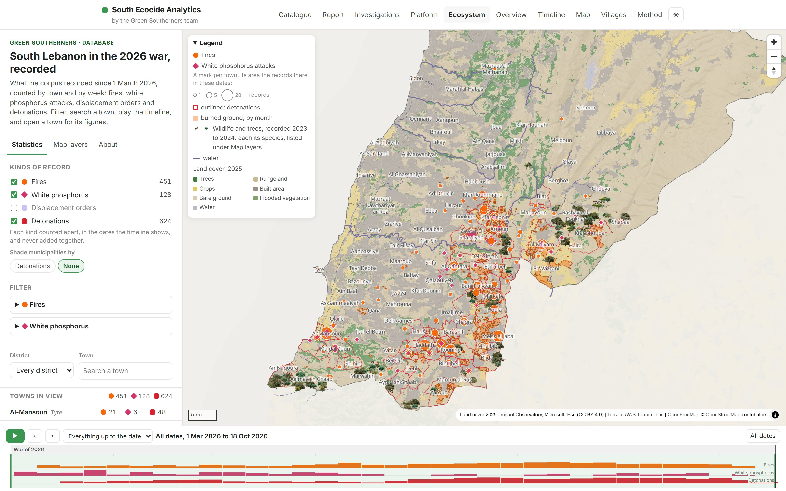
2.8 The tool we built
We built our own tool to hold all of this. The Green Southerners team designed and runs an in-house documentation platform: one spatial database, a web interface and a programming interface, open to our team by role. It carries the whole path of a record.
- Collection. Keyword collectors for Telegram and X, collectors for satellite detections and burnt-area maps, and the full-text archive.
- Staging. One queue per kind of record, where each message is built into a record, attached to one, or set aside.
- Record building. A registry of 9 kinds of record, of which this report uses four, each column and value documented.
- Verification and geolocation. The source, the file and the content are each assessed and then compared for consistency, as the Berkeley Protocol sets out (paragraph 176)9; each record is placed from its sensors and imagery before its village's point, and says which.
- Preservation. Archive copies, hashes and local captures; withdrawn sources and folded records kept with their reasons; 17,917 changes to records written to a revision log.
- The Village Studio. One map per affected village, over 12 towns, with the changes read on satellite and aerial pictures (buildings destroyed and damaged, roads bulldozed, fields and orchards cleared, burned ground), dated where the pictures allow. Each change after import is logged with its author: 43 edited, 39 drawn by hand and 3 removed.
- Processes. Background jobs collect messages and satellite detections, download Sentinel-2 pictures of towns and measure change and burn scars on them; each run is logged with its parameters.
The platform's public face is South Ecocide Analytics (greensoutherners.github.io/south-ecocide-analytics). It publishes statistics only, never records: counts by town, week and month, burned ground by month, and the damage layers of 11 towns. A reader can show or hide each kind, filter it, and play the weeks on a timeline (Figure 4); read the kinds month by month (Figure 5) or open a town (Figure 6); or follow one of 5 investigations step by step (Figure 7). Its totals for the window are this report's: every order record, white phosphorus attack and detonation report, and the 451 fires it publishes.

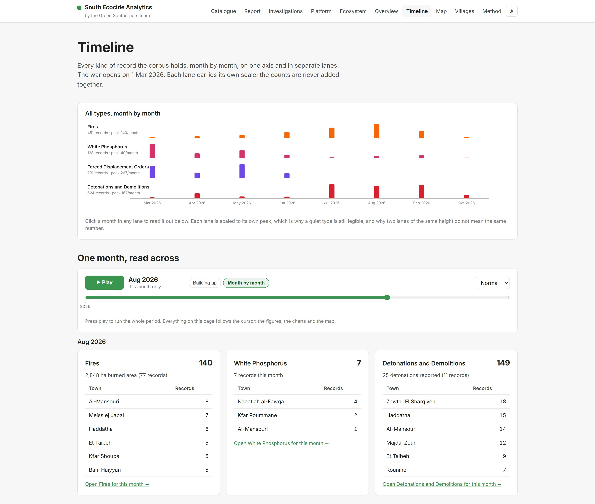
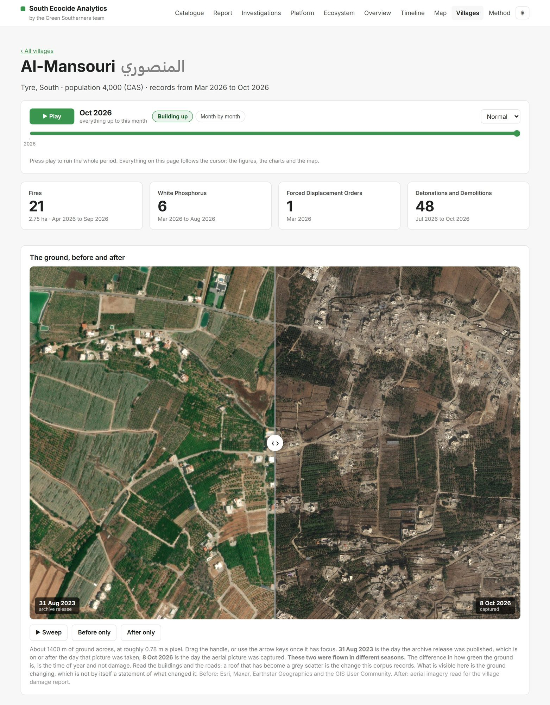
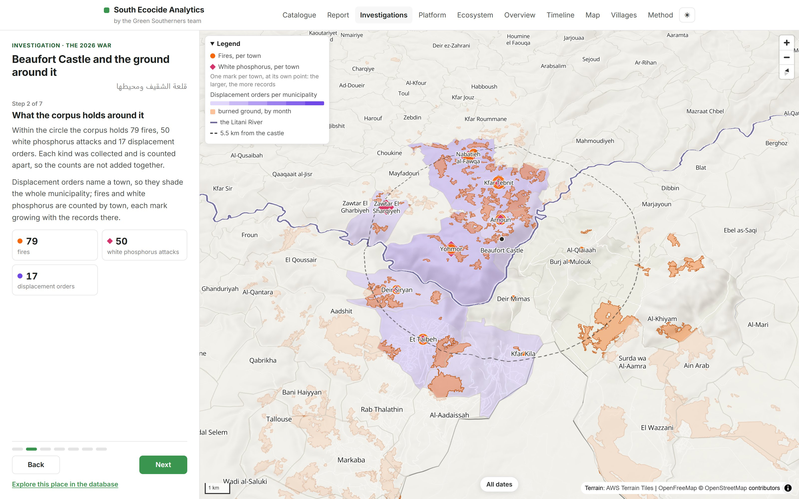
The records behind every figure are available on request (Section 11.11).
2.9 The collection in numbers
Table 3 gathers the size of the collection. Most counts are of the window; where a count covers the whole collection since October 2023, the table says so, because it describes the effort and not the war's events. Nothing in it is added across kinds or sources.
| What | Count | Scope |
|---|---|---|
| Records | ||
| Displacement orders recorded (towns or regions named) | 701 | the window |
| Announcements they come from | 145 | the window |
| White phosphorus attacks recorded | 128 | the window |
| Fires recorded | 565 | the window |
| Fires published on the platform | 451 | the window |
| Detonations and demolitions reported | 624 | the window |
| The media and official announcements | ||
| Telegram channels followed | 20 | configured |
| Search keywords, Arabic and English | 38 | configured |
| Accounts on X searched for white phosphorus | 71 | configured |
| Telegram messages saved by keyword | 1,879 | the window |
| Messages in the full-text archive | 426,811 | the window |
| Messages in the full-text archive | 1,779,836 | since 8 October 2023 |
| Archive searches for an attack at a fire's town and day | 10,452 | the whole corpus |
| Attack reports found in the archive on the window's fires | 2,682 | the window |
| National News Agency searches | 256 | the window |
| Satellites and sensors | ||
| NASA FIRMS thermal detections | 1,185 | the window |
| NASA FIRMS thermal detections, pre-war comparison | 1,206 | 2019 to 7 October 2023 |
| Fire events formed from the detections | 323 | the window |
| EFFIS burnt areas in Lebanon | 346 | the window, to 15 September 2026 |
| Fires with a burn scar measured on Sentinel-2 | 242 | the window |
| Detonation records with a Sentinel-2 picture from before | 611 | the window |
| Sentinel-2 pictures of towns written by the platform | 30,214 | all runs |
| OnGeo captures at 0.3 m | 78 | the window, 23 towns |
| Fires with the weather of their day | 562 | the window |
| Field members and open data | ||
| Images and videos on attacks and damage in the Visual Archive | 770 | at least; counted 17 November 2026 |
| Wildlife records of our assessment | 245 | 2023 to 2024 |
| Tree records of our assessment | 228 | 2023 to 2024 |
| Reference datasets on the platform | 32 | fixed references |
| Towns in the gazetteer | 880 | fixed reference |
| The platform | ||
| Kinds of record in the registry | 9 | four used here |
| Changes to records in the revision log | 17,917 | since the log began |
| Towns in the Village Studio | 12 | to date |
| Investigations on the public platform | 5 | to date |
Chapter 3 Method: the Berkeley Protocol and how we applied it
We hold the evidence behind every figure in this report to the Berkeley Protocol on Digital Open Source Investigations. This chapter sets out the Protocol's principles and phases, how we apply each phase to white phosphorus, fires, detonations and displacement orders, and where our practice still falls short of it.
3.1 Why the Protocol, and what it lets us claim
A reader who quotes a figure from this report needs to know how the evidence behind it was found, kept and tested, and needs a known standard to test it against. The Berkeley Protocol is the recognised standard for open-source work in human rights investigations: a guide for judges and fact-finders on evaluating open-source imagery, published in 2024 by a group of human rights organisations and universities, is based largely on it42. We use it as a discipline we hold ourselves to, and we report where we fall short of it.
The Protocol governs the evidence behind the figures: the sources we found, captured, archived, hashed, checked and linked in our corpus. This report is not itself an investigation file. It publishes statistics drawn from that evidence, counts, sums, shares and medians by week, month, district or town, and never the records or the files themselves. A reader cannot check a figure against its files from this page alone. The records and the archive are available on request to researchers and investigators (Section 11.11).
3.2 The principles
Chapter II of the Protocol sets out three groups of principles9. The professional principles are accountability, competency, objectivity, legality and security awareness (paragraphs 25 to 29). The methodological principles are accuracy, data minimisation, preservation and security by design (paragraphs 30 to 33). The ethical principles are dignity, humility, inclusivity, independence and transparency (paragraphs 34 to 38).
Those that shape this report most visibly are these.
- Accountability (paragraph 25). Every change to a record is logged as a revision, and nothing is thrown away: a source taken off a record, a record folded into another and a search result replaced by a later run are all kept, with their reason (17,917 logged changes to records). The Protocol counts transparency in method as part of accountability, so the rules by which records are built, linked and counted are stated in this chapter, as a written report's methodology should be (paragraph 210(b)).
- Objectivity (paragraph 27). Each chapter states the findings that complicate the pattern it describes, with their measure, in the place a reader expects them.
- Accuracy (paragraph 30). A claim is tested against a second kind of evidence wherever one can be asked: a report against the day it was posted, a fire against what satellites saw, a white phosphorus attack against footage and two satellite sensors.
- Data minimisation (paragraph 31). The Protocol asks that information be collected only for a stated purpose and only as far as that purpose needs. It prefers collecting item by item to bulk, automated collection, which it allows in some cases. Our keyword collectors save only the messages that match their terms, and each is a candidate, never a record by itself. The full-text archive of the channels we follow is a bulk, automated collection: it keeps their whole text history, though not their photographs or videos, because a search that finds nothing means something only over a complete archive (Section 2.3).
- Preservation (paragraph 32). Every source we cite is captured and hashed where it can be, and copied to a public web archive where the archive allows it.
- Dignity (paragraph 34). The Protocol notes that dignity may limit what is shared publicly about an investigation. We publish statistics, never records: no record is named, no single record's exact date and place is given, and no individual channel, journalist or private person is named.
- Humility (paragraph 35). A search that found nothing is a result about the sources searched, never proof that nothing happened.
3.3 The investigation cycle, kind by kind
Chapter VI of the Protocol describes an investigation in six phases and says that they form a cycle that is rarely linear9. Online inquiry searches and monitors (paragraph 141). Preliminary assessment decides what is relevant before anything is collected, to avoid collecting too much and to respect privacy (paragraph 147). Collection captures the item, by screenshot, PDF or forensic download (paragraph 153), and adds a hash value at the moment of collection (paragraph 154(h)). Preservation keeps what was collected accessible and usable, because online information is precarious (paragraph 157). Verification establishes accuracy by examining three things together: the source, the digital item and its content (paragraph 176). Investigative analysis draws findings from what was collected and checked (paragraph 195). Chapter VII then says what a written report should include, among other things its investigative objectives (paragraphs 208 and 210).
Table 4 shows how each phase is applied to each kind. Three of the four kinds run from a report to a record: a message in the media or an official announcement is found, assessed, collected and checked. Fires run the other way: a satellite detection comes first, the detection becomes a fire event and a record, and the media are searched afterwards for the human record of a fire the satellites already measured. The white phosphorus records this report reads were rebuilt under the Protocol from their sources; an earlier dataset, kept frozen so that its published findings can still be checked, is not used.
| Phase | White phosphorus | Fires | Detonations | Displacement orders |
|---|---|---|---|---|
| Online inquiry (141) | keyword collectors on Telegram; searches on X | NASA FIRMS and Copernicus EFFIS over the collection area; then the media searched for each fire | keyword collectors; a dated search of the open web for each village and day | the Israeli army's own published announcements, collected as issued |
| Preliminary assessment (147) | a report of phosphorus at a named town on a named day | the fire word within a sentence of the village's name; homonyms and the word for gunfire refused | a source of the same day naming the village and a detonation | each town or region the order names |
| Collection (153, 154(h)) | page captured and hashed; photographs and videos downloaded and hashed | page captured and hashed; detections, outlines and polygons saved as hashed files | page captured and hashed; photographs and videos downloaded and hashed | the announcement and its map captured and hashed |
| Preservation (157) | an archive copy where the archive accepted one | an archive copy of each report; sensor files kept hashed | an archive copy where the archive accepted one | an archive copy of every order |
| Verification (176) | independence of the sources; reverse image search; footage matched to the terrain; the munition judged on imagery | a detection on the fire's own event; a burn scar that turned dark; an EFFIS polygon | the same-day rule; every file looked at for the blast or its smoke; Sentinel-2 pictures before and after | the Beirut day of the post; one issuer |
| Investigative analysis (195) | buildings near the point; the yellow-line zone; fires at the same town and day | an attack documented at the same town on a Beirut day of the fire; the zone; the pre-war comparison | weekly rates before and after 18 April; the zone | an attack documented at the town by the end of the next Beirut day |
3.4 Online inquiry and preliminary assessment
Keyword collectors follow 20 Telegram channels of Lebanese and international press outlets, official publishers and other publishers, with 38 search terms in Arabic and English; searches on X and on the open web find the posts and articles of the same day for white phosphorus attacks and detonations. A message a collector saves is a candidate, never a record by itself. Beside the keyword collection, the whole text history of the channels is downloaded, not by keyword: 426,811 messages posted in the window, from 14 channels, each archive complete through 24 October 2026. It is this archive that lets a fire or an order be searched for attacks after the fact, and lets a search that finds nothing mean something. The satellites are watched in the same way, over the whole collection area: NASA's Fire Information for Resource Management System (FIRMS) for heat, and the European Forest Fire Information System (EFFIS) of the Copernicus programme for burnt ground.
The preliminary assessment is a set of written match rules, applied before a message reaches a person. A report of a fire must place the fire word within a sentence of the village's name: the channels publish daily bulletins listing a dozen villages under different headings, and a rule that only asked for the village and a fire in the same message would give one village's fire to its neighbour. A word that in these sources almost always means gunfire is refused as a fire word. Place names that collide with ordinary words are refused by their context: the Arabic name of Gaza is also the name of a village in West Bekaa, and it brought in only coverage of the war in Gaza; the Arabic word for "aerial" in "an aerial attack", once its case ending is stripped, spells the name of a town in the Tyre district. A report attached to a fire by hand meets the same rule, which can be overridden only with a recorded reason. The search for media reports of an attack at a fire's town applies the same discipline: an attack word must sit in the same sentence as the village, at most 160 characters from it, or under a bulletin heading that names it, and warnings, threats, denials and statements of intent are refused. A search that finds no report of a fire is written down as a result, kept apart from a fire nobody has searched for.
The other kinds have rules of their own. A detonation record needs a source posted on its own day that names the village and a detonation. A white phosphorus record is built from the reports of one town on one day. A displacement order is taken as the Israeli army published it, one record for each town or region it names, so that 701 records come from 145 announcements.
3.5 Collection and preservation
A source is captured when it is collected: the page as HTML or as a full-page capture, its text, and the SHA-256 hash of what was captured, as the Protocol asks at the moment of collection9. Photographs and videos are downloaded and stored under their own SHA-256 digest, so that a file's name is a claim of fixity that anyone holding the file can test, and each record's evidence folder carries a hashed manifest. A copy of each cited page is also requested from the Internet Archive, which gives a dated copy, held by a third party, that anyone can open. The satellite evidence of the fires is kept the same way: their detections, burn-scar outlines and renders and EFFIS polygons are saved as 2,258 hashed files on 559 fire records, because most FIRMS and map links are tied to an access key and cannot be archived.
Preservation is uneven, and the shares say how. Every source of the displacement orders is archived and hashed (100%), and so are 99.7% of the report sources of the fires. For white phosphorus, 89.7% of the sources are captured and hashed but only 50.7% have an archive copy; for detonations, 77.8% are hashed and 39.4% archived. Two causes explain most of the gap. The public web archive throttled our requests, and X refuses public archives altogether, so a post on X carries only our own capture and its hash. The media reports that tie fires to attacks are all hashed and none is archived: they are held in our full-text archive of the channels. Every photograph and video held is hashed: 208 files on the white phosphorus records and 1,187 on the detonation records.
Preservation mattered most for the displacement orders. The official channel that issued them no longer shows its messages from before 16 October 2026, so our archived and hashed copies are now the record of what it published. Our field members' Visual Archive of Attacks and Damage, with hundreds of photographs and videos of their own, is kept apart: it illustrates the report and is not counted in its figures.
3.6 Verification: the source, the file and the content
The Protocol asks for the source, the digital item and its content to be examined together9. For white phosphorus, detonations and displacement orders, how well each record is evidenced is not typed in by anyone: the database derives it from the evidence stored with the record (its sources and their preservation, its media, its sensor results), and a person can change it only by adding or withdrawing evidence. Every field and every coded value of these records is documented. For fires too, how well each record is evidenced is derived, not typed in: a written rule reads it from the fire's own satellite detections, the outside photographs or videos of it that a reverse search has not shown to be recycled, and its burned ground, and a fire with none of these rests on its reports alone.
The source
For each white phosphorus attack the corpus records whether its sources go back to one origin, are several sources repeating one origin, or come from two or more independent origins: 51, 61 and 16 of the 128 attacks. Most attacks therefore rest on one origin, often repeated. A single attack's account should be weighed accordingly; the weight of the corpus lies in the pattern across attacks, towns and weeks, and in the attacks a sensor or footage also places. The displacement orders have a single issuer, the Israeli army, and its own announcements are the source: for an order, the announcement is the event.
The file
A photograph or video is searched for earlier copies before it counts. Reverse image searches were run on 76 of the white phosphorus files, with 0 found to have been published before. A picture of a fire counts as an outside picture of it only if a reverse search has not shown it to be recycled: 5 of the 11 fire pictures searched had been published before, and they do not count. The technical examination of the files is the thinnest part of the work. Social media platforms strip most metadata, so a file's own time and place can rarely be read from it: on the detonation records, the technical assessment finds the metadata stripped on 217 records and intact on 37, and has not been made on 370.
The content
What a file shows was looked at, not assumed. On the detonation records every file was examined and kept only if it shows the blast, or the column of smoke or dust it left; headline cards, maps and reporters speaking to camera were taken off. Of the files withdrawn from these records, 354 did not show a detonation. A file that stays shows a detonation; it has not been shown to be the building the record names. For white phosphorus, the munition is judged on the imagery where there is footage: 7 attacks show its signature, the smoke of 11 is consistent with it and that of 5 is ambiguous, while 105 have not been judged on imagery and rest on what their sources report. In the towns whose damage was measured on sharp imagery, a building counts as destroyed or damaged only when a majority of independent readings of its pictures before and after agree; a candidate without a majority is listed, never counted.
The day: Beirut days and the same-day rule
Every day in this report is a Beirut calendar day. The servers keep time in UTC, and a timestamp becomes a day only on the Beirut clock: the cessation of hostilities took effect at 21:00 GMT on 16 April, which was 00:00 on 17 April in Beirut, so the report's series place it on 17 April4. Fire records first written on the UTC day of their first detection were moved to the Beirut day, each move logged.
A detonation record stands on a source posted on its own Beirut day that names the village and a detonation, and its day is that posting day, so an overnight demolition is filed on the morning it was reported. Because the collector searched from two days before a record's day to one day after it, every citation was checked against the record's day: 127 sources posted on another day were taken off the window's records and kept, and 15 records left with no qualifying source of the same day were withdrawn whole. For a fire, its Beirut day or days are a hard window, and a report from another day cannot be attached to it: 101 were taken off the window's fires. An order's day is the Beirut day of the post that issued it.
The place: geolocation by footage or by sensor
A point is only as good as what placed it, and the corpus records which. A white phosphorus attack is placed by footage of the attack or of its smoke matched to the terrain (21 attacks, within about 120 m), or by a satellite sensor, a FIRMS detection or a Sentinel-2 burn scar (17, within about 500 m, since a FIRMS point is the centre of a pixel 375 m to 1 km across). Each attack is placed by one method, never by an average of several. The other 90 sit at their village's point, which places the village, not the attack. By the public rule, which the platform applies too, 35 attacks are geolocated and 93 are not geolocated; 3 of the attacks placed by footage or a sensor fall short of that rule and are drawn at their village.
A fire seen by a sensor is placed at the centre of its own detections (267 fires), a fire that only EFFIS mapped at a point inside its polygon (42), and a fire that entered the corpus from a report at its village (256). Every detonation record sits at its village's point. A Sentinel-2 search for ground that turned bright like rubble between the clear passes either side of each report was run on all 618 village-days. On most of them another incident in the village too close before or after, or cloud, left no clean pair of passes; it found a certain change on 33, but none has yet been accepted by a person, so no detonation is placed more precisely than its village.
The satellites
FIRMS is asked for every thermal detection over the collection area, at most five days per request, with no filter on confidence, power or time of day. It gave 1,115 detections from the VIIRS instruments (pixels of 375 m) and 70 from MODIS (1 km) in the window, all kept, with a near-real-time row replaced by the standard archive where that exists. Detections at most 1,500 m and 12 hours apart form one fire event. Copernicus Sentinel-2, at 10 m, gives our own burn scars, measured over each fire's village and 2 km round its detections between a clear pass before and one after: a scar within 750 m of a detection is anchored to the fire (147 fires), one with no detection near it is burned ground found in the village's land (95), and a measurement that found no scar (162) is a result, not a doubt. EFFIS maps burnt areas with methods of its own; the layer we hold reaches 15 September 2026. For the detonations, Sentinel-2 pictures of each village either side of a report give 544 of the 624 reports a clear pair for a reader to look at; the pair places nothing.
What a fire rests on
As with white phosphorus, detonations and displacement orders, the Protocol's assessments of each fire's sources and files are derived and stored beside it; the report describes a fire's evidence by what saw it, in three groups that do not overlap. Of the 565 fires recorded in the window, 267 (47%) were seen by a satellite sensor; 121 (21%) left no detection but burned ground, a measured scar that turned dark or an EFFIS polygon; and 177 (31%) are known from reports only. Each kind of evidence says something different. A detection says that something radiated heat inside a pixel at one overpass, never what lit it. A darkened scar says that ground burned between two passes. A report says that someone wrote of a fire at a village on a day. Only 8 fires hold a photograph or video. Figure 8 sets the evidence of the four kinds side by side, each in its own panel.
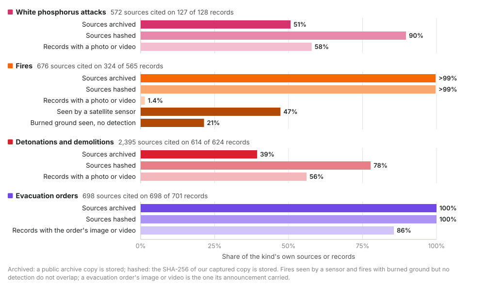
3.7 Investigative analysis: linking, folding and counting
The attack link rule for fires
A fire is linked to an attack when an attack is documented at the same town on a Beirut day of the fire, or when the fire's own source names one. The attack may be documented by a record of another kind in the corpus, by an event of an open feed of reported attacks inside the town's land (the feed stops on 30 June 2026), or by a media report found in the archive or through the National News Agency. Where several attacks are documented, white phosphorus outranks an incendiary munition, which outranks an illumination flare, which outranks any other attack. A fire whose own source states a cause other than an attack, such as an electrical fault, is filed as a non-attack fire; that is never read off the absence of a report. All 565 fires of the window were checked: 338 carry a link, 222 were searched with none found, and 5 found none without a media search. The 344 fires the report counts as linked to an attack are those decided on a link, with 8 more whose own source names the attack; the fires with a link also include the 2 non-attack fires, whose source states another cause. A search counts as a nil only where the archive covers that day; where a channel's archive falls short of it, the search is recorded as partial. The match is looser than the one used for the displacement orders, which adds four refusals (Section B.3); 327 of the 336 fires decided on a link keep one under them. The link is an association of town and day. It does not say that the attack lit the fire or struck the burned ground, and a fire with no attack found has an unidentified cause, which means that no attack was found in these sources, never that none happened.
The followed-by-attack rule for orders
For each displacement order, the corpus asks whether an attack was documented at the town it names from the moment the order was posted to the end of the next Beirut day, in the corpus's records of other kinds, the open feed, the media archive and the National News Agency. Of the orders that could be checked, 72% (475) were followed by an attack in those sources. For 189, no attack was found in these sources within that time, which is not a finding that none followed, and 37 could not be checked, nearly all because the order names no town. Like the fire link, this is an association in time and place, not proof that an order announced a given attack.
Folding duplicates
One event is one record. A fire event is the same fire as a record already held when one of its detections lies within 375 m of the record's detection on the same Beirut day; it is then linked to that record, not built again (56 events in the window). Two fire records are folded into one when they share a village within one day either way, or lie at most 2 km apart on the same day: the better evidenced survives and takes the other's reports and media, and the other is kept whole outside every count (105 in the window). The corpus never holds two white phosphorus records for one town on one day, and the 7 records marked as duplicates are kept and counted nowhere. A town named by two posts on the same day is one order record (58 such records). On the detonation records, duplication is recorded on the file rather than on the record: a copy of a file already held is withdrawn as a duplicate of it.
Statistics, never records; nothing summed across kinds
Every figure in this report is a count, a sum, a share or a median, by week, month, district or town, measured by a read-only program from the corpus on the date given at the front of the report, so that each can be measured again. A record is not an event. A displacement order record is a town or region named in an order; a detonation record is one village-day report, not one detonation and not one building; a fire record is one fire the corpus holds, not every fire there was. Fires, white phosphorus attacks, displacement orders and detonations are never added together: the corpus does not collect every kind of attack, and a combined total would claim a completeness it does not have. Where the kinds meet, at the same town or in the same week, they are set side by side. The unit of place is the town, and a village's point places the village, not the event. The yellow-line zone is tested on one outline, that of 18 June 2026, applied to the whole window, so "inside the zone" before 18 April means ground later inside it.
Figures from outside the corpus are kept apart from it. The estimates of people displaced made by the International Organization for Migration's Displacement Tracking Matrix (DTM) and relayed by the United Nations Office for the Coordination of Humanitarian Affairs (OCHA) and the UN refugee agency (UNHCR), and the findings of United Nations bodies and human rights organisations, are typed as their sources give them, with their date and reference (Section 4.7). They are never measured by our program and never added to, subtracted from or set in a ratio with a figure of the corpus: the corpus counts towns named in orders, not people.
3.8 Reporting, and where the method falls short
Chapter VII of the Protocol asks a report to state, among other things, its investigative objectives9. Ours is to establish, from aggregated evidence, what the 2026 war did to the land, the homes and the communities of South Lebanon from 1 March to 14 October 2026, and whether that conduct matches the descriptive elements of ecocide, urbicide and ethnocide. None of the three is a crime under any treaty that binds Israel or Lebanon, so the answer is an assessment from aggregated evidence, not a judicial finding. The method gives that answer its ground and also sets its limits. The main ones are these.
Chapter 4 Forced displacement orders
From the first days of the escalation the Israeli army ordered the people of South Lebanon out of their towns, in announcements it published itself. The orders named 64% of the towns of the South and Nabatieh governorates and, in orders to whole regions, told everyone south of the Zahrani river to leave. They began with a burst in the first week, went on through the ceasefire to a peak in May, and moved north until mid June.
4.1 How much of the south the orders named
The orders named 248 distinct towns in the window. Of the 354 towns the corpus's gazetteer holds for the South and Nabatieh governorates, the orders named 228, or 64%, one by one. 631 records (90%) fall in those two governorates. The rest reached beyond them: Beirut's southern suburbs, named as a whole in 16 records, and towns of the West Bekaa (22 records, 8 towns) and of the Baalbek district (7 records, 7 towns). In all the orders named places in 6 governorates and 12 districts of Lebanon.
Inside the two governorates the orders named most of the towns of every district but two (Table 5): 94% of the towns of the Nabatieh district, 85% of Tyre's and 81% of Bint Jbeil's. Jezzine (20%) and Hasbaya (1 of 21 towns) lie at the edge of the orders. Along the border some villages were never named in the window: of the 66 towns of the gazetteer inside the yellow-line zone, 20 were not. Their absence is not a sign that they were spared: Amnesty International's analysis of satellite imagery found near total clearing of almost all the border municipalities by 202632, and orders issued before the window are not in the corpus (Section 4.8).
| District | Governorate | Towns named | Towns in the gazetteer | Share named | Records |
|---|---|---|---|---|---|
| Nabatieh | Nabatieh | 45 | 48 | 94% | 184 |
| Tyre | South | 74 | 87 | 85% | 173 |
| Bint Jbeil | Nabatieh | 30 | 37 | 81% | 72 |
| Marjayoun | Nabatieh | 22 | 34 | 65% | 39 |
| Sidon | South | 45 | 73 | 62% | 130 |
| Jezzine | South | 11 | 54 | 20% | 29 |
| Hasbaya | Nabatieh | 1 | 21 | 5% | 1 |
Most towns were named more than once. 161 towns (65%) appear in more than one record and 160 on more than one day; the median town was named 2 times. The towns named most often were Arabsalim (11 days), Habboush (11) and Zrariye (11).
Orders to whole regions
Beside the town orders, 35 records name a whole region. The widest told everyone south of the Zahrani river to leave: 12 records from March 2026 to June 2026, 3 of them naming all of South Lebanon with the Zahrani as the line. Drawn from the orders' words, that area measures 1,702.8 km2, 84% of the two governorates as the administrative boundaries it is drawn on give them (2,023.9 km2; the OpenStreetMap outline of Section 1.1 gives 2,009), and holds 267 municipal areas and 242 towns of the gazetteer; 183 of those towns (76%) were also named one by one. An order of March 2026 told everyone south of the Litani to leave (1,204.3 km2, 60% of the two governorates, 172 towns). Others named Tyre, its camps and the neighbourhoods round it (5 records, 41.8 km2), Beirut's southern suburbs, and every vessel at sea between Tyre and Ras al-Naqoura (526.9 km2 of sea). The areas nest, the Litani's inside the Zahrani's and Tyre inside the Litani's, so their towns and areas are never added together. At the other end of the scale, 19 records name specific houses or buildings, and 2 name ambulances. Figure 9 maps the town records by municipality, with the region areas outlined.
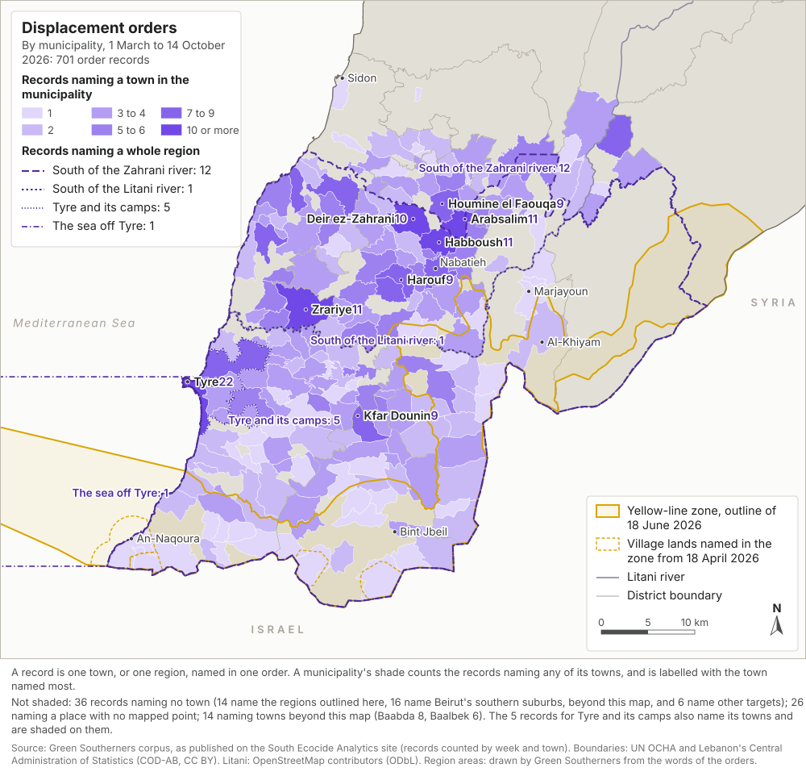
At this breadth the orders did not clear a line of contact. They named most of the inhabited south, town by town, and the region-wide orders took in 84% of its land. The United Nations human rights office warned on 6 March that the breadth of blanket orders of this kind, covering the whole area south of the Litani, made them very difficult to comply with and risked amounting to prohibited forced displacement33, and its update on the first three weeks repeated that finding1.
4.2 When: a first-week burst, a peak in May and a move north
The first order the corpus holds is of 2 March 2026, the day the escalation began1. The first week was the busiest of the window: in the week of 2 March 2026 the corpus holds 161 records (23% of all) from 21 announcements, naming 126 towns, which is 51% of all the towns the orders would ever name. By the end of March 157 towns (63%) had been named. The United Nations human rights office counted 71 warnings affecting at least 189 locations from 2 to 22 March1; over the same days the corpus holds 37 announcements naming 135 towns. The corpus reads one issuer's published announcements, so its count is a floor, not a census.
Through the rest of March the orders came in smaller batches, then in a second wave in the week of 6 April 2026 (50 records naming 44 towns). In the week the ceasefire took effect, at 00:00 Beirut time on 17 April4, and the Israeli army announced its yellow line on 18 April6, the corpus holds 2 order records, and in the week after it 8. The ceasefire did not end the orders; it came before their peak. From the week of 27 April 2026 (61 records) they rose to the busiest month of the window, May, with 267 records (38% of all), and to the week of 25 May 2026, second only to the first week (93 records from 20 announcements naming 80 towns). From 1 March to 17 April the corpus holds 42.0 order records a week; from 18 April to 14 June, 49.5 a week. 59% of all order records date from 18 April or later (Table 6).
Then the orders stopped. The last week with more than one order record is the week of 8 June 2026. After it the corpus holds only 3 order records, 1 in July and 2 in September, and none in October up to the 14th. No town was named for the first time after June. The orders stopped before Israel and Lebanon signed a framework agreement on 26 June34; the corpus does not show why they stopped, and Section 4.8 tests whether the silence is the collection's.
| Month | Records | Announcements | Towns named | Named for the first time | South of the Litani | Litani to Zahrani | North of the Zahrani, in the two governorates |
|---|---|---|---|---|---|---|---|
| March | 229 | 51 | 157 | 157 | 144 | 30 | 7 |
| April | 106 | 21 | 92 | 41 | 38 | 42 | 4 |
| May | 267 | 53 | 125 | 39 | 99 | 119 | 29 |
| June | 96 | 17 | 67 | 11 | 3 | 49 | 37 |
| July | 1 | 1 | 1 | 0 | 0 | 1 | 0 |
| August | 0 | 0 | 0 | 0 | 0 | 0 | 0 |
| September | 2 | 2 | 2 | 0 | 0 | 1 | 1 |
| October (to the 14th) | 0 | 0 | 0 | 0 | 0 | 0 | 0 |
| The window | 701 | 145 | 248 | 248 | 284 | 242 | 78 |
The move north
As the weeks passed the orders moved north (Figure 10). In March 144 of the 229 records (63%) named towns south of the Litani. In April the towns between the Litani and the Zahrani already outnumbered them (42 records against 38), and in May they held 119 of 267 (45%). In June only 3 of the 96 records (3%) named a town south of the Litani, while 86 (90%) named towns north of it in the two governorates, 37 of them north of the Zahrani. Of the 11 towns named for the first time in June, 10 lie north of the Zahrani.
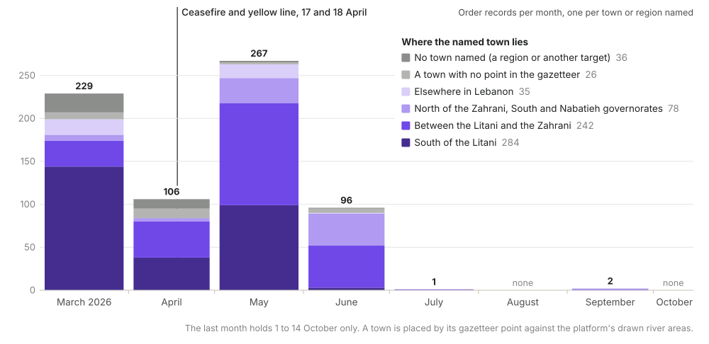
The same shift shows against the zone the Israeli army holds behind the yellow line (Section 1.2). Of the 66 towns of the gazetteer inside the zone (its outline of 18 June 2026), the orders named 46 (70%), and 43 of these were named before 18 April. Before that day 25% of the records naming a town named one inside the zone; from it, 3%. So after the ceasefire the orders turned almost wholly to towns beyond the ground the army held, and pushed the displacement north until mid June, while inside the zone, as the chapters on detonations and fires show, the destruction rose.
4.3 Delivered in the issuer's own announcements
Every order in the corpus was published by the Israeli army itself, in the Arabic-language announcements of its spokesperson, and collected from them as they appeared. These announcements are the only channel the corpus records. One announcement could name a single building or dozens of towns: 69 named one town or region, 18 named ten or more, and the largest named 83. On the busiest day the orders named 88 towns and regions; orders came on 80 days in all. Most announcements were posted in the working day, 87 of the 145 (60%) between 08:00 and 15:00 Beirut time, and 22 (15%) between 20:00 and 06:00. 600 records keep the image or video attached to their announcement, each file hashed.
The corpus holds no other channel of delivery. Leaflets, recorded or direct telephone calls, text messages, loudspeakers and warning strikes on roofs each count zero, because the collection read one issuer's published announcements; that is not evidence that these means were not used. The United Nations human rights office described the March warnings as vague, giving no safe routes, areas or duration and often little notice, and recalled that a warning does not absolve a party of its duty to protect civilians1. Customary law requires effective advance warning of attacks that may affect the civilian population, unless circumstances do not permit, and the obligations of distinction and precaution remain whether or not civilians have left after a warning43.
4.4 Attack evidence within a day of an order
For each order the corpus asks one question on one written rule: does attack evidence lie at the town it named between the moment the order was posted and the end of the next Beirut day? The evidence comes from the corpus's own records of white phosphorus attacks, detonations and attacks on towns, from a third-party open feed of reported attacks (read to 30 June 2026), and from reports of an attack at the town in the corpus's full-text archive of the media channels it follows. A relayed copy of the warning itself is refused unless it reports a strike after the warning, so an order is never its own evidence.
Of the 664 orders that could be checked, 475 (71.5%) were followed by attack evidence at the named town within that window. For 189 no attack was found in these sources. 37 could not be checked: 36 name no town, and for 1 a source does not reach the window. The evidence is mostly the media's: reports in the archive stand behind 426 of the followed orders and events of the open feed behind 239 (49 of them on the open feed alone). What they report is above all airstrikes (on 453 orders), then shelling (77) and drone strikes (69); an order can rest on several sources and kinds, so these counts overlap and are never added. The evidence is close in time: for 338 of the followed orders (71%) a report was posted after the order on its own day; 103 (22%) rest only on the next day, and 34 (7%) only on same-day sources with no hour, which may have come before the order. The median followed order rests on 4 links; 73 rest on one.
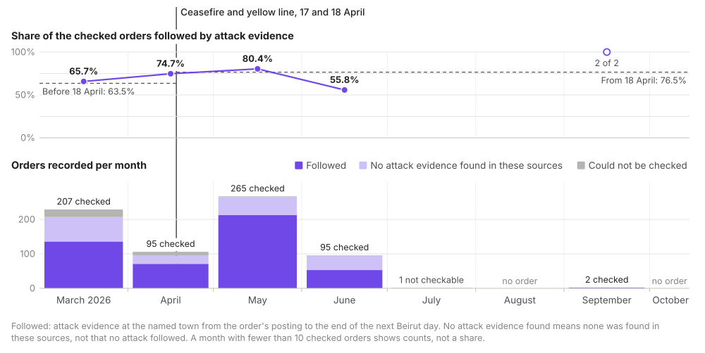
The share rose through the spring (Figure 11), from 65.7% in March to 74.7% in April and 80.4% in May, then fell to 55.8% in June; we have not established why June is lower. Orders issued from 18 April, under the ceasefire, were followed by attack evidence more often than those before it: 76.5% against 63.5%. Orders naming specific houses or buildings were followed in 94% of the cases that could be checked, whole-town orders in 71%.
Most orders, then, were followed within a day by reported strikes on the town they named, and more often after the ceasefire took effect than before it. The same rule has not yet been run on the days no order named these towns, so the share cannot say whether a strike was likelier after an order than on any other day of the war: it shows that most towns ordered out were reported struck within a day, not that the orders announced the strikes.
4.5 What the ordered towns recorded later
Most of the later destruction the corpus recorded in the south fell at towns an order had named first (Table 7). 92% of the detonations and demolitions reported, 81% of the fires the platform publishes and 80% of the white phosphorus attacks reported came after an order at their town. The delay was short for white phosphorus, a median of 22 days from the town's first order to its next record of the kind, and long for detonations (72 days) and for fires (91).
| Kind | Towns with the kind | Of which named in an order before a record there | Records after an order at the town | Median days, first order to next record | Ordered towns with the kind | Towns never ordered with the kind |
|---|---|---|---|---|---|---|
| White phosphorus attacks reported | 49 | 35 (71%) | 103 of 128 | 22 | 15% | 11% |
| Fires recorded | 162 | 120 (74%) | 455 of 565 | 99 | 52% | 28% |
| Fires the platform publishes | 109 | 79 (72%) | 364 of 451 | 91 | 36% | 21% |
| Detonations and demolitions reported | 52 | 42 (81%) | 572 of 624 | 72 | 18% | 8% |
These overlaps would be high even if orders and destruction were unrelated. The orders came first in the war's calendar, and the orders to whole regions covered almost all the ground where destruction was later recorded: counting them, only 4 of the 128 white phosphorus attacks reported, 1 of the 451 published fires and 0 of the 624 detonations came before an order covering their town. So a later record at an ordered town is close to certain whatever the order did. Measured against the calendar, with town-named orders only, 98.1% of the published fires at ordered towns came after the town's first order where the calendar alone predicts 98.9%; for detonations, 100% against 98.9%. The timing of a town's own order adds almost nothing.
The fairer test is the base rate. Among the towns of the two governorates, those an order named were more likely to have a later record of destruction than those no order named: 18% against 8% for detonations, and 52% against 28% for every fire recorded. For white phosphorus the gap is small (15% against 11%): it fell on ordered and unordered towns at similar rates, and in the first weeks it ran beside the orders rather than after them. The never-ordered towns are no clean control. Many lie on the front line inside the yellow-line zone and were emptied before the window by orders the corpus does not hold: of the never-ordered towns with a detonation, 6 of 10 lie inside the zone, and of those with white phosphorus, 9 of 14. Because those frontline towns raise the never-ordered rate, the gaps shown are, if anything, narrower than they would be against towns the war had not already emptied.
4.6 What the orders do not state
The orders give no numbers of people. The 701 records hold 0 estimates of the people displaced, 0 of the houses affected and 0 evacuation deadlines; 2 state a clock time. The corpus holds no count of the people living in the ordered towns either: its gazetteer gives a population for 47 of the 248, as best-effort estimates of mixed dates, not a census. So no figure of the corpus measures how many people left: a record is a town named, not a number of people. The estimates of people displaced that others made are given apart, as theirs, in Section 4.7.
Nor does the corpus record how long an order was to last or when people might return, and it does not classify the orders by whether they forbid return. The United Nations human rights office found that the March warnings set no duration1. Amnesty International, analysing the orders the Israeli military published from 23 September 2024 to 31 May 2026, found orders that bar return to a zone of about 6 per cent of Lebanon, and concluded that the displacement and the prevention of return amount to unlawful transfer32. The rules are these. Customary law forbids, in a non-international armed conflict, ordering the displacement of civilians and, in an international one, forcibly transferring the civilian population of an occupied territory, in both cases unless their security or imperative military reasons demand it23; which of the two reaches the orders for towns outside the yellow-line zone depends on how the conflict is classified (Section 10.6). In either kind of conflict it gives the displaced the right to return in safety as soon as the reasons for their displacement cease24; in occupied territory the Fourth Geneva Convention prohibits forcible transfers "regardless of their motive" and requires evacuees to be brought back as soon as hostilities in the area have ceased22. UN experts recalled in July that evacuation may not be used "to depopulate and occupy areas"17.
Set against these rules, the orders are hard to read as a temporary measure for the safety of the people they moved. They named 64% of the towns of the south; most of those that could be checked were followed within a day by reported strikes on the town they named; and they went on until mid June, well after the ceasefire took effect. The corpus cannot measure intent, and this is an inference from breadth, timing and what followed. What the corpus does show is that whole communities were ordered off their land and out of their homes across most of the south. The territories of the ordered towns cover 58% of the two governorates' land and hold 71% of their mapped places of worship, 76% of their cemeteries and 75% of their public schools: a measure of the orders' breadth, not of any aim at those places, and not an assessment of damage to them. The ground those communities left was then struck, burned and, inside the zone, demolished, as the chapters on white phosphorus, fires and detonations show.
4.7 How many people were displaced: the outside estimates
The corpus counts towns named in orders, never people (Section 4.6). How many people the war displaced is estimated by others, and we cite their figures as they give them. The estimate the United Nations bodies quote is that of the International Organization for Migration's Displacement Tracking Matrix (DTM), which counts the people displaced across Lebanon on a given day through more than 45 enumerators and some 1,450 key informants (municipal officials, mukhtars and community representatives) reached remotely, and checks its counts against the Lebanese Red Cross and the government's disaster risk management unit3. The United Nations Office for the Coordination of Humanitarian Affairs (OCHA) and the UN refugee agency (UNHCR) relay these figures44,45. Table 8 gives the figures we read in each publisher's own document, with the day each refers to. They are outside estimates of people. They are not the corpus's counts of orders, which count towns named, and they are never combined with them: no figure in this section is added to, subtracted from or set in a ratio with a figure of the corpus.
| Refers to | What was counted | Figure | Source |
|---|---|---|---|
| People displaced inside Lebanon | |||
| 16 April 2026 | Internally displaced across Lebanon, IOM's highest count of the war | 1,208,869 | IOM DTM, Round 952 |
| 18 April 2026 | Still displaced, the day after the ceasefire took effect | 827,702 | IOM DTM, Flash Update 1046 |
| 4 June 2026 | Displaced after a renewed rise, 6 per cent more than on 31 May | 963,497 | IOM DTM, Round 10247 |
| 9 July 2026 | Remained displaced, by IOM's count of that day as OCHA quotes it | about 430,600 | OCHA, Flash Update 4248 |
| 26 August 2026 | Remained displaced across Lebanon, in OCHA's last flash update | 334,353 | OCHA, Flash Update 5244 |
| 29 September 2026 | Still displaced, IOM's last count before 14 October | 329,686 | IOM DTM, Round 1183 |
| Districts of origin of those still displaced on 29 September 2026 | |||
| 29 September 2026 | Bint Jbeil (27 per cent of those displaced) | 89,414 | IOM DTM, Round 1183 |
| 29 September 2026 | Nabatieh district (25 per cent) | 82,654 | IOM DTM, Round 1183 |
| 29 September 2026 | Tyre (22 per cent) | 72,274 | IOM DTM, Round 1183 |
| 29 September 2026 | Marjayoun (11 per cent) | 37,608 | IOM DTM, Round 1183 |
| Villages near the Blue Line | |||
| 19 April 2026 (the map) | Lebanese villages in the area up to 10 km north of the Blue Line on the map the Israeli army published; villages near the Blue Line "largely inaccessible" | some 55 | UN Secretary-General, S/2026/566, paras 31 and 8649 |
IOM's matrix recorded 1,208,869 internally displaced people across Lebanon on 16 April 2026, its highest count of the war, of whom 141,733 were registered in 690 collective sites2. By its projection, 325,587 of them came from South governorate, and the districts of origin with the most displaced were Nabatieh (271,280), Baabda (270,995), Tyre (246,513), Bint Jbeil (151,436) and Marjayoun (78,478)2. On 18 April, the day after the ceasefire took effect49, IOM counted 827,702 people still displaced and 400,593 who had gone back, returns it said "cannot be considered permanent"46; a renewed rise brought the count back to 963,497 on 4 June47.
On 29 September 2026, its last count before the end of our period, IOM still recorded 329,686 internally displaced people, 14,277 of them in 154 collective sites, against 877,203 who had begun returning3. Those still displaced came mostly from the south: Bint Jbeil was the district of origin of 89,414 of them (27 per cent), Nabatieh district of 82,654 (25 per cent), Tyre of 72,274 (22 per cent) and Marjayoun of 37,608 (11 per cent), while 40,571 returns had been recorded into Bint Jbeil3.
The Secretary-General reported that the map the Israeli army published on 19 April showed an area reaching up to 10 km north of the Blue Line in which some 55 Lebanese villages lie, and that villages near the Blue Line were largely inaccessible49. OCHA wrote in late April of "continued restrictions on civilian return beyond the so-called Yellow Line"50, and UNHCR in July of almost 500,000 people who remained displaced, "unable to return to their home areas due to inaccessibility, destruction or continued insecurity"14. We found no United Nations or IOM count of the people displaced from the whole of that area.
Across the border, IOM's monitoring at four crossing points recorded about 864,238 movements from Lebanon into Syria between 2 March and 5 October 2026, 98 per cent of them by Syrian nationals; these are movements, not people51. UNHCR, citing the Syrian authorities, reported more than 200,000 crossings in the first four weeks alone, nearly 180,000 of them Syrians and more than 28,000 Lebanese52.
The sources do not always agree, and where they differ we give IOM's own dated count: the Secretary-General's "at least 1,049,328 people" displaced is the count of self-registrations on the government's relief platform, a different measure from IOM's estimate49,53; in early July UNHCR wrote of almost 500,000 still displaced as of 6 July and OCHA, three days later and citing IOM, of about 430,60014,48; and OCHA's October update dates IOM's 329,686 to the start of September, where IOM dates it 29 September54.
4.8 Coverage and limits of the collection
The collection cannot be repeated. The issuer has since deleted from its channel the messages it posted before 16 October 2026, so the orders can no longer be read at their source. They were collected live as they appeared, and the source announcements of 698 records were archived and hashed (100% of those cited): those copies are now the record.
The corpus holds almost no order after mid June: all but 3 of the 701 records fall from 1 March to 14 June. To test whether the silence is the collection's, we counted, month by month, the messages in the corpus's full-text archive of media channels that carry both the word for a warning and the word for residents: 168 in March, 52 in April, 124 in May and 50 in June, then 2 in July and 5 in August and 0 in October to the 14th. This is not a count of orders: one order is relayed many times, and the words occur in other news. But the relayed warnings collapse just when the recorded orders do, so the gap is unlikely to be only a gap in the collection. September's 27 such messages against 2 recorded orders is not explained, and we leave it open.
Chapter 5 White phosphorus
From the first week of the escalation, white phosphorus was fired on the border villages of South Lebanon and on the front along the Litani around Nabatieh. We recorded 128 attacks at 49 towns, most of them in March and April. Where an attack can be placed on the ground, it fell close to houses more often than not, at the edge of a village or on the land around it.
5.1 The weapon and the rules
White phosphorus burns on contact with air, sets fire to what it lands on and causes severe burns; fired from artillery as an airburst, it spreads burning pieces over a wide area55,56. Protocol III to the Convention on Certain Conventional Weapons counts "inhabited towns or villages" as a concentration of civilians, forbids attacking a military objective inside one with air-delivered incendiary weapons, allows other incendiary weapons there only where the objective is clearly separated from the civilians, and protects forests and plant cover unless they conceal combatants or military objectives or are such objectives themselves57. Lebanon consented to be bound by it on 5 April 2017 and has been a party since 5 October 2017, six months later; Israel is not a party58,59. Even between its parties the Protocol reaches only weapons "primarily designed" to set fire or to burn, so artillery white phosphorus sold for smoke or marking falls outside it in practice, a gap Human Rights Watch and Harvard Law School's International Human Rights Clinic ask states to close56. White phosphorus is not banned as such. What binds every party, Israel included, is customary law: particular care to avoid, and in any event to minimise, incidental harm to civilians and civilian objects when incendiary weapons are used27, no use against persons where a less harmful weapon would do60, and the rules of distinction, indiscriminate attack and precaution in the choice of means that Additional Protocol I sets out61. Our records speak to the facts those rules turn on: when the attacks fell, where, how close to houses and on what ground.
5.2 When: from the first week, and mostly in March
The first attacks were recorded in the week of 2 March 2026 (12 of them), the week the first displacement orders were published (Chapter 4): the two ran side by side, not one after the other. March alone holds 49 attacks, and its busiest week, that of 23 March 2026, holds 25 (20% of all). March and April hold 52% of the attacks, May and June 31%, and July to 14 October 17% (Figure 12).
The cessation of hostilities took effect at midnight on 17 April, Beirut time, and the Israeli army announced its yellow line the next day4,6. Before 18 April the attacks ran at 8.8 a week; after it, at 2.6. The fall began before the ceasefire and came in steps: fitted to the weekly series, the rate breaks from 12.0 a week to 5.3 in the week of 30 March 2026, and to 1.5 in the week of 8 June 2026, about when the orders stopped. It fell inside the yellow-line zone (from 6.7 to 1.6 a week) and outside it (from 2.0 to 1.0). White phosphorus was heaviest in the war's first weeks, and it did not rise after the yellow line was announced, as the detonations and fires did. Nor did it stop with the cessation of hostilities: 68 of the 128 attacks recorded (53%) date from 18 April, 42 of them at towns inside the yellow-line zone.
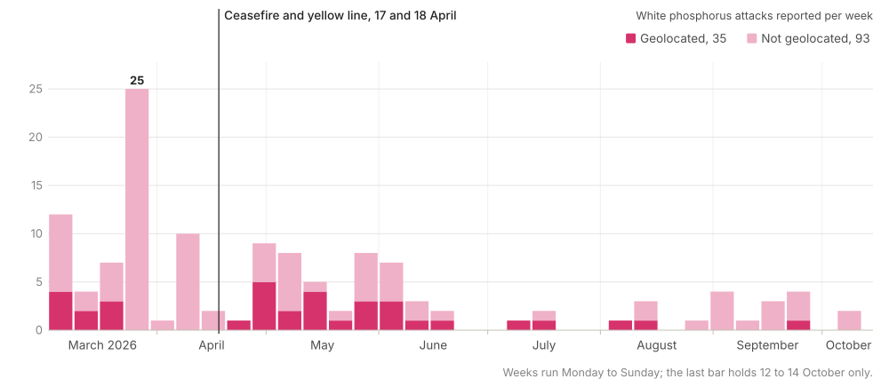
Town by town, white phosphorus came before the destruction that followed. At every one of the 30 towns that hold both white phosphorus attacks and detonations reported in the window, the first white phosphorus attack came before the first detonation, a median of 39 days earlier. The war's calendar alone, with first days shuffled across the same towns, would give 84%. At some of them, detonations had already been reported in January or February 2026, before the window.
5.3 Where: the border villages, then the Litani front
All the attacks fell south of the Zahrani, and they form two groups (Figure 13). 80 (63%) fell at 42 towns between the border and the Litani, from the coast at An-Naqoura to the Hasbaya hills. The other 48 fell at only 7 towns on the Litani's north bank around Beaufort Castle and Nabatieh, the most attacked of all: Yohmor (12), Zawtar El Sharqiyeh (12) and Nabatieh al-Fawqa (11). That is why the Nabatieh district holds 38% of the attacks, at 7 towns. The five most attacked towns hold 37%; 22 towns have a single attack.
Over time the attacks moved north. Before 18 April 82% fell south of the Litani; from 18 April 54% fell on its north bank. Against the yellow-line zone (outline of 18 June 2026), 88 attacks (69%) were at towns inside it. Before 18 April, at ground later inside the zone, the share was 77%; from 18 April it fell to 62%, because the most attacked town of that period, Nabatieh al-Fawqa (11 attacks), lies outside the zone, while Zawtar El Sharqiyeh (10) and Yohmor (7) lie inside it. White phosphorus followed the front: first the border villages, the ground the Israeli army came to hold, then the towns on the Litani at that ground's northern edge and just beyond it.

5.4 How the attacks are placed
Each attack is placed by one method, never by an average (Section 3.6). 21 are placed by footage of the attack or its smoke matched to the terrain, within about 120 m; 17 by a satellite sensor, a NASA FIRMS detection (7) or a Sentinel-2 burn scar (10), within about 500 m; the other 90 sit at their village's point. By the public rule 35 attacks (27%) are geolocated. The later attacks are better placed: 15% of those before 18 April against 38% from it, so the spatial measures below lean on the later attacks, and on the zone, where 27 of the 35 geolocated points lie. The platform shows the two groups apart (Figure 14).
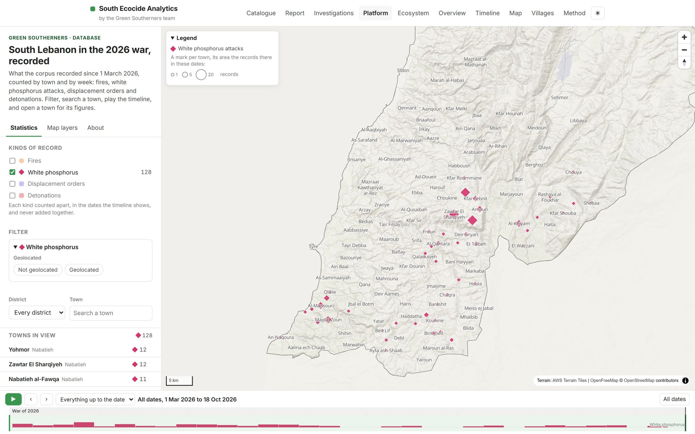
5.5 Close to houses
For each geolocated attack we measured the distance to the nearest building mapped in OpenStreetMap (the Humanitarian OpenStreetMap Team's footprints, fetched in July 2026) and tested whether the point lies in built-up land, by the Ministry of Energy and Water's land-use map or OpenStreetMap's residential land. 22 of the 35 (63%) fell within 100 m of a building and 30 (86%) within 250 m; the median attack lies 43.3 m from the nearest building. Only 12 (34%) lie in mapped built-up land. The attacks placed by footage, the tightly placed ones, are the closest: 15 of 19 (79%) within 100 m, a median of 31.9 m from the nearest building. The 16 attacks placed by a satellite sensor lie further out: 7 (44%) within 100 m of a building and 14 (88%) within 250 m, a median of 111.5 m from the nearest, and 3 in built-up land. A sensor point is a pixel centre or the middle of a burn scar, uncertain by about 500 m, so its 100 m test says little either way. Neither group is a random draw of the attacks: one holds the attacks someone filmed and that could be matched to the terrain, the other those that left a fire a satellite could see.
In a land of villages a building within 100 m means less than it would in open country, so we ran the same tests on random points spread over the land of the localities that hold a geolocated attack (20 locality cells, each weighted by its attacks). The attacks lie nearer to buildings than that land does: 65% against 51% within 100 m, 88% against 77% within 250 m, 35% against 24% in built-up land (Figure 15). With 34 attack points each difference could still be chance (one-sided p = 0.08, 0.09 and 0.09): suggestive, not conclusive.
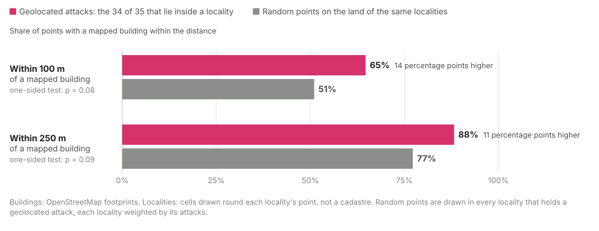
The measure supports "close to houses", not "on residential areas" in general. The typical geolocated attack fell some tens of metres from the nearest building, at the edge of the built area more often than in its middle, where a village's houses give way to its gardens, fields and woodland. Taking both methods of this chapter together, 26 of all 128 attacks (20%) are tied to residential ground: a building within 100 m, or sources that place the phosphorus over the attacked town's neighbourhoods or populated areas (Section 5.6). That is a floor, since most attacks cannot be tested on the ground.
5.6 What the sources say was struck
We read the sources of every attack (509 of the 572 had readable text) and counted an attack as placed on residential ground when one clause, in a bulletin that may list a dozen towns, holds both a phosphorus word and a word for houses, residential land, neighbourhoods or populated areas. 8 attacks (6%) match, on words for neighbourhoods or populated areas; a word for a house or a home never stands beside phosphorus in these sources. The neighbourhood matches are at Al-Khiyam, whose sources say the shelling with phosphorus targeted the town's northern and western neighbourhoods. The others rest on a press report, citing the National News Agency, that Israeli forces used white phosphorus on the populated areas of Deir Siryan, Al-Qantara, Taibeh, Yohmor, Zawtar, Froun, Ghanduriyah and Borj Qalaouiye, and on an international newspaper's general statement about populated areas of South Lebanon, which names no town; so only 5 name the attacked town.
The sources more often name open ground. 53 of the 125 attacks with a phosphorus clause (42%) name the outskirts or surroundings of a town (45), hills (11), valleys and plains (11), woodland (3) or farmland and orchards (3); most of the rest say only "the town of" a place. Text and measure agree: the phosphorus fell mostly at the edges of villages and on the land around them, close to houses, and in a few towns, by the sources' words, on their neighbourhoods. The edge of a village is where its people live beside the land they live from, and fire there threatens homes and land together. Between the parties to Protocol III, forests and plant cover may not be made the object of attack by incendiary weapons unless they conceal combatants or military objectives or are themselves military objectives57. Israel is not a party, and the rule reaches only weapons primarily designed to burn. The guidelines of the International Committee of the Red Cross still count the natural environment among the civilian objects that particular care must spare when incendiary weapons are used62.
5.7 Fires filed with white phosphorus as cause
A fire takes white phosphorus as its cause when phosphorus is documented at its town on a day of the fire. 19 fires of the window do, 4.2% of the 451 the platform publishes: 9 seen by a satellite sensor, 10 known from reports only, and 365 ha burned over the 9 with a measured area. These are fire figures, never added to the attacks. 8 of the fires are linked to an attack in this chapter's records; the other 11 are tied to phosphorus by reports our attack records do not hold, 10 of them by a media report of phosphorus at the town that day.
Seen from the attacks, 8 (6%) have a fire record at their town on their day, and 18 (14%) within a day either side. Most attacks left no fire the corpus records; that is not evidence that nothing burned, since an attack on green spring ground or a hillside often leaves no fire large enough for a satellite to detect or for the media to report. The two series also run at different times: 18 of the 19 fires came on or after 18 April, mostly from May to September, when the attack records were thinning. Two readings fit and do not exclude each other: dry summer vegetation catches fire where spring growth does not, so a summer attack is likelier to leave a fire a sensor can see; and phosphorus was still reported at burning towns on days our attack records hold nothing, which makes those records a floor, not a count.
5.8 What others found
On 9 March 2026 Human Rights Watch reported that Israeli forces had fired artillery white phosphorus over homes in a residential neighbourhood of Yohmor on 3 March; it confirmed and geolocated eight images and judged airburst use over populated areas unlawfully indiscriminate55. The United Nations human rights office reported farmland, forests, soil and water systems degraded by heavy artillery, incendiary weapons and land clearing in March, amid reports of ammunition with incendiary effect containing white phosphorus1. On 22 July six United Nations experts said they were alarmed by allegations of artillery-fired white phosphorus over residential areas17. On 9 September Human Rights Watch and Harvard Law School's International Human Rights Clinic reported that an independent researcher's archive, corroborated by Human Rights Watch, documents 22 incidents involving 33 white phosphorus munitions from March to May 2026; those geolocated lie in Al Khiam, Arnoun, Yohmor and Zawtar56. The 2026 use continues one documented since October 2023, including, by June 2024, airbursts over populated residential areas in five municipalities29,30,31.
Our records agree on where. The four places named in the 2026 report are among our 7 most attacked towns: Yohmor (12 attacks), Zawtar El Sharqiyeh (12; its neighbour Zawtar El Gharbiyeh has 2), Al-Khiyam (6) and Arnoun (5). The counts stay apart: an incident or a munition there and a town-day here are different units, and some of the same footage may lie behind both, so the agreement is a check on place, not a second tally.
5.9 The evidence behind the figures
74 attacks (58%) have a photograph or video preserved in our evidence store, 208 files in all, each with a content hash. The attacks cite 572 sources, a median of 3 per attack; 90% are captured and hashed and 51% have a copy in a public web archive. Every attack was checked against NASA FIRMS and Sentinel-2: 19 were seen by one, and for the other 109 the search found nothing, a result rather than a gap. The munition was judged on imagery for 23 attacks (its signature visible in 7, the smoke consistent with it in 11, ambiguous in 5); the others rely on what their sources report. Most attacks rest on one origin of reporting, often repeated, and 16 on two or more independent origins. We do not use shell counts as a measure of scale: almost all come from our own earlier reporting, and shells stated by sources come to 2. The records do not establish an attack's purpose (screening, marking or harm to people), whether a military objective was present, or who was injured. The records and preserved files are available to researchers on request (Section 11.11).
5.10 What the white phosphorus record shows
White phosphorus was heaviest in the war's first phase in the south, and it did not stop with the cessation of hostilities. It began in the week of the first displacement orders, peaked in March, and was fired first on the border villages, the ground the Israeli army came to hold behind the yellow line, then on the towns of the Litani front at that ground's edge. At every town that also saw detonations reported, it came first. Where it can be placed it fell some tens of metres from the nearest mapped building, at the edges of villages and on their gardens, fields and hills; that it fell nearer to houses than the land around them is suggested, not settled (p = 0.08 on 34 points). In a few towns, by the sources' words, it fell on their neighbourhoods. The customary duty to take particular care to spare civilians and civilian objects from incendiary weapons27 applies with most force exactly there, beside homes and on the land that sustains them. Whether a given attack broke the law turns on what was targeted and why, which the records cannot show; what they show is where and when, across 49 towns and 26 weeks.
Chapter 6 Fires in the 2026 war
From 1 March to 14 October 2026 the corpus recorded 565 fires in South Lebanon. Most were linked to an Israeli attack documented at their town on the day they burned, most burned in the summer, and most lay in the zone the Israeli army holds behind the yellow line, where after the ceasefire they rose far faster than on the ground beside it. What burned was the open scrub and grassland of the hills, farmland and the fabric of the villages, not forest.
6.1 What was recorded, and what the platform publishes
The corpus recorded 565 fires at 162 towns. Our public platform, South Ecocide Analytics, publishes 451 of them (80%) at 109 towns: every fire linked to an Israeli military attack (344), and every other fire inside the yellow-line zone (107). A third rule, the towns round Beaufort Castle, adds no fire the first two do not already hold. The 114 fires the platform leaves out have no attack linked and are not placed inside the zone; they stay in the corpus, and this chapter counts them wherever it says "recorded".
The fires lay above all in the districts along the border with occupied Palestine and on the front between the Litani and Nabatieh: Marjayoun (155 fires), Tyre (132), Bint Jbeil (131) and Nabatieh (94). Marjayoun alone holds 3,612 ha of the 7,237 ha recorded on all the fires. They were spread over many towns rather than gathered in a few: the ten towns with most fires hold 27% of them, and the town with most, Al-Mansouri, holds 21 (Figure 16).
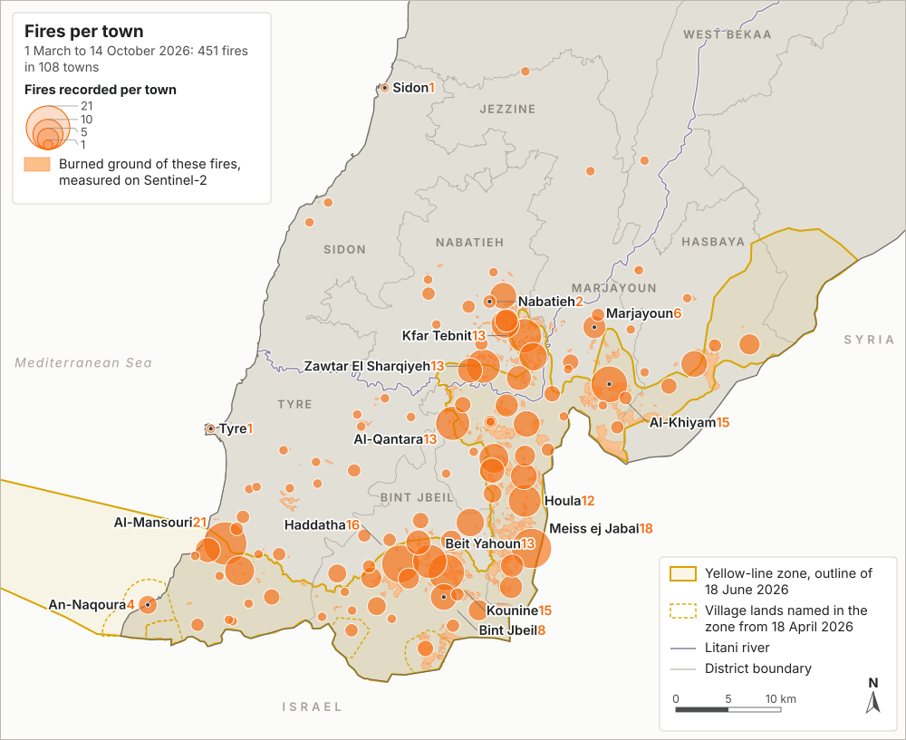
6.2 When and where: the summer, and the zone behind the yellow line
Fires were few in spring and many in summer. The corpus holds 14 in March, 20 in April and 32 in May, then 69 in June, 139 in July and 187 in August, the peak month; July and August together hold 58% of the fires recorded. The busiest week was that of 10 August 2026, with 48 fires.
The yellow line divides the record in two. The ceasefire took effect at 00:00 Beirut time on 17 April4 and the Israeli army announced its yellow line on 18 April6. In the 48 days before that announcement the corpus holds 30 fires, 4.4 a week; in the 180 days from it to 14 October, 535, or 20.8 a week. 95% of the fires recorded came after the ceasefire had taken effect.
The rise was concentrated in the zone the Israeli army holds behind the yellow line (Section 1.2, Figure 17). The zone covers 30% of the land of the South and Nabatieh governorates; 364 of the fires recorded (64%) lay inside it. There the weekly rate went from 1.6 before 18 April to 13.7 after it, 8.6 times; outside it, anywhere in the collection area, from 2.8 to 7.0, 2.5 times. Here a fire counts inside when its burn scar, its own point or its village's point lies inside the outline. Placed instead by its town's point, with "outside" limited to the South and Nabatieh governorates as in Chapter 9, the same fires rose 7.5 times inside and 3.0 times outside (Section B.2). 97% of the zone's fires came after the announcement. The same holds with one rule on both sides: counting only the fires linked to an attack and placing each at its town's point, the weekly rate rose 5.3 times inside the zone and 1.5 times outside it in the same two governorates.
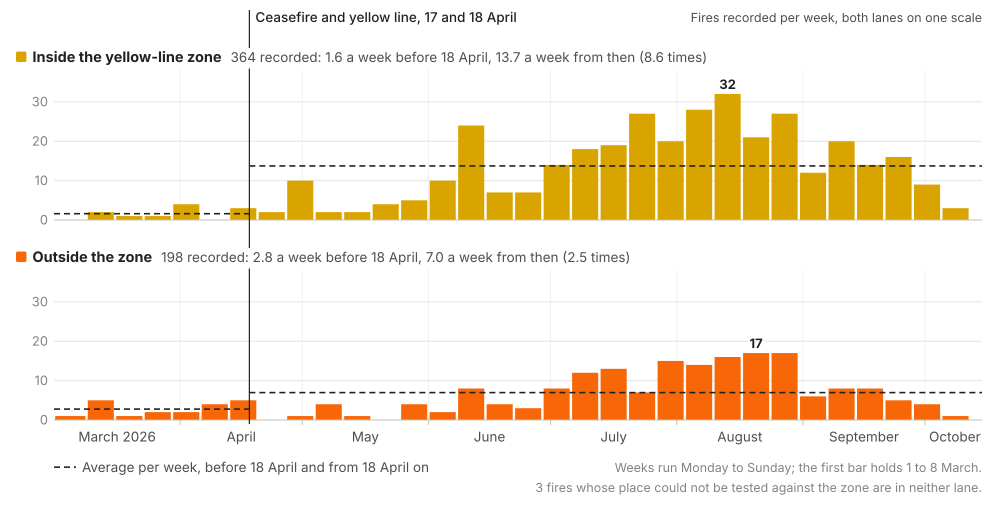
The rise was not a single step. Fitted week by week, the attack-linked fires ran at about 5 a week from March to late June and at 17.3 a week from the week of 29 June 2026, the same week in which the reports of detonations broke upward (Section 8.2). Fires and detonations rose together, well into the ceasefire.
Part of the rise is the season's, but over the whole south the satellite record cannot say how much of it. Between the same calendar days, satellite fire events rose 13.9 times after 18 April 2026 and 5.4 times in 2019 to 2023 taken together. Satellites see few fires before 18 April in any year (6 fire events in 2026, 21 in the five pre-war years), so both ratios are fragile. The fires recorded in 2026 rose 4.8 times, but they include fires known from reports only, so they are not set against this satellite yardstick. From 15 June 2026 into the summer, satellite fire events rose 2.0 times in 2026, against 2.4 times before the war: that part of the rise matches the season. The summer of 2026 was itself one of high fire danger: the fires of July burned on days whose fire danger stood, at the median, at the 96.8th percentile of EFFIS's record for the place and season. A summer figure therefore mixes weather and war. What the season does not explain is the gap between the zone and the ground beside it in the same weeks. Before the war the season lifted the ground outside the zone more than the zone's own. Between the same calendar days of 2019 to 2023, satellite fire events after 18 April rose 2.1 times on the zone's ground and 36.9 times outside it, the latter from 2 spring events in five years. From 15 June the rise was 1.4 times inside and 3.5 times outside. So the season works against the contrast, and yet the fires recorded inside the zone, each placed by its own scar or point, rose 3.4 times as steeply as those outside it, and in the satellite record alone the fire events seen inside the zone after 18 April were 5.5 times the pre-war mean for the same days, against 2.6 times outside it. The same strip also burned far above the ground beside it in 2024, when it was the front (Section 9.3); in 2026 it burned so after a cessation of hostilities. How far 2026 stood above the same weeks of the years before the war, and what the fire-danger forecasts said on the fires' days, are the subject of Chapter 7.
6.3 What lit them: the attack link
The corpus does not observe what lit a fire. It links each fire to the attacks documented at the same town on a Beirut day of the fire: a record of another kind in the corpus, an event of an open feed of reported attacks inside the town's land, or a report of an attack at the town that day in the media, found in the corpus's full-text archive of the channels it follows or through the National News Agency. Where several are documented, white phosphorus outranks an incendiary munition, which outranks an illumination flare, which outranks any other attack. All 565 fires of the window were checked.
344 fires (61%) are linked to an Israeli military attack (Figure 18). Most are secondary fires from an explosion: 294, or 85% of the attack-linked fires, burned at a town where shelling, an airstrike, a drone strike, a detonation or another attack was documented that day, or carry a source of their own that names such an attack. 19 burned where white phosphorus was used that day, 17 where illumination flares fell and 14 where an incendiary munition was reported. Counted under every kind documented at their town that day (so these figures overlap and are never added), detonations stand beside 162 fires, shelling beside 155, airstrikes beside 108 and drone strikes beside 72. The attack is documented mostly by the media: 202 of the 338 fires with a link (60%) rest on media reports alone, and a record of another kind in the corpus stands behind 109. (The fires with a link are the attack-linked fires less the 8 whose own source names the attack, plus the 2 non-attack fires.)
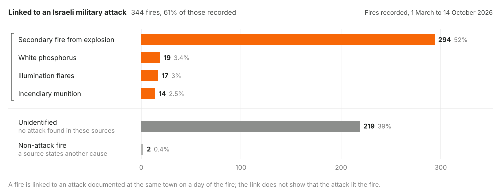
219 fires (39%) have an unidentified cause: their town was searched and no attack was found there on their days in these sources. Only 2 are filed as non-attack fires, because a source on the fire states another cause; the corpus never reads a non-attack cause off the absence of a report.
So the fires of 2026 are mostly not linked to weapons made to burn. White phosphorus, incendiary munitions and flares stand beside 50 of the attack-linked fires (15%). The rest are linked to the bombardment and the demolitions: shells, bombs and charges going off in towns of dry grass, scrub, fields and gardens. That does not lessen the duty owed to the land. Customary law applies distinction, proportionality and precaution to the natural environment whatever the weapon25 and requires methods of warfare to be used with due regard to its protection63; where incendiary weapons are used, it requires particular care to avoid incidental damage to civilian objects27.
6.4 What a fire rests on, and how that shapes the attack share
Each fire carries its own mix of evidence, and the kinds overlap. 267 fires (47%) were seen by a satellite sensor; 242 (43%) carry a burn scar measured on Sentinel-2; 206 (36%) lie under an EFFIS burnt-area polygon; 119 carry all three. 177 (31%) are known from reports only, and only 8 hold a photograph or video.
How a fire was found shapes the share linked to an attack. Of the fires that entered the corpus from a report, 85% are attack-linked; of those a satellite detected, 43%; of those only EFFIS mapped, 26%. A reported fire is built only from a report that carries the context of an attack, and such a report often names the attack itself, so the high share among reported fires is partly a product of the collection. The satellite-detected fires are the sample nobody chose, and among them 151 of 267 (57%) have no attack found at their town on their days. Seen the other way, attack-linked fires were seen by a satellite less often (34%) than fires with no attack found (69%), and 42% of the attack-linked fires are known from reports only.
So the 61% is not an estimate of the share of the south's fires that attacks lit. In the unselected satellite sample an attack is documented at the town that day for 43% of the fires, and that is close to a floor set by what the media reported, not a ceiling: 3 of the 110 of them decided on a link rest only on links the stricter rule of the orders would refuse (Section 6.3). Nor are the fires with no attack found evidence of a quiet south: 107 of the 219 lie inside the zone. An attack is reported where people are there to see it; in towns emptied by order and held by the Israeli army, the absence of a documented attack is especially weak evidence that none occurred.
6.5 The burned ground
A burn scar is the ground that turned dark between a clear Sentinel-2 pass before a fire and one after it, measured at 10 m over the land of the fire's village and 2 km round its detections. The scars cover 6,506 ha on 242 fires, ground two fires share counted once; 6,208 ha of it lie on the 147 fires whose scar is anchored to a satellite detection within 750 m. With the EFFIS polygons of the fires only EFFIS mapped and a few earlier outlines, the fires recorded hold 7,237 ha in all, on 290 of the 565 fires. The platform draws the 6,101 ha of scar in its scope as its layer of burned ground (Figure 19).
The median fire with a measured area burned 7.1 ha; 56 burned 30 ha or more, and 18 of them 100 ha or more. The hectares are a summer's: fires that started in June, July and August left 90% of the scar hectares. And they are the zone's: 5,164 ha of the burned ground, 79%, lie inside its outline. Counted by fire, 90% of the scar hectares are on fires counted inside the zone, because a fire whose scar touches the outline, or whose village's point lies within it, is counted there whole. Within the two governorates, the scar ground inside the outline, 5,125 ha, covers 8.5% of the zone's land, against 0.9% of their land outside it, both floors.
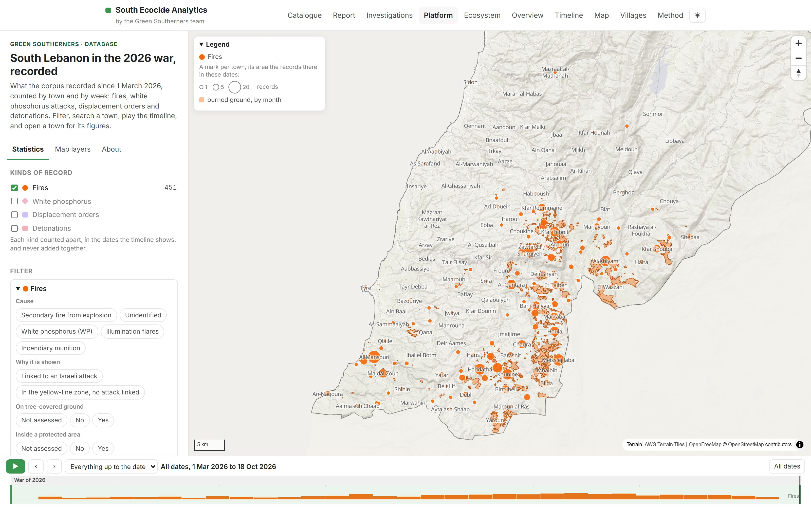
Nearly half the hectares lie on fires with no attack found: 3,535 ha (49%). In the platform's scope these are fires of the yellow-line zone, 2,920 ha. Most of the fires with no attack found were seen by a satellite (69%): they are the fires the sensors measure, not those the media describe. Whatever lit them, those in the zone burned in ground the Israeli army held and its residents had been ordered to leave. If that ground is occupied territory, the International Law Commission's principles on the environment in armed conflict say that an occupying power "shall take appropriate measures to prevent significant harm to the environment of the occupied territory"35.
6.6 What burned: scrub, grassland, farmland and the village fabric
Read on the 2025 Sentinel-2 land-cover map of Impact Observatory, Microsoft and Esri, the platform's burned ground is 60% rangeland, the open scrub and grass of the hills; 23% built area; 17% crops; and 0.2% trees (Figure 20). Across the two governorates the same map reads 44% rangeland, 41% built area, 6% crops and 9% trees. The fires took cropland at 2.9 times its share of the land and rangeland at 1.4 times, and all but missed the map's trees, which are tall, dense canopy. The Ministry of Energy and Water's map of Section 1.1 draws its classes differently: it gives built land 12% of the two governorates where the satellite map's built area, which takes in the gardens and orchards round the houses, is 41%, and field crops 16% where the satellite map's crops are 6%. Read on that map, the burned ground points the same way: field crops are 30% of it, 1.9 times their share of the land, and grassland and scrub 54%, 1.4 times theirs. Olive groves, orchards, vineyards and woodland burned at well under their share (0.3 times), yet about 612 ha of the burned ground lay in them, 418 ha of it in olive groves. EFFIS's own reading of its 288 polygons of 2026 in the south, an independent second reading, agrees: 83% other natural vegetation, 15% agricultural land and 1.1% forest.
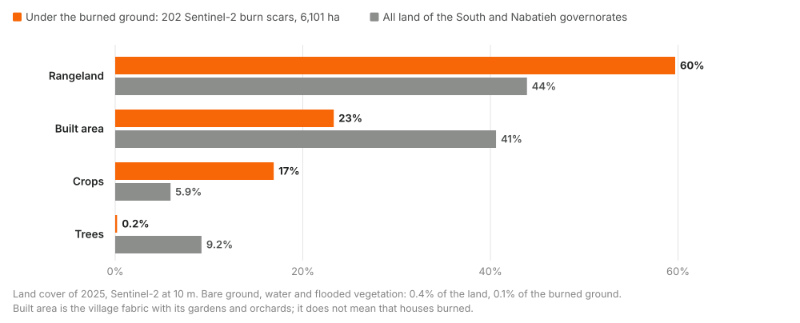
This is not a story of burned forests, and the report does not tell it as one. It is the burning of the land people live from and live in: about 1,031 ha of land the map classes as crops, about 3,642 ha of the open hills between the villages, and about 1,422 ha in the village fabric itself. In a map at 10 m, built area is the village with its gardens, orchards and the ground between houses, so this says that fire burned in and round the villages, not that houses burned. That is the land a returning family would live from. Grass and scrub can regrow from a single fire within a few seasons; fire repeated on land nobody may return to tend is another matter, and seven and a half months cannot show whether this land will recover.
6.7 Key Biodiversity Areas, water and wildlife
Of the 19 Key Biodiversity Areas the KBA Partnership lists in Lebanon, the burned ground reached 5: 185 ha of burn scar lay inside them, 2.9% of the burned ground. Most of it, 123 ha, lay in the large mountain site of Rihane, Chouf, Ammiq and Sannine. In the small site of Sarada, 317 ha in all, the scar of one fire placed outside it covered 53 ha, 17% of the site. Nakoura to Tyre holds 6.1 ha of scar and 7 fires placed inside it by a sensor or a scar. No burn scar touched any of the 9 protected areas OpenStreetMap maps in the two governorates. The fires burned the ordinary land of the south far more than its designated sites, but in a site as small as Sarada a single fire can burn a large part of it.
OpenStreetMap maps 456 rivers, streams, canals, reservoirs and other water bodies in the two governorates. Of the 202 burn scars the platform publishes, 76 (38%) come within 500 m of mapped water and 12 touch it; those scars hold 3,325 ha, 55% of the platform's burned ground. Burned slopes beside streams are where ash and soil would reach the water with the winter rains, but the corpus holds no water sampling: this measures nearness, not contamination.
In 2023 and 2024, before this war, Green Southerners recorded 245 sightings of 22 kinds of wild animal and 228 trees and shrubs of 11 species across the south. 80 of the wildlife records (33%) and 59 of the tree records (26%) lie within 1 km of the point of a fire the platform publishes; 57 and 51 lie within 1 km of the burned ground itself.
6.8 What the fire record shows
Fires were recorded across the whole south in 2026, and most burned in the summer, as they did before the war; what departs from the season is where they burned. They gathered in the ground the Israeli army holds behind the yellow line and rose there after the ceasefire far more steeply than on the ground beside it, and most of them burned at towns where an attack was documented the same day. What they burned was the open hills, the fields and the land round the villages whose people had been ordered to leave. The UN human rights office reported farmland burned or contaminated in the first weeks of the escalation1, and the High Commissioner said in July that he had heard how strikes and demolitions south of the Litani had flattened agricultural land with the homes, schools and water networks8. The fire record measures that harm to the land in hectares, places it and dates it. It cannot show what any commander knew or intended, or whether the damage will last; those are the questions the conclusions weigh, element by element, against the definitions of ecocide10.
Chapter 7 Fires before and during the war: beyond the season and the weather
The south burns every summer, so the fires of 2026 mean little until they are set against the years before. Over the same weeks, on the same ground and with the same satellites, a satellite detected 3.7 times as much fire in 2026 as in the average year of 2019 to 2023, and EFFIS mapped 33.1 times as much burnt ground in burns of 30 ha or more. The other war year, 2024, was as high; 2025 was not. In spring most fires burned on days the forecast rated low, often in the rain; in July and August a satellite saw fire on almost every day.
7.1 Holding the season, the ground and the sensors fixed
The comparison reads the sensors, not the fire records of the corpus: its figures are totals over an area, not the counts of recorded fires that the platform publishes. Only the reading of fire danger and weather (Section 7.7) goes back to the records. Cutting 2023 at the war line changes almost nothing: the seven war days of 8 to 14 October 2023 would add one detection (74 against 73). The 43 detections the corpus admitted only because they fell inside a measured burn scar are left out, because no pre-war year can hold such a detection.
7.2 Satellite detections: several times every pre-war year
The lead measure is the count of detections by VIIRS on the Suomi NPP satellite; its twin on NOAA-20 and MODIS serve as cross-checks. Inside the collection rings it made 334 detections between 1 March and 14 October 2026. The five pre-war years ranged from 49 to 127, with a mean of 90.0 and a median of 99. 2026 is 3.7 times the mean, 3.4 times the median and 2.6 times the highest pre-war year (Figure 21). The last figure is the conservative one: it sets 2026 against the worst pre-war year rather than an average one. Leaving out 2023, the shorter year, gives 3.5 times; leaving out the West Bekaa, which is not South Lebanon, 3.8 times.

Independent instruments say the same. VIIRS on NOAA-20, the same design on the same orbit, made 326 detections in 2026, 3.5 times its own pre-war mean; MODIS on Terra and Aqua, with a pixel of about 1 km against VIIRS's 375 m, made 52, 3.3 times its mean. The two VIIRS sensors move together, as they should: the ratio of their yearly counts lies between 0.77 and 1.33 in every year, and is 1.02 in 2026, so neither sensor's record shows a deficit or a surplus of its own.
One change of method had to be tested. Standard Processing, the consistent archive, ends on 30 June 2026 for VIIRS, and the rest of 2026 is Near Real Time. A Near Real Time detection with a Standard Processing twin of the same satellite within 15 minutes and 750 m is one overpass reported twice, and is dropped (62 in 2026). On the 13 days of 2026 that hold both, Standard Processing holds 61 detections and Near Real Time 62, of which 62 have their twin: the switch does not inflate 2026. On Standard Processing alone, from 1 March to that same day in every year, 2026 holds 64 detections against a pre-war mean of 19.8, 3.2 times.
Detections count pixels, and one large fire makes many. Grouped into fires (detections within 1,500 m and 12 hours of each other, the corpus's own rule applied alike to every year), Suomi NPP saw 160 fires in 2026 against a pre-war mean of 51.8, 3.1 times; over the three feeds of the baseline together, 2.6 times. Every measure of heat rises, by 2.6 to 3.7 times; none falls.
7.3 Burnt ground: tens of times the pre-war hectares
The European Forest Fire Information System (EFFIS), part of Copernicus, maps the ground that burned as polygons. We read the polygons it labels Lebanon that reach into a box over the south (32.6 to 33.75° N, 34.9 to 36.3° E), wider than the rings, by EFFIS's mapping date. EFFIS's mapping reaches 15 September 2026, so every year is cut at the same calendar day and 2026 is never compared over weeks EFFIS has not yet mapped. From 2020 to 2023 EFFIS mapped a mean of 249 ha a year over these weeks; in 2026 it mapped 8,694 ha, 34.9 times as much, in 346 polygons against a mean of 9.8. Most of it lies on the ground the satellites' count covers: measured the same way, 7,536 ha of the 8,704 ha mapped in the box in 2026 (87%) fall inside the collection rings.
The firmest measure of burnt ground counts only burns of 30 ha or more. EFFIS mapped only large burns here before 2020, and it maps ever smaller ones as the years pass, so an all-sizes count drifts upwards on its own; the large burns are mapped the same way in every year, 2019 included. On that measure the five pre-war years averaged 196 ha, and 2026 burned 6,495 ha, 33.1 times the mean and 20.2 times the largest pre-war year (322 ha). These large burns hold 75% of 2026's mapped hectares, in 77 polygons, where a pre-war year held 1 to 5.
The two instruments rise by different factors, 2.6 to 3.7 times for heat and 33.1 to 34.9 times for burnt ground, and they do not conflict. FIRMS counts heat at the moment of an overpass, twice a day for each VIIRS sensor, so it misses a fire that burns between passes and registers many small pre-war burns; EFFIS maps the ground left burnt, where the large fires of 2026 weigh most. The two are never combined into one figure.
7.4 Two war years, and the year between them
2024 is a second war year to set beside 2026. It was a war year until the ceasefire of 27 November 2024, and over the same weeks it burned as much as 2026: Suomi NPP made 361 detections, 4.0 times the pre-war mean. 2024 is in fact higher than 2026 on every satellite measure: NOAA-20 439 against 326, MODIS 73 against 52, fires seen by Suomi NPP 176 against 160. On mapped burnt ground to 15 September 2026, 2026 is higher (8,694 ha against 6,878 ha), but over the whole window 2024's 9,574 ha exceed what EFFIS has so far mapped of 2026. So 2026 is not the record year of the thermal archive. It is the second of two war years that both stand far above the five pre-war years.
2025, the year after the ceasefire, is the counter-test. Over the window it sat at the pre-war level: Suomi NPP 0.9 times the mean, NOAA-20 1.0 times, MODIS 0.6 times, and over the whole calendar year 117 detections, 1.0 times the mean of the complete pre-war years (2024 made 674, 6.0 times, with 15 days of November never answered). That level is the window's, not the spring's. On Standard Processing alone, from 1 March to the end of June, Suomi NPP made 43 detections in 2025, 2.2 times the pre-war mean of 19.8 and more than the highest pre-war year (35), and NOAA-20 made 1.8 times its own mean. Its summer was quieter on the same sensor: Suomi NPP made 12, 12 and 9 detections in July, August and September 2025, against pre-war means of 17.6, 14.8 and 19.8. Over the window, on the same ground and with the same sensors, the two war years stand several times above the five pre-war years, and the year after the ceasefire does not. The fires follow the war, not the calendar (Table 9).
EFFIS reads 2025 differently, and the difference is instructive. It mapped 10.1 times the pre-war number of polygons in 2025 and 4.0 times the hectares, while every satellite count over the window stayed at the pre-war level. The median polygon it mapped shrank from 54 ha in 2019 and 63 ha in 2020 to 5 ha in 2025: part of EFFIS's rise is more mapping of small burns, not only more burning. Counting only large burns, 2025 stands at 2.0 times the pre-war mean, against 27.3 times for 2024 and 33.1 times for 2026.
| Measure | 2019 | 2020 | 2021 | 2022 | 2023 | Pre-war mean | 2024 | 2025 | 2026 | 2026 against the mean | 2026 against the highest pre-war year |
|---|---|---|---|---|---|---|---|---|---|---|---|
| Detections, VIIRS on Suomi NPP | 102 | 127 | 99 | 49 | 73 | 90.0 | 361 | 84 | 334 | 3.7× | 2.6× |
| Detections, VIIRS on NOAA-20 | 84 | 164 | 121 | 43 | 55 | 93.4 | 439 | 96 | 326 | 3.5× | 2.0× |
| Detections, MODIS on Terra and Aqua | 15 | 44 | 12 | 2 | 6 | 15.8 | 73 | 9 | 52 | 3.3× | 1.2× |
| Fires seen by Suomi NPP (grouped detections) | 63 | 59 | 56 | 32 | 49 | 51.8 | 176 | 58 | 160 | 3.1× | 2.5× |
| EFFIS burnt area, all sizes, ha | n/c | 125 | 235 | 134 | 502 | 249 | 6,878 | 998 | 8,694 | 34.9× | 17.3× |
| EFFIS burnt area, burns of 30 ha or more, ha | 253 | 125 | 202 | 80 | 322 | 196 | 5,366 | 393 | 6,495 | 33.1× | 20.2× |
| EFFIS polygons, burns of 30 ha or more | 2 | 2 | 4 | 1 | 5 | 2.8 | 64 | 10 | 77 | 27.5× | 15.4× |
7.5 Month by month: an excess of the dry season
The rise is not spread over the year (Figure 22). From March to May 2026 Suomi NPP made 12 detections against a pre-war mean of 9.4 for the same months; from June to September it made 320 against 62.6, 5.1 times. Those four months hold 96% of 2026's detections, against 70% of a pre-war year's. The excess peaks in August, at 8.0 times the pre-war August (119 against 14.8), with June at 6.0 and July at 5.2 times. EFFIS's hectares follow the same shape, far more steeply: 1,785 ha in June against a pre-war mean of 20 ha, 2,920 ha in July against 27 ha and 3,282 ha in August against 62 ha.
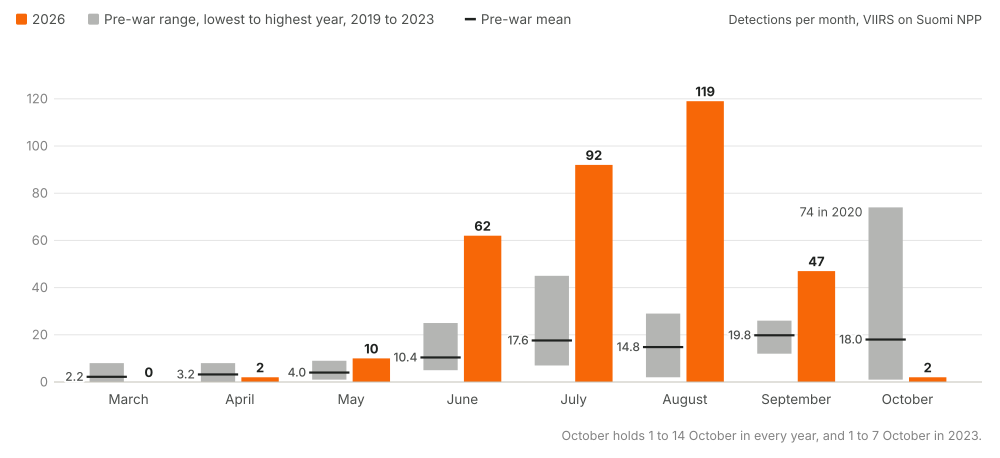
March, April and 1 to 14 October 2026 sit at or below their pre-war means. October's mean is lifted by the wildfires of October 2020 (74 detections in the first fortnight of that month alone), and the window's last day is only partly covered. Spring is the harder case, taken up below: in the green months the satellites saw little more fire than before the war, while the corpus recorded fires on many days.
7.6 How often the south burned
A second way to read the season is the probability that a given day held a fire: the share of days in each calendar month on which a satellite detected one inside the collection rings. Before the war, counting the Beirut days of 1 January 2019 to 7 October 2023 on the four sensors of the baseline (both VIIRS sensors, Terra and Aqua), a spring day held a detection 8% of the time in March and 16% in May; July and August days held one 37% of the time, September days 49%. In 2026 a satellite saw fire on 47% of June's days, 87% of July's, 90% of August's and 70% of September's (Figure 23). In the height of summer, a satellite saw fire on almost every day.
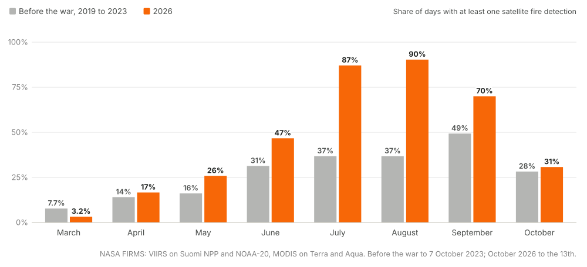
Counted as fires, the window of 2026 holds 262 against the 88.4 that the pre-war rate for the same calendar days would give, 3.0 times; the pre-war years held 53 to 106 over the same span, and each of June, July, August and September 2026 held more fires than that month in any of them. The excess is a dry-season excess: from June to 13 October 2026, 245 fires against 76.2 expected (3.2 times); from March to May, 17 against 12.2 (1.4 times). Days with a fire rose less than fires (1.7 times), because a day counts once however many fires it holds, and in July and August that count was near its ceiling. The 56 fires of 2026 that only NOAA-21 saw are left out. The corpus's own record, which also holds fires known from reports and from EFFIS and so is not like for like with the satellites, has a fire on 40 of the 92 spring days (43%).
7.7 The fire-danger forecast and the weather on the days the fires burned
A fire season follows the weather; fires set by war need not. To tell the two apart, the fires recorded in the window carry the fire-danger rating and the weather of their day: the Fire Weather Index that NASA's Global Fire WEather Database (GFWED) forecast the day before, the one true forecast a person could have read in advance, and the value Copernicus's Global Wildfire Information System (GWIS) gives for the day from ECMWF's model. Both are classed on EFFIS's scale of June 2021: low below 11.2, moderate to 21.3, high to 38.0, very high to 50.0, extreme to 70.0 and very extreme above. The weather is the ERA5 reanalysis of the day and of the week before it. Of the 565 fires recorded in the window, the platform publishes 451, and 344 are linked to an attack, documented at their town on a day of the fire or named by their own source; 562 carry a rating.
Spring: fires on green, wet days
Of the 66 fires recorded from March to May, 53% burned on days the forecast issued the day before rated low and 64% on days rated low or moderate (Figure 24); by GWIS, 77% and 98%. Counted by day rather than by fire, 30 of the 40 spring days with a fire were rated low or moderate by GFWED, and 40 of 40 by GWIS. 45% of the spring fires burned on a day with 1 mm of rain or more in the ERA5 cell, about as often as rain fell on the days round them (38% of the seven days either side), and 80% after rain in the week before; the median minimum humidity of their days was 56.5%. The weather forecast issued the day before (DWD's ICON model) foresaw rain for 21 of the 66 fires. Against the climate of the place and the season, 85% of the spring fires burned on days whose danger stood below the usual (below the median of EFFIS's long-term record), and 53% in its lowest quarter.
The weather gave these fires little help. And the fires that burned on such days were almost all at towns where an attack was documented on a day of the fire: 41 of the 42 spring fires on days rated low or moderate are linked to an attack at their town on a day of the fire, and 56 of all 66 spring fires are. A link is an association in place and time, not proof that the attack lit the fire.
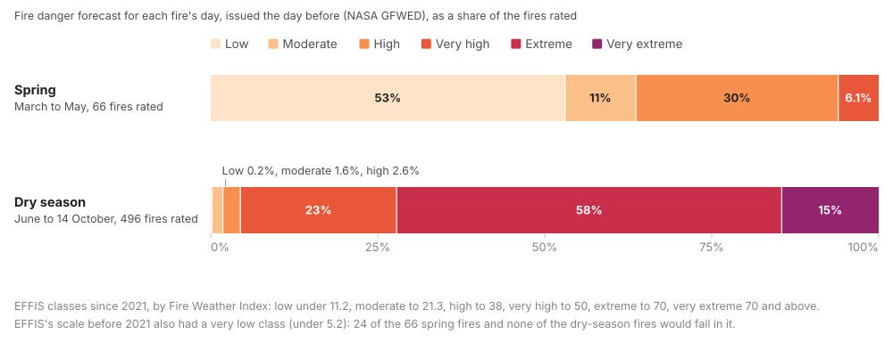
The dry season: high danger in a severe summer
From June to 14 October the forecast tells the opposite story. Of the 499 fires recorded, 98% burned on days GFWED rated high or above (89% by GWIS), and the summer of 2026 was itself one of unusually high fire danger: the median dry-season fire burned on a day at the 90.6th percentile of EFFIS's long-term record, 52% of them at or above its 90th, and the median July fire at the 96.8th percentile, 1.6 standard deviations above the mean. Over the whole window 85% of the fires burned on days the forecast rated very high or above. So the statement that the fires burned whatever the forecast said holds for spring, and for a minority of the fires over the window; it does not hold for most of them.
In summer, then, the weather and the war push the same way, and the ratio of 2026 to the pre-war summers cannot tell them apart. Two comparisons can. The first sets the two sides of the yellow line against each other in the same summer: after the line was announced on 18 April6,7, satellite fire events inside the zone the Israeli army holds stood at 5.5 times the pre-war mean for the same calendar days, against 2.6 times outside it, in neighbouring ground under the same summer. Both levels are overstated by much the same factor, since 2026 was seen by more satellites than the pre-war years, so the ratio between them, 2.1, is the measure; Section 9.3 measures it in full. The second comparison holds the ground and the sensors fixed and takes away the war of 2026: 2025, at the pre-war level. It does not hold the weather fixed, since no danger value is stored for 2025, so it shows that this ground did not burn like this in the year after the ceasefire, not that the summer of 2025 was as dry.
7.8 The instruments
Every figure in this chapter comes from public instruments that anyone can query again (Table 10). Each is described, with what it establishes, what it does not, and its licence, in the annex on data sources and sensors (Annex A).
| Instrument | What it measures | Resolution | Used here for |
|---|---|---|---|
| VIIRS on Suomi NPP and NOAA-20, through NASA FIRMS | Heat at the moment of an overpass: one detection per hot pixel | 375 m pixel; Standard Processing to 30 June 2026, Near Real Time after it and where Suomi NPP's Standard Processing archive is silent | The lead count (Suomi NPP) and its cross-check (NOAA-20); fires grouped from detections; the share of days with a fire |
| MODIS on Terra and Aqua, through NASA FIRMS | As VIIRS, with a coarser pixel that misses smaller fires | About 1 km pixel; Standard Processing to 31 July 2026 | A cross-check, never added to VIIRS |
| Copernicus EFFIS burnt areas | Ground mapped as burnt, as polygons, by mapping date | Polygons; most burns under a few hectares are missed; mapping reaches 15 September 2026 | Burnt hectares and polygons, all sizes and 30 ha or more |
| NASA GFWED v2.0 (GEOS-5) | Fire Weather Index, forecast the day before and analysed for the day | About 28 km, daily | The danger class a person could have read in advance |
| Copernicus GWIS and EFFIS fire danger (ECMWF) | Fire Weather Index for the day, and its rank in EFFIS's long-term record | About 8 km, daily | A second danger class; where the day stood against the climate |
| ERA5 and ERA5-Land reanalysis | Temperature, humidity, wind and rain, reconstructed hour by hour | About 11 km (temperature, humidity); 25 to 28 km (wind, rain) | Rain on the fire day and in the week before; humidity |
| DWD ICON weather forecast | The weather forecast issued the day before | About 13 km, hourly | Whether rain was forecast for a fire's day |
7.9 What the comparison shows
Held to the same weeks, the same ground and the same instruments, the south burned in 2026 far above every year from 2019 to 2023: 2.6 to 3.7 times the pre-war mean by every count of heat, 2.6 times the highest pre-war year on the lead sensor, and 33.1 times the pre-war burnt ground in large burns alone, 20.2 times the largest pre-war year. The other war year, 2024, burned as much, and 2025, the year after the ceasefire of November 2024, sat at the pre-war level on every satellite count over the window, a busier spring offset by a quieter summer. The burning follows the war, not the calendar.
The weather does not explain the spring fires: most burned on days the forecast rated low or moderate, often in rain, and almost all of those at towns where an attack was documented on a day of the fire. Most of them are known from reports alone, and a report becomes a record only with the context of an attack, so that link partly reflects how they were collected; and on the satellites spring 2026 held about the pre-war number of fires (Section 7.6). That is consistent with what the UN human rights office reported for 2 to 22 March 2026, weeks in which the satellites saw no more fire than before the war: farmland burned or contaminated, and degraded by heavy artillery, incendiary weapons and land clearing1. In summer the danger was high and the season itself severe, so the summer ratio mixes weather and war; what separates the two there is the contrast between the zone the Israeli army holds and the ground outside it in the same summer, and the pre-war level of 2025.
What the comparison establishes is scale and timing: how much more of the south burned, and how often, in the weeks and on the ground it covers. The ecocide definition proposed by the Independent Expert Panel speaks of "severe and either widespread or long-term damage to the environment"10; the hectares and the distance from every pre-war year speak to the severity of the damage, since the burning of 2026 is not the ordinary fire season. Whether it is widespread is measured by the towns it reached (Chapter 6), and seven and a half months cannot show that it is long-term. The comparison establishes nothing about what lit any single fire, or about intent: the sensors name no cause, and the link to attacks is argued from the attack record (Chapter 6, Chapter 9).
Chapter 8 Detonations, demolitions and the built fabric of the villages
This chapter is the report's main evidence for urbicide: the destruction of the built fabric of the border towns and villages, their houses and other buildings and the places their people share. Inside the zone the Israeli army holds behind the yellow line, reports of buildings detonated and demolished multiplied after the ceasefire took effect: 91% of the reports are of towns in that zone, and 95% date from 18 April. Sharp imagery of a sample of 11 towns shows the scale that no count of reports can: hundreds of buildings destroyed in the window in a single town's land, and in 10 of these towns most of the buildings hit first seen after the ceasefire took effect.
8.1 Urbicide, and what this chapter can test
We read the detonations and demolitions as evidence of urbicide, in the sense of the scholarship that defined it: the deliberate destruction of the built environment as such, the houses, places of worship, schools, shops, roads and public spaces that make a town or village a shared place to live (Section 1.4). Critics used the word in the 1960s for the destruction of American cities by planning; architects in besieged Mostar and Sarajevo gave it its wartime sense in 1992 to 199436, and Martin Coward defined the violence it names as "the destruction of shared spatiality which is the condition of possibility of heterogeneous communities"11. The places in this chapter are villages and small towns, not cities. We use the word for the shared fabric of a community, which a village has as much as a city, and the war crime the concept engages names villages beside cities: the "wanton destruction of cities, towns or villages, or devastation not justified by military necessity"12,13.
Urbicide is a concept, not a crime: no treaty, statute or judgment we read uses the word. Its scholarship names elements that this chapter's measures can speak to, and the last section takes them in turn (Section 8.11): destruction as such, not as a by-product of fighting; the shared fabric of the place; the scale of it, town by town; its systematic character; destruction beyond military necessity, after the cessation of hostilities and in ground the army held; and the prevention of return. The concept's last element, the exclusion of a group, is not tested here. Where we speak of purpose we infer it from timing, place and scale, and say so; the assessment is ours, not a judicial finding (Section 10.3).
We are not the first to use the word for the south. Public Works Studio, based in Beirut, calls the detonation of whole urban fabrics in the border towns in 2023 and 2024 urbicide, and in June 2026 described the collective demolitions and bulldozing of buildings and neighbourhoods after 17 April, which by then had reached 54 border areas, as part of a wider pattern of ecocide and urbicide in those towns64. AFP reported that Lebanon's Environment Minister accused Israel in April 2026 of committing an "urbicide" in the south65, and the Beirut Urban Lab of the American University of Beirut, whose maps of the southern border have been exhibited, describes urbicide, in a magazine's account of its work, as the systematic destruction of urban, social and cultural networks66. No UN body we read uses the word for Lebanon. We cite their words for the facts (villages razed, demolished or rendered uninhabitable), and the frame is ours and the scholarship's.
8.2 Over time: a spring rise, a pause, and a sustained rise from late June
The first report of the window falls in the week of 16 March 2026; the first two weeks of March hold none. Reports then rose, to 20 in the week of 27 April 2026, and fell back: over the 8 weeks from 4 May 2026 the corpus holds 34 reports, never more than 7 in a week. From the week of 29 June 2026 the series changed level. Split where it best fits the weekly counts, it averages 6.5 reports a week before that week and 34.1 from it. Each of the 14 weeks from 29 June 2026 to 4 October 2026 held 22 reports or more, with a peak of 48 in the week of 20 July 2026, and half of all the reports of the window had come by the week of 3 August 2026. July (167), August (149) and September (158) together hold 76% of the reports (Figure 25).
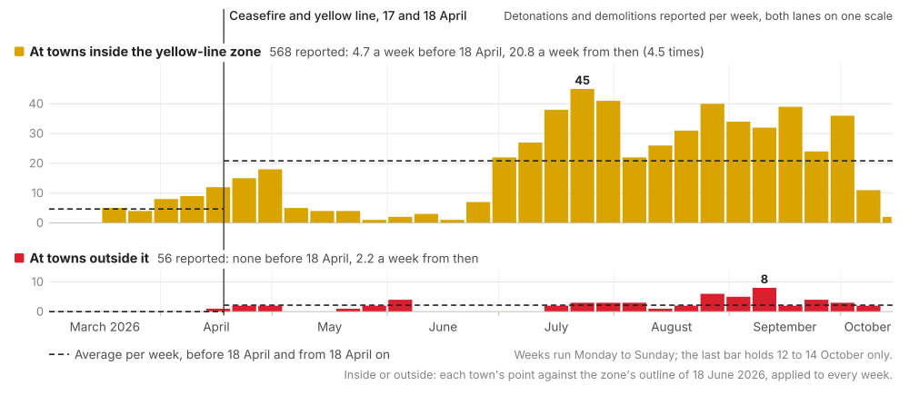
The sustained rise came as the displacement orders ended. From 15 June 2026, the Monday after the last week with ten or more order records, the corpus holds 30.0 detonation reports a week, against 8.5 from 18 April to the day before and 4.7 before 18 April.
The pause of May and June is in what reached the corpus. The messages collected for review fell with the reports: 31 in May and June together, against 159 in July alone. The reports cannot say whether fewer buildings were demolished in those weeks or fewer demolitions were reported. In the towns measured on sharp imagery, at least, destruction did not pause: 145 buildings of Aynata's own land were first seen destroyed in May, and 107 of At-Tiri's in June (Section 8.8).
The window closes lower, at 2.6 reports a day in October against 5.3 in September, but its last weeks are also the least complete: the dated web search for each report's sources ran for 46% of September's village-days and 65% of October's, against 100% of July's, and 66 collected messages of the window still await a decision. Part of that fall may be the collection's.
8.3 Where: the towns of the yellow-line zone
The reports name 52 towns in 5 districts, 510 reports in the Nabatieh governorate and 114 in the South. The Marjayoun district holds 220 reports at 18 towns, Bint Jbeil 195 at 17, Tyre 114 at 8, Nabatieh 92 at 7 and Hasbaya 3 at 2. A few towns carry many reports: Al-Mansouri (48), Haddatha (45) and Majdal Zoun (39) lead, the ten towns with most reports hold 55% of them, and 20 towns have ten or more, while the median town has 6.
Most of these towns, and almost all the reports, lie in the zone the Israeli army holds behind the yellow line (Section 1.2). The army announced the line on 18 April6; the corpus holds its outline of 18 June 2026. Of the 52 towns, 42 lie inside that outline, and they hold 568 reports, or 91%. From 18 April the zone's towns had 31.6 reports a week for every hundred towns, the rest of the two governorates 0.8 (Figure 26). The 56 reports outside the zone fall at 10 towns, most of them at Al-Qantara (22) and Barashit (14), and all 56 date from 18 April or later.
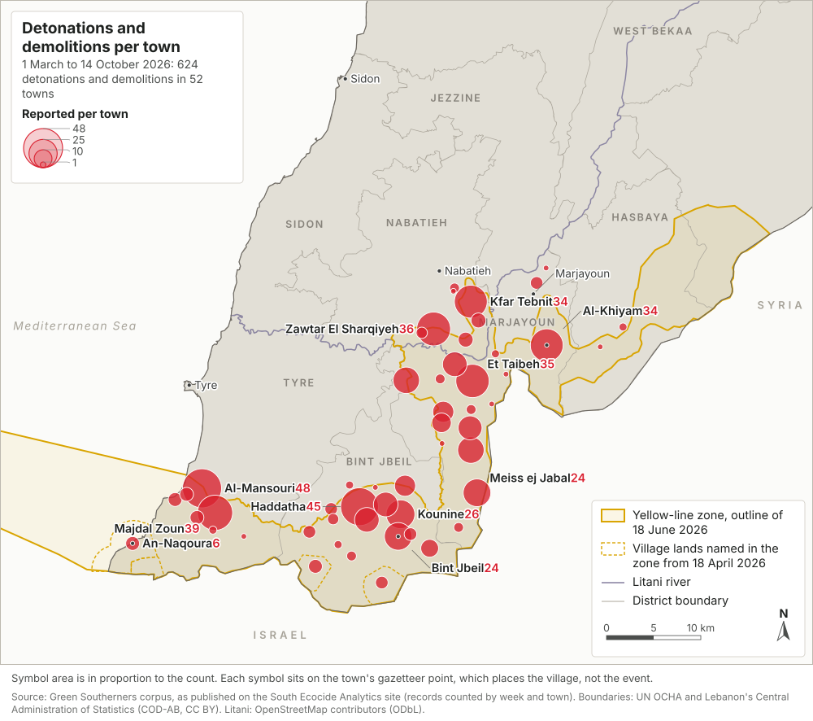
The reports also spread from town to town. 14 towns had their first report of the window in April and 10 in July; of the 42 towns inside the zone, 28 have no report before 18 April. The platform South Ecocide Analytics publishes the same counts by town and week: a reader can show the detonations alone or beside the other kinds, filter them by district and town, and play them week by week (Figure 27).
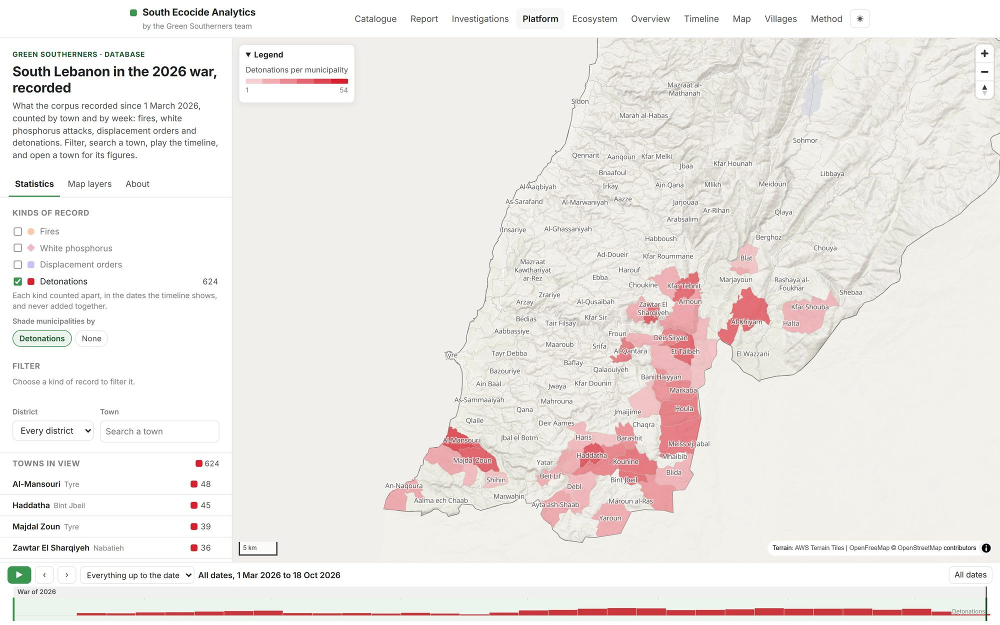
8.4 After the ceasefire
The cessation of hostilities took effect at 00:00 Beirut time on 17 April4, and on 23 April, in Washington, the US President announced that it would be extended by three weeks5. Before 18 April the corpus holds 32 detonation reports at 14 towns, 4.7 a week. From 18 April to 14 October it holds 592 at 52 towns, 23.0 a week, or 4.9 times the earlier rate. Inside the zone the weekly rate rose 4.5 times, from 4.7 to 20.8.
The zone does not sharpen this rise; it locates it. Every report before 18 April was already of a town inside the zone, so the rate inside rose a little less than the rate over all the reports, and outside it rose from nothing. What the zone shows is where the demolitions were: in the towns of the ground the army holds, both before the line was announced and after.
Town by town, the detonations came last. At each of the 52 towns with a report, an order had earlier named the town or a region that holds it; but the war's calendar alone makes that near certain, because the orders came first. White phosphorus is the better test. At every one of the 30 towns with both in the window, the first white phosphorus attack came before the first detonation report, a median of 39 days earlier, where the calendar alone would give 84%. At some of them, detonations had already been reported in January or February 2026, before the window.
8.5 What the reports rest on
The reports rest on 2,395 citations, a median of 2 per report; 614 reports carry at least one. Most are the media's: 1,392 citations (58%) come from the Lebanese media, among them the National News Agency and An-Nahar, and 658 (27%) from international media such as Al Jazeera, against 189 from social media accounts and 6 from official sources; 150 have no publisher type recorded. 1,862 citations (78%) are preserved, by an archive snapshot or our own capture, with a content hash, 943 of them in the Internet Archive, and 595 reports (95%) hold at least one such source. A report stands only on a source of its own day that names its village and a detonation: 15 reports of the window were built and later removed because none could be found.
350 reports (56%) carry a preserved photo or video showing a detonation or the column of smoke or dust it left: 1,187 files, 436 videos and 751 images, each hashed. In September 2026 every file on these records was looked at and kept only if it shows the blast or its column; headline cards, maps and reporters speaking to camera were taken off. A file that stays shows a detonation; it has not been shown to be the building the report concerns. For 544 reports (87%) the corpus holds a clear Sentinel-2 picture of the village from each side of the day, for a reader to look at; at 10 m a pixel, it places nothing by itself.
8.6 What the reports do not state
The reports do not count houses. Of the 624 reports, 0 state a number of houses destroyed, 0 a number damaged and 0 a number of people who lost a home. Whether an operation covered a whole town is recorded on none of them (624 not recorded), and whether a cultural site was affected has been assessed on none (624 unassessed). 48 reports (8%) carry a number of detonations, 138 in all; but 76 of those (55%), on 33 reports, come from Green Southerners' own earlier reporting rather than from a source the record holds, and 62, on 15, from the sources. That sum is not a count of detonations, and those reports are not a sample of the rest.
8.7 Buildings measured on sharp imagery in a sample of towns
To see what the reports cannot, we read the buildings of 11 towns one by one on sharp pictures from before and after: aerial pictures of 2026 at 0.3 m from OnGeo Intelligence, and Esri World Imagery for the last pictures before the war. Every mapped building of the town and of the ground within 1.5 km of its built-up area that a clear sharp pair covers was read, and a building counts as destroyed or damaged only when a majority of independent readings of its pictures agree. Where no sharp pair exists, as across the whole of Zawtar El Sharqiyeh's own land, a building counts as changed when the ground at it brightened and stayed bright on Sentinel-2, whose 10 m pixel is about the size of a house. Each change is dated by the first clear Sentinel-2 pass that showed it. The towns are those our damage measurements had reached by this edition, chosen for study and not drawn at random, so they stand for neither the zone nor the south: most lie in the Bint Jbeil district, with Al-Mansouri in Tyre's and Yohmor and Zawtar El Sharqiyeh in Nabatieh's, and every town's point lies inside the yellow-line zone. 42 of the 52 towns with detonation reports have no measurement, among them Haddatha, Majdal Zoun, Et Taibeh, Al-Khiyam and Kfar Tebnit.
In each town's own land (its territory, not the ring round it, which overlaps the neighbours'), the pictures show 981 buildings first seen destroyed in the window in Bint Jbeil, 702 in Aitaroun, 393 in Aynata, 334 in At-Tiri and 280 in Al-Mansouri (Table 11, Figure 28). Measured against all the mapped buildings of each counting area, 11% to 30% were first seen hit in the window, and a fifth or more in 7 of the 11 towns. Counting instead every building seen destroyed, damaged or changed on the newest pictures, whatever its date, 14% to 73% of the mapped buildings of each counting area were hit, and half or more in 7 of the towns. That is the state in which the pictures leave these towns, not the destruction of the window alone; only the counts of the window are called the destruction of the 2026 war.
| Town | District | Destroyed | Damaged | Changed on Sentinel-2 | Undated | Share hit since 1 March |
|---|---|---|---|---|---|---|
| Aitaroun | Bint Jbeil | 702 | 34 | 245 | 1,555 | 20% |
| At-Tiri | Bint Jbeil | 334 | 26 | 11 | 121 | 25% |
| Aynata | Bint Jbeil | 393 | 88 | 36 | 636 | 27% |
| Beit Yahoun | Bint Jbeil | 60 | 8 | 187 | 152 | 22% |
| Bint Jbeil | Bint Jbeil | 981 | 138 | 281 | 828 | 30% |
| Kounine | Bint Jbeil | 178 | 43 | 40 | 176 | 22% |
| Maroun al-Ras | Bint Jbeil | 48 | 9 | 200 | 114 | 25% |
| Yaroun | Bint Jbeil | 50 | 16 | 89 | 204 | 12% |
| Al-Mansouri | Tyre | 280 | 37 | 8 | 533 | 20% |
| Yohmor | Nabatieh | 134 | 12 | 22 | 207 | 18% |
| Zawtar El Sharqiyeh | Nabatieh | 0 | 0 | 177 | 33 | 11% |
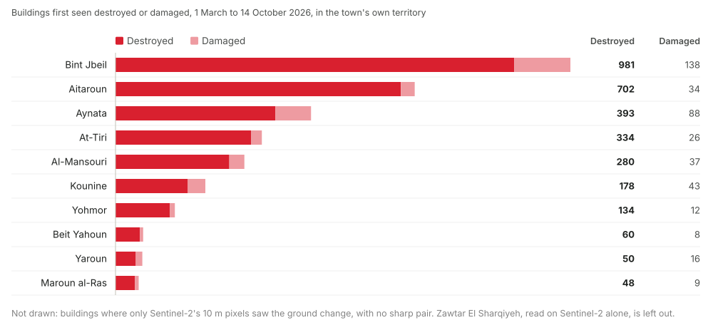
8.8 The imagery and the reports disagree on when
The pictures and the reports do not tell the same story in time. 76% of all detonation reports date from July to September. In the sample, the greater part of a town's damage of the window was first seen in those three months only in Al-Mansouri, Kounine and Zawtar El Sharqiyeh, which are also the three sampled towns with most reports (Al-Mansouri 48, Zawtar El Sharqiyeh 36, Kounine 26). There the two agree: in Al-Mansouri 60% of the buildings hit in the window were first seen from July to September, and 43 of its 48 reports fall in those months (Table 12).
In the Bint Jbeil district the pictures show an earlier wave that the reports barely hold. The clear passes over the district either side of the ceasefire were on 16 April 2026 and 29 April 2026. In Aitaroun's own land, 53% of the buildings hit in the window were first seen on the earlier pass or before it, so before the ceasefire took effect, and 70% by the end of April; of the town's 10 reports, 0 date from before May. In Bint Jbeil 23% were first seen before the ceasefire and a further 33% on the later pass, whose interval spans the ceasefire itself, so the pictures cannot say on which side of it those buildings fell; 56% had been seen by the end of April, against 9 of the town's 24 reports. Elsewhere the reports miss the scale more than the timing: Maroun al-Ras has 257 buildings hit in its own land in the window and not one detonation report, and Aynata 517 buildings and 5 reports.
| Town | Buildings hit | First seen by the ceasefire | On the first pass after it | On later passes | First seen July to September | Reports | Reports by the end of April | Reports July to September |
|---|---|---|---|---|---|---|---|---|
| Aitaroun | 981 | 53% | 18% | 30% | 12% | 10 | 0 | 6 |
| At-Tiri | 371 | 20% | 13% | 67% | 26% | 19 | 1 | 14 |
| Aynata | 517 | 22% | 7% | 70% | 22% | 5 | 2 | 3 |
| Beit Yahoun | 255 | 2% | 1% | 96% | 41% | 19 | 0 | 18 |
| Bint Jbeil | 1,400 | 23% | 33% | 44% | 29% | 24 | 9 | 12 |
| Kounine | 261 | 10% | 4% | 87% | 65% | 26 | 0 | 25 |
| Maroun al-Ras | 257 | 7% | 10% | 83% | 13% | 0 | 0 | 0 |
| Yaroun | 155 | 28% | 39% | 33% | 5% | 5 | 3 | 1 |
| Al-Mansouri | 325 | 11% | 2% | 88% | 60% | 48 | 0 | 43 |
| Yohmor | 168 | 17% | 7% | 77% | 44% | 7 | 0 | 7 |
| Zawtar El Sharqiyeh | 177 | 0% | 11% | 89% | 71% | 36 | 0 | 33 |
Across the sample, buildings went on being hit through the ceasefire. In 10 of the 11 towns, more than half of the buildings hit in the window in the town's own land were first seen after the ceasefire took effect, and in 8 more than half were first seen only on passes after 29 April 2026, when the ceasefire was already in force: in Beit Yahoun 96%, in Kounine 87%, in Al-Mansouri 88% and in At-Tiri 67%. Counting the destroyed buildings alone, 89% of Al-Mansouri's and 73% of Bint Jbeil's were first seen after it. Aitaroun is the exception: most of its buildings hit in the window were first seen by the ceasefire.
Al-Mansouri's sharp pictures follow the same course house by house. Readers looked at every building of the town and the ground round it on each of its four sharp pictures of 2026 and named the first on which it was hit, a reading separate from the Sentinel-2 dating: 168 buildings between 23 May 2026 and 10 August 2026, 45 between 10 August 2026 and 19 August 2026, and 533 between 19 August 2026 and 8 October 2026, four months and more after the ceasefire took effect.
So the two series measure different things. The reports record the detonations and demolitions that the media named by village and day; the pictures record what became of the buildings, without saying how. Where a town drew steady reporting, as Al-Mansouri did from July, the two move together. Where it did not, the reports miss most of what the pictures show: in the Bint Jbeil district a first wave of destruction during the hostilities of March and April and in the days round the ceasefire, and across the sample, destruction that went on through May and June while the reports paused. The detonation series is therefore not a measure of the destruction of the villages' buildings, and its timing is not the timing of that destruction. It shows the method the sources name, demolition by explosives in villages the army held, and where it was named. The imagery, in the towns it covers, shows the scale, and that in most of them the greater part was first seen after the ceasefire took effect.
8.9 Placing a detonation inside its village
To place a detonation more closely than its village, we searched Sentinel-2 imagery, on 15 October 2026, for each reported village-day: ground over buildings mapped before the war that turned bright like rubble between the last clear pass before the report and the first after it, and stayed bright. Both passes must fall between the report and the village's neighbouring incidents (another detonation or an attack), so that a change cannot belong to another day, and a part is drawn only when thirteen tests all hold, among them size and shape, contrast with the ground round it, no haze, a step that holds for at least fourteen days, and no incident in a neighbouring village within 300 m. A nil result is recorded as a result.
All 618 village-days of the window were searched. On 402 (65%), another incident in the same village came too close before or after to leave a clean pair of passes: the incidents follow each other too closely in these villages for the method to tell them apart. On 1 of them the village has no territory drawn to search in. The remaining 215 village-days left room for a pair. On 90 of them cloud left no usable pass on one side, and 11 wait for a later clear pass. On 81 the search found nothing that cleared every test, which is not a negative, since one house is below what a 10 m pixel can be sure of. 33 village-days hold at least one certain part: 92 parts covering 76 ha in 21 towns, over 742 buildings mapped before the war. None has yet been accepted by a person (92 await review), so none is published, and no report is placed more precisely than its village. The method is strict on purpose: it draws a change only where the satellite leaves no doubt, so the sharp-imagery readings of Section 8.7 remain the measure of scale.
8.10 The village fabric and its shared places
The towns with detonation reports are the border villages of the south, rural and spread out. Their approximate territories (cells drawn round the Central Administration of Statistics' locality points, not cadastral or municipal boundaries) cover 20% of the land of the South and Nabatieh governorates and hold 19% of the places of worship mapped there, 21% of the cemeteries and 17% of the public schools: about their share of the land, no more. In number, 99 places of worship, 14 cemeteries, 52 public schools and 10 health sites lie in those territories, 87 of the places of worship without a name on the map. These are floors: in the two governorates OpenStreetMap maps 90 schools against 306 on the official list of public schools alone. The case for urbicide here rests on what was done to the fabric of these villages, not on a concentration of such places in them.
The corpus holds no assessment of damage to any of these places. Whether a cultural site was affected is unassessed on all 624 reports, and no report is linked to a cultural site (0 links); the building layers of Section 8.7 carry no use, so they cannot say which of the buildings hit was a house, a shop, a school or a mosque. That is a gap in the corpus, not a finding that none was damaged. Others name what went with the houses. The UN High Commissioner for Human Rights said in July that he had heard how entire villages south of the Litani "have been razed or rendered uninhabitable", as strikes and demolitions had flattened homes, schools, healthcare facilities, water networks, places of worship and farmland8. In Bint Jbeil, Al Jazeera geolocated videos posted between 16 and 24 April by Israeli soldiers and others, and found the demolitions concentrated in the commercial centre, the Great Mosque in ruins, schools and a hospital hit, and demolitions going on after the ceasefire67. AFP reported in May that destruction, demolitions and bulldozing had intensified after the ceasefire and reached homes, infrastructure, schools, places of worship and farmland65.
8.11 What the evidence shows against the elements of urbicide
Taken element by element (Section 8.1), the evidence of this chapter speaks to most of what the scholarship of urbicide names, each element with its own strength.
Destruction as such. The record is of buildings destroyed on purpose, not of damage in combat as the sources report it: on 623 of the 624 reports a source of the day calls the destruction a detonation or a demolition, and 350 carry a preserved photo or video of a detonation or its column (Section 8.5). Demolition by explosives in villages the army held is the method the sources name. The data cannot show whether any building had a military use, or who ordered its destruction.
The shared fabric. This is where our own measures are weakest. The towns with reports hold the places of worship, schools, cemeteries and health sites counted in Section 8.10, but the corpus assesses damage to none of them, the building layers carry no use, and these towns are no denser in such places than the rest of the south, so no targeting of them can be argued from where they lie. The destruction of the shared places rests on outside reports: the High Commissioner's account of homes, schools, healthcare facilities, water networks and places of worship flattened south of the Litani, and Al Jazeera's of Bint Jbeil's commercial centre, Great Mosque, schools and hospital8,67.
Scale, town by town. In the towns measured on sharp imagery, hundreds of buildings were first seen destroyed within the window in a single town's own land: 981 in Bint Jbeil, 702 in Aitaroun and 393 in Aynata. A fifth or more of the mapped buildings of the town and the ground round it were first seen hit in the window in 7 of the 11 towns (Table 11). Scale is a matter of fact in each place, and these towns are a sample chosen for study: they say nothing by themselves of the 42 towns with reports and no measurement. As AFP reported it, Lebanon's National Council for Scientific Research counted 61,000 housing units destroyed since the start of the 2026 war, about 12,000 of them since the truce65, an estimate stated by that source and never added to ours.
A systematic character. The destruction was repeated across places and time. Reports came from 52 towns and in 31 of the 34 weeks of the window, and the 14 weeks from 29 June 2026 each held 22 or more, 80% of all the reports (Section 8.2). They reached 64% of the towns of the yellow-line zone against 4% of those outside it in the two governorates (Section 9.3), new towns were reached in every month, and at every one of the 30 towns with both, white phosphorus came first (Section 9.5). Officials' own words, as others reported them, point the same way. Human Rights Watch reported that on 22 March the Israeli Defence Minister said he and the Prime Minister had ordered the demolition of houses in the border villages to be accelerated18. The UN Committee on the Elimination of Racial Discrimination cited a statement by the same minister that characterised the Shia inhabitants of 24 villages in southern Lebanon as enemies, in justifying the complete destruction of their homes19. The pattern is measured; the policy behind it is inferred, and the reports' rhythm is partly the collection's.
Beyond military necessity: after the cessation of hostilities, in ground the army held. The evidence reaches furthest here. 95% of the reports date from 18 April, after the cessation of hostilities had taken effect, and 91% are of towns inside the zone the army holds, where the weekly rate rose from 4.7 to 20.8 (Section 8.4). The satellites say the same without depending on what the media covered: in 10 of the 11 measured towns most of the buildings hit in the window were first seen after the ceasefire took effect, and in 8 only on passes after the first one that followed it (Section 8.8). Others measured the same: Lighthouse Reports and the Financial Times found on Sentinel-2 that 65 per cent of the indicators of destruction from March to July 2026 came after 16 April68. The fighting did not stop altogether, since white phosphorus attacks and fires linked to an attack go on after 18 April, each counted in its own kind (Section 9.6). So the data do not show that any single demolition was unnecessary; they show that most of the destruction came when the hostilities had ceased, in ground the army already held.
Preventing return. The destruction fell on towns whose people had already been ordered out: 42 of the 52 towns with reports had been named in an order before their first report, and every one had been named itself or lay in a region the orders told to empty, a sequence the war's calendar makes near certain (Section 4.5, Section 9.5). What it leaves is measured in the state of the towns on the newest pictures, half or more of the mapped buildings hit in 7 of the 11 towns (Section 8.7). Outside sources describe the return it prevents. UNHCR, the UN refugee agency, reported in July that almost 500,000 people remained internally displaced, unable to return home because of inaccessibility, destruction or continued insecurity14; OCHA noted in April that civilian return beyond the yellow line remained restricted50; and the Secretary-General reported the villages near the Blue Line largely inaccessible49. The corpus holds no count of people, so who returned, who could not and why are known only from such outside counts, which are never added to ours.
Urbicide is the concept; the law it engages is set out in Section 10.3, with the rules on destroying property in Section 10.5. The tribunal for the former Yugoslavia held the wanton destruction of towns and villages to be made out by destruction on a large scale, not justified by military necessity, carried out with intent or in reckless disregard of the likelihood of destruction20. Customary law forbids destroying an adversary's property unless imperative military necessity requires it21; if the zone is occupied territory, an occupying power may destroy private property there only where military operations make it absolutely necessary22. Demolition village after village, in ground the army already held and under a cessation of hostilities, is hard to reconcile with these tests. That is our inference from timing, place and scale, stated as such: it is not a finding about any one building, and it is an assessment, not a judicial finding.
Chapter 9 The pattern: displacement and white phosphorus, then fire and demolition
Set side by side, week by week and town by town, the four kinds of record trace one course. In the first weeks of March the Israeli army ordered the south to empty and struck its border villages and its front with white phosphorus. After the ceasefire took effect and the yellow line was announced, white phosphorus attacks grew rarer, and detonations and fires rose inside the zone the army holds, while the orders moved north. This chapter measures that sequence and sets each step against what the war's own calendar and the fire season would produce without it.
9.1 Four kinds on one time axis
Figure 29 sets the four kinds side by side, week by week, each on its own scale and never added together. Two of them begin at once. The first displacement orders and the first white phosphorus attacks fall in the week of 2 March 2026, when the escalation began; from 4 March Israeli forces told all residents of the south to move north of the Litani, then north of the Zahrani1. That first week was the orders' busiest, with 161 records. White phosphorus peaked later in March, in the week of 23 March 2026, with 25 attacks reported. Fires and detonations start later and stay low through the spring: the first fire of the published scope falls in the week of 9 March 2026 and the first detonation report in the week of 16 March 2026; the fires peak in the week of 10 August 2026 and the detonation reports in that of 20 July 2026.
The middle of each kind's record makes the order plain. Half of the white phosphorus attacks fell within 58 days of 1 March and half of the order records within 63; half of the published fires took 152 days and half of the detonation reports 160. The early pair ran in parallel, not one after the other: by the mean the orders come first (53.6 days against 69.9), because white phosphorus kept a thin tail into the autumn while the orders stopped in June. The late pair came months after both.
![Four stacked lanes of weekly bars sharing one time axis from March to October 2026, each on its own scale: displacement orders, highest in the first week of March and again from late April to early June, then almost none; white phosphorus attacks, highest in late March and thinning after April; fires, low in spring and high from late June to September, most of them linked to an attack; detonations and demolitions, a small rise in April, a dip in May and June, then high from July to early October. A vertical rule marks the ceasefire and the yellow line of 17 and 18 April.](figures/charts/weekly-lanes.svg)
9.2 Three phases
Two dates divide the window. The ceasefire took effect at 00:00 Beirut time on 17 April4, and on 18 April the Israeli army said it had established a "yellow line" in southern Lebanon, with its forces operating south of it6. On 23 April, in Washington, the US President announced that the ceasefire would be extended by three weeks5. The second break is in the record itself: the orders stop. The last week with ten or more order records is the week of 8 June 2026; from 15 June 2026 to the end of the window the corpus holds 3 order records. So the chapter reads three phases: before the line (1 March to 17 April, 48 days); after it, while the orders went on (18 April to 14 June, 58 days); and after the orders stopped (15 June to 14 October, 122 days), set out kind by kind in Table 13.
| Kind | 1 March to 17 April | 18 April to 14 June | 15 June to 14 October | |||
|---|---|---|---|---|---|---|
| Records | A week | Records | A week | Records | A week | |
| Displacement order records | 288 | 42.0 | 410 | 49.5 | 3 | 0.2 |
| White phosphorus attacks reported | 60 | 8.8 | 44 | 5.3 | 24 | 1.4 |
| Fires recorded, published scope | 28 | 4.1 | 76 | 9.2 | 347 | 19.9 |
| of which linked to an attack | 28 | 4.1 | 47 | 5.7 | 269 | 15.4 |
| Detonations and demolitions reported | 32 | 4.7 | 70 | 8.5 | 522 | 30.0 |
Each phase belongs to a different kind (Table 13, Figure 30). The first is white phosphorus's: it holds 47% of the attacks, at 8.8 a week. The second is the orders': 58% of their records, at 49.5 a week, more than before the line (42.0). The ceasefire did not slow the orders; they stopped in mid June. The third is the destruction's: 84% of the detonation reports, at 30.0 a week against 4.7 in the first phase, and 77% of the fires, at 19.9 a week. White phosphorus attacks were recorded in all three phases, at a lower weekly rate in each. The phases are of unequal length, so the weekly rates of the table, not the shares, are the fair comparison between them. The late kinds also reached new ground late: 45 of the 109 towns with a fire and 22 of the 52 with a detonation report had their first in the last phase, when white phosphorus reached 3 new towns.
The split is ours, so we checked it against each kind's own calendar, fitting two breaks to each lane's 32 full weeks by least squares. The fits find the same turns. The orders rise in the week of 27 April 2026 and stop in the week of 15 June 2026; white phosphorus steps down in the weeks of 30 March 2026 and 8 June 2026; fires and detonations both rise in the week of 29 June 2026, two weeks after the orders stop, and ease in the weeks of 31 August 2026 and 21 September 2026 respectively.
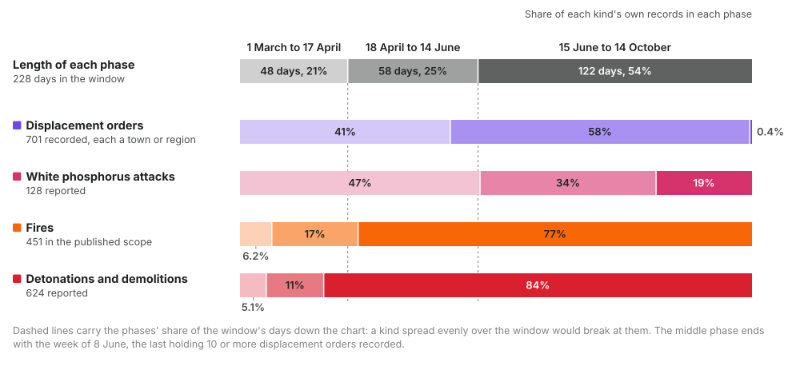
9.3 Inside and outside the yellow-line zone
The yellow-line zone is the ground along the border with occupied Palestine that the Israeli army holds behind the line it announced on 18 April (Section 1.2). We test the zone on one outline, that of 18 June 2026 (881.2 km2 as drawn, part of it at sea and part outside the two governorates; 605.0 km2 inside them), joined with the village lands named from 18 April, which lie almost wholly inside it (881.6 km2 in all), and place a record inside it when its town's point lies inside. 66 towns of the gazetteer lie inside the zone and 270 outside it in the South and Nabatieh governorates, which gives each kind a comparison on the same days.
Detonations: concentrated in the zone
Reported demolition is a phenomenon of the zone. 568 of the 624 detonation and demolition reports (91%) are of towns inside it. They reached 42 of its 66 towns (64%), against 10 of the 270 towns outside it in the two governorates (4%). Inside the zone the weekly rate rose from 4.7 before 18 April to 20.8 after it, 4.5 times, and from 7.0 to 27.4 a week between the second and third phases. After 18 April the zone's towns saw 31.6 reports a week per 100 towns, against 0.8 in the rest of the two governorates: about 39 times as many.
The zone marks where the demolitions were reported more than when they rose. All 32 reports before 18 April were already of towns inside it, and outside it there were none to rise from; inside, the rise (4.5 times) is no larger than over all reports (4.9 times). What sets the zone apart is concentration, not the size of the rise.
Fires: a rise far larger inside
Fires rose more inside the zone than outside it. Counted under one rule on both sides of the line, fires linked to an attack went from 1.6 a week to 8.4 inside the zone (5.3 times), and from 2.5 to 3.8 outside it in the same governorates (1.5 times): a rise 3.5 times larger inside. Every fire record, whatever its cause, shows the same: 7.5 times inside against 3.0 outside, each placed by its town's point. Chapter 6 places each fire by its own burn scar or point and counts "outside" over the whole collection area, and so gives 8.6 and 2.5 times for the same fires (Section B.2). Before the line 39% of the fires linked to an attack were at towns inside the zone; after it, 69%. The satellites agree, and they give each side its own yardstick. After 18 April, satellite fire events inside the zone stood at 5.5 times the 2019 to 2023 mean for the same calendar days, against 2.6 times outside it. Measured against its own pre-war years, which keeps each side's ground and season the same, the zone departed from the normal 2.1 times as far as the land outside it. (Every year from 2024 was seen by more satellites than the pre-war years, which lifts both sides alike.) The same split in the two years before this war shows how much of that contrast is the border strip itself. From 18 April to 14 October 2024, a war year until the ceasefire of 27 November 2024, satellite fire events on the ground that became the zone stood at 6.7 times their pre-war level, against 2.6 times outside it, a departure 2.6 times as far; in 2025, the year after that ceasefire, they stood at 1.8 and 1.3 times. The border strip burns most in a war year, so the level contrast alone does not tell the holding of ground from the front. What sets 2026 apart is when it burned: at 5.5 times its pre-war level after a cessation of hostilities, in ground the army held, where in the year after the ceasefire of 2024 it stood at 1.8 times. The platform's published scope is not used here: it takes every fire inside the zone but only attack-linked fires outside it, so it would favour the zone by construction.
White phosphorus: the other way
White phosphorus did the opposite. After 18 April its weekly rate fell on both sides of the line, to 0.2 times its earlier rate inside the zone and 0.5 times outside it. It was heaviest in the first weeks, on the ground that would become the zone: 77% of the attacks before 18 April were at towns inside it. It did not rise with the holding of that ground. Figure 31 sets the kinds side by side; the orders, which fell away from the zone more steeply still, are the subject of the next section.
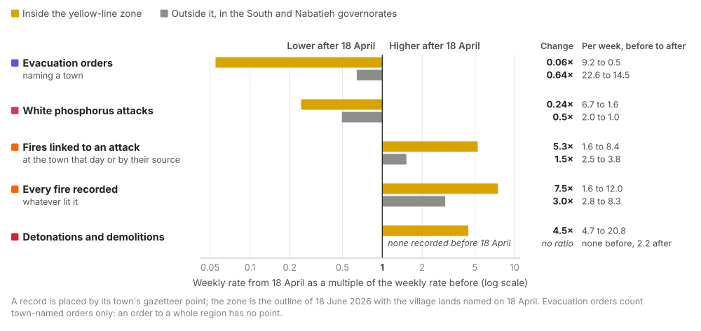
9.4 The orders moved north; the destruction stayed in the zone
While the destruction gathered in the zone, the orders went the other way. Before 18 April 24.7% of the order records naming a town named one inside the zone; from 18 April, 3.2%. Inside the zone their weekly rate fell from 9.2 to 0.5; outside it, in the two governorates, it rose from 22.6 before the line to 44.7 a week between 18 April and 14 June. Measured by river, in March 63% of the order records named towns south of the Litani; in June, 3% did, and 90% named towns north of it in the two governorates. Over the window the orders named 64% of the towns of the South and Nabatieh governorates.
So two movements ran at once from mid April (Figure 32). Beyond the line, the orders carried the displacement north, from the Litani to the Zahrani and past it. Inside it, where the towns had been named in the first weeks or lay under the orders to leave everything south of the Litani, the record turns from orders to demolitions and fires. Read together, the zone's towns were ordered out first and their houses destroyed after, while the towns beyond the line were ordered out in their turn.

9.5 Town by town: what holds beyond the calendar
For each of the 278 towns with a record of any kind, we took the first Beirut day of each kind and asked which came first. A sequence can appear across towns only because each kind had its own season over the whole south: if every town's fires came in summer and its orders in spring, "order before fire" would hold everywhere and say nothing about any town. So each comparison is set beside a yardstick.
The clearest ordering is white phosphorus before detonation. At every one of the 30 towns with both, the first white phosphorus attack came before the first detonation report, where the calendar alone gives 84%, an excess of 16.1 percentage points, as far above the calendar as a share can go. Shuffled across the same towns, first days would put all 30 in that order about once in 22,000 shuffles (one-sided p = 0.000046), within the window of 1 March to 14 October 2026. The median gap was 39 days. Every one of the 470 detonation reports in the window at those towns came after the town's first white phosphorus attack. Within the window, wherever both were recorded, the white phosphorus came first and the reported demolitions after, without exception. The window does not hold all of 2026: at some of these towns, detonations had already been reported in January or February 2026, before any white phosphorus attack the corpus holds for 2026, so there the order holds only from 1 March.
The full sequence mostly holds. Of the 42 towns with an order, a white phosphorus attack and a fire or a detonation, 33 (78.6%) follow it strictly, an order, then white phosphorus, then a fire or detonation, and 34 if same-day ties are allowed; of the 30 towns with all four kinds, 24 do. Counting only orders that named the town itself, it holds at 24 of 30 towns. But the calendar explains most of it: shuffled across the same towns, first days give the sequence at 70% of the three-kind towns, and at 67% with town-named orders. The towns exceed the calendar by 8.3 and 13.1 percentage points (one-sided p = 0.06 and 0.02, the share of the same shuffles with as many towns or more in sequence): on so few towns the first excess could still be chance and the second is less likely to be, but most of the ordering is the war's own calendar.
Order before fire and order before detonation carry no town-level information at all: they hold at 99% and 100% of the towns, and the calendar gives 99% and 100% (Table 14). "Order first" is close to automatic once the orders to whole regions count. Orders to everyone south of the Litani began in the week of 2 March 2026, and to everyone south of the Zahrani in the week of 9 March 2026; 113 of the 118 towns with a white phosphorus attack, a published fire or a detonation lie inside the Zahrani area, and 46 of them were first reached by a region order. Counted that way, the records that came before their town's first order number 4 white phosphorus attacks, 1 fire and 0 detonation reports, and 3 fires were at towns no order reached. With town-named orders only, the order is looser: 18% of the white phosphorus attacks, 19% of the fires and 8% of the detonation reports were at towns no order named, or came before the first order naming them. We give both readings throughout.
| First kind, then second | Towns with both | First kind first | Same day | Second kind first | Share first kind first | Expected from the calendar |
|---|---|---|---|---|---|---|
| Order, then white phosphorus | 49 | 45 | 1 | 3 | 92% | 89% |
| Order, then fire | 106 | 105 | 0 | 1 | 99% | 99% |
| Order, then detonation | 52 | 52 | 0 | 0 | 100% | 100% |
| White phosphorus, then fire | 42 | 37 | 0 | 5 | 88% | 88% |
| White phosphorus, then detonation | 30 | 30 | 0 | 0 | 100% | 84% |
| Fire, then detonation | 50 | 31 | 1 | 18 | 62% | 51% |
Two findings cut against a simple chain, and the table shows both. White phosphorus did not follow the orders in bulk. Town by town an order usually came first (45 of 49 towns), but the calendar gives nearly as much, and the median gap from a town's first order to its first white phosphorus attack, 22 days, is what the calendar gives (21). The orders and the white phosphorus were two arms of the same opening weeks. And fires and detonations have no fixed order between them: the first fire came first at 31 of the 50 towns with both (62%) and the first detonation report at 18. The calendar alone gives the fire first at 51%, so fires led 11.1 percentage points more often than the calendar gives, but at many towns the detonation report still came first.
Nor do fires and detonations crowd in after a town's own order beyond what the calendar gives. 99.8% of the fires and every detonation report at ordered towns came after the town's first order, but the war's calendar alone predicts 99.9% and all of them: the destruction came late everywhere. After a town's first white phosphorus attack the excess is small and positive, 2.7 percentage points for fires and 2.8 for detonations. Figure 33 shows the gaps from a town's first order. Counting region orders, its first fire came a median of 97 days later and its first detonation report 85.5 days later, where the calendar gives 97 and 88; with town-named orders only, the medians are 89 and 72 days.
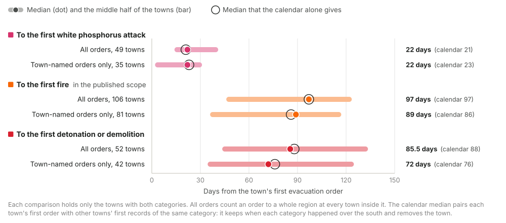
9.6 After the ceasefire
The ceasefire moved the kinds in opposite directions. Over the whole south, the weekly rate of white phosphorus attacks from 18 April fell to 0.3 times its earlier level; the orders went on to a late-spring peak and then stopped; detonation reports rose 4.9 times and the fires of the published scope 4.0 times. 95% of all detonation reports date from 18 April.
The rise in detonations was not immediate. Reports climbed to 20 in the week of 27 April 2026, then fell to between 1 and 7 a week from the week of 4 May 2026 to the week of 22 June 2026, and rose again from the week of 29 June 2026 (22 reports), to run inside the zone at 35.9 a week in July. The messages the corpus collected about detonations show the same dip (18 in May and 13 in June, against 159 in July), so the data cannot say whether fewer demolitions happened in those weeks or fewer were reported. The sustained rise began in the first week after Israel and Lebanon signed a framework agreement in Washington on 26 June34; the record shows the timing, not a cause.
Fires need a yardstick, because summer is the fire season. Counted the same way in every year, satellite fire events over the whole south rose 13.9 times between the two phases of 2026, against 5.4 times between the same calendar phases of 2019 to 2023 taken together. The first phase holds only 6 satellite fire events in 2026 and 21 in the five pre-war years, so these ratios cannot be read against the season. The published fires rose 4.0 times, but they include fires known from reports only, which the satellite yardstick does not count, and their scope is chosen by attack link and zone. From the second phase to the third, satellite fire events rose 2.0 times in 2026, against a pre-war 2.4, and the published fires 2.2 times: the summer rise matches the season. The departure from the season lies elsewhere: in the zone, as shown above, and in the level, which Chapter 7 measures against the same weeks of 2019 to 2023 (3.7 times the pre-war mean on the lead satellite count, with 2025, the year after the ceasefire of November 2024, at the pre-war level). Summer 2026 was itself a season of high fire danger, so the summer excess mixes weather and war; the contrast across the line and the year 2025 carry more of the argument than the summer ratio does.
The cessation of hostilities did not end the attacks. From 18 April the record holds 68 white phosphorus attacks and 316 fires linked to an attack, each counted in its own kind; Section 10.3 weighs the demolitions behind the held line against the war crime of wanton destruction and the law of occupation with that in view. UN experts warned in July that evacuation may be used only for civilians' safety or for imperative military reasons, "not to depopulate and occupy areas"17.
9.7 What the pattern establishes, and what it does not
Four findings hold against their yardsticks.
- The kinds have their own calendars. Orders and white phosphorus came first and together; fires and detonations came months later, and both broke upward two weeks after the orders stopped.
- The destruction rose where the army held the ground. 91% of the detonation reports are of towns inside the yellow-line zone, almost all from 18 April, and fires linked to an attack rose 3.5 times more inside the zone than outside it, a contrast the season does not explain.
- Within the window, white phosphorus came before detonation at every town with both. At all 30 towns, beyond the calendar's 84%, which would give that order at every town about once in 22,000 shuffles (one-sided p = 0.000046); at some of them detonations had already been reported in January or February 2026.
- The orders moved north as the destruction stayed in the zone. The share of town orders naming a town in the zone fell from 24.7% to 3.2% after 18 April.
Read together, they describe one course: a population ordered out, the border villages and the front struck with white phosphorus, and then, in the zone the army holds, houses destroyed and land burned, the burning at rates that neither the season nor the years before the war explain, while the displacement was pushed north. That course bears on each of the three concepts this report examines. On the land, the burning concentrated in held ground, beyond the season. On the built fabric of the towns and villages, the demolitions came in ground already held, for months after the cessation of hostilities (Section 8.11). On communities, the orders named 64% of the towns of the two governorates and told everyone south of the Zahrani, on 84% of their land, to leave. The territories of the ordered towns hold 71% of the two governorates' mapped places of worship on 58% of their land. That is breadth, not targeting, and the corpus holds no assessment of damage to those places; what it shows is that whole communities were ordered away from their homes, their fields and their places of memory. Outside counts show the displacement outlasting the ceasefire: on 29 September 2026, its last count before the end of our period, the International Organization for Migration still recorded 329,686 people internally displaced in Lebanon against 877,203 who had begun returning, and Bint Jbeil was the district of origin of more of those still displaced than any other3. The pattern is consistent with most of the south being ordered empty, and the villages of the yellow-line zone being made uninhabitable. It is a measured pattern, not proof of a plan.
Chapter 10 Qualification: ecocide, urbicide and ethnocide
This chapter sets the evidence of the findings chapters against three concepts, element by element, and against the rules of international humanitarian law that already bind the parties. It says which elements the evidence meets, which it supports only by inference and which it cannot yet reach, and closes with our assessment.
10.1 How we qualify the evidence
Ecocide, urbicide and ethnocide are not, today, crimes under any treaty that binds Israel or Lebanon. In international law each is a proposal, a description or a scholarly concept that gathers existing prohibitions (war crimes, crimes against humanity, the law of occupation, the protection of the environment and of cultural property) under one name. Ecocide is also an offence in the national criminal law of several states (Section 10.2). We therefore do two things and keep them apart. For each concept we take its elements from the texts that define it and set against each element the measure that speaks to it, or say that none does. Then we set out the rules of international humanitarian law the same conduct engages, saying for each whether it binds as a treaty or as customary law.
Two limits run through the chapter. The data shows conduct, its timing, its place and its scale; it does not show what any commander knew, intended or weighed. Where we speak of purpose, we infer it from timing, place, repetition and scale, and from officials' own statements as UN bodies and human rights organisations report them, and we say so where we do it. And the window is 228 days long, too short to observe damage that lasts. The conclusions say "consistent with", "meets the descriptive elements of" and "engages", never that the conduct "is" a crime.
10.2 Ecocide
"'Ecocide' means unlawful or wanton acts committed with knowledge that there is a substantial likelihood of severe and either widespread or long-term damage to the environment being caused by those acts."
Independent Expert Panel for the Legal Definition of Ecocide, 202110
Its status in law
The definition is an expert proposal, reached by twelve lawyers in June 2021, and is not law anywhere by itself10. In September 2024 Vanuatu, with Fiji and Samoa, proposed to add ecocide to the Rome Statute as a new crime, in an article 8 ter that reproduces the Panel's words69,70; the Assembly of States Parties' Working Group on Amendments records the proposal as circulated on 9 September 2024 and introduced at its meetings that year71. We found no record that the Assembly has adopted it, and an amendment would not reach this conduct in any case, since neither Israel nor Lebanon is a party to the Statute (Section 10.6). The word is already in national law: the ICRC records that "the legislation of several States criminalizes 'ecocide'", among them the Russian Federation, Ukraine and Viet Nam, under definitions of their own rather than the Panel's26. The European Union's Environmental Crime Directive of 2024 notes that its qualified offences "can encompass conduct comparable to 'ecocide', which is already covered by the law of certain Member States"72.
The nearest crime that exists is the war crime of intentionally launching an attack knowing that it will cause "widespread, long-term and severe damage to the natural environment which would be clearly excessive in relation to the concrete and direct overall military advantage anticipated" (article 8(2)(b)(iv))73. Its three conditions are cumulative; the Panel lowered the threshold on purpose to severe damage that is either widespread or long-term. The Prosecutor's policy of December 2025 on environmental damage applies the existing crimes and does not treat ecocide as a crime of its own, and one commentary judges prosecutions under article 8(2)(b)(iv) still highly unlikely74.
The elements against the evidence
The definition asks for damage to the environment that is severe, and either widespread or long-term, caused by acts that are unlawful or wanton and committed with knowledge of a substantial likelihood of such damage.
Severe. The Panel means damage "which involves very serious adverse changes, disruption or harm to any element of the environment, including grave impacts on human life or natural, cultural or economic resources"10. We recorded 565 fires in the window (Chapter 6). The Sentinel-2 burn scars measured on 242 of them cover 6,506 ha, ground two fires share counted once, and 79% of that ground lies inside the yellow-line zone. That is a floor: only 51% of the fires carry any measured area. The burned ground is rangeland (59.7%), the fabric of the villages with their gardens and orchards (23.3%) and cropland (16.9%); trees are 0.2% of it, against 9.2% of the land of the two governorates. The harm falls on the grazing, farming and village land communities live from, and not on forest: on the burned ground the platform publishes, about 1,031 ha of cropland and about 1,422 ha of village land with its gardens and orchards (Section 6.6). It burned in the same towns where homes were destroyed: 50 of the 52 towns with detonations and demolitions reported also hold a fire in the published scope (Table 14). That is where the gravity lies, in the Panel's words grave impacts on natural, cultural and economic resources; 185 ha of the scars lie inside Key Biodiversity Areas.
Beyond the season. Whether this burning is the war's or an ordinary fire season's is a matter of degree against the ordinary, and here the measures are like for like: the same weeks, the same ground and the same instruments in every year (Chapter 7). The VIIRS sensor on Suomi NPP saw 3.7 times the mean of 2019 to 2023, and 2.6 times the highest pre-war year. Counting only burns of 30 ha or more, which EFFIS maps the same way in every year, Copernicus EFFIS mapped 33.1 times the pre-war mean of burnt hectares up to 15 September 2026, and 20.2 times the largest pre-war year. At all sizes it mapped 34.9 times the mean of 2020 to 2023, a figure that drifts upward as EFFIS maps ever smaller burns. The other war year, 2024, was as high or higher (4.0 times the pre-war mean on the same sensor), while 2025, the year between the wars, sat at the pre-war level (0.9 times): the fires follow the war, not the calendar. In spring 85% of the fires burned on days whose fire danger was below the median of EFFIS's record for the place and season, and 45% on a day with rain; in July and August a satellite saw fire on 87% and 90% of the days, against 37% in the same months before the war (Section 7.7, Section 7.6).
Two findings temper this, and the case rests on what survives them. The summer of 2026 was itself one of unusually high fire danger (the median July fire burned on a day at the 96.8th percentile of EFFIS's record for the place and time of year), so the summer ratio mixes weather and war. And over the whole south the rise in fires cannot be told apart from the season. From 15 June 2026 into the summer, satellite fire events rose 2.0 times in 2026, against 2.4 times in the pre-war years. The rise from before 18 April (13.9 times in 2026, 5.4 times before the war) rests on 6 and 21 spring fire events, too few to read. The departure from the season lies in the zone the Israeli army holds behind the yellow line (Section 9.3). After 18 April, satellite fire events inside the zone stood at 5.5 times the pre-war mean of the same calendar days, and those outside it at 2.6 times. The extra satellites of 2026 overstate both levels, but by much the same factor, so their ratio, 2.1, is the measure. Fires linked to an attack rose 5.3 times there after 18 April, against 1.5 times outside it in the same governorates under much the same weather, on few fires before that day. The zone contrast, and 2025 at the pre-war level on the satellite count over the same weeks, are what separate the war from the season.
Widespread. The Panel means damage "which extends beyond a limited geographic area, crosses state boundaries, or is suffered by an entire ecosystem or species or a large number of human beings"10. The fires were recorded in 162 towns, in 7 of the 7 districts of the South and Nabatieh governorates, and inside the yellow-line zone the burn scars alone, a floor, cover 8.5% of its land: the damage extends beyond a limited geographic area. The people who live from that land had been ordered out: 74% of the towns with a fire had been named in an order before it, a figure counted apart (Section 4.5).
Long-term. The Panel means damage "which is irreversible or which cannot be redressed through natural recovery within a reasonable period of time"10. A window of 228 days cannot show it; it would take imagery of the same ground in the seasons to come, and soils, water and species measured in the field. On the Ministry of Energy and Water's undated map, about 418 ha of the burned ground lay in olive groves and 52 ha in fruit, citrus and banana orchards; whether those trees died, and so whether this damage is long-term, is what imagery of the coming seasons would show. Because the definition asks for widespread or long-term damage, this element is not needed for it to be met. It is needed for the higher threshold of article 8(2)(b)(iv) and of Additional Protocol I, which we do not claim.
Unlawful or wanton acts, with knowledge. These are legal and mental elements, and the data cannot measure them. It can show the link between acts and damage, and the circumstances from which knowledge may be inferred. A fire is linked to an attack where one is documented at its town on a Beirut day of the fire, or where its own source names one: that holds for 344 of the 565 fires, 19 of them filed with white phosphorus as their cause. The link is an association of town and day, not proof that the attack lit the fire; and 151 of the 267 fires a satellite saw have no attack found in our sources, which never means that none happened. Knowledge is inferred from circumstances, not measured. The burning rose after the cessation of hostilities in ground the army already held, and it went on for months: in August a satellite saw fire on 90% of the days. The fire-danger forecast issued the day before, one a person could have read in advance, rated the day very high or above for 85% of the fires (Section 7.7), so a fire from an explosion or a demolition on that ground was foreseeable. 162 of the 344 fires linked to an attack burned at a town where a detonation was documented that day (Section 6.3). And white phosphorus, a munition argued over under the law of incendiary weapons for its incendiary effect56, was fired over outskirts, hills and farmland. Only 8 of the 128 attacks have a fire record at their town on their day, and that is a floor, since a fire on green ground often goes unrecorded (Section 5.7). Whether the acts were unlawful is a question of the rules set out in Section 10.5. Where fires burned beside demolitions, the destruction of houses engages article 53 of the Fourth Geneva Convention if the zone is occupied, and customary rule 50 in any case22,21. The customary rules on the natural environment bind both parties25,63,26. And if the zone is occupied, its occupier must safeguard the capital of the Lebanese State's forests and agricultural estates there (Hague Regulations, article 55)75. The Panel's "wanton" is "with reckless disregard for damage which would be clearly excessive in relation to the social and economic benefits anticipated"10; what benefit was anticipated is not in the data.
10.3 Urbicide
The word and its history
The word is older than its present meaning. Its first recorded uses, in a fantasy story of 1963 and in architectural criticism of the 1960s, are traced by Aleksandar Staničić in his history of the term36. The critic Ada Louise Huxtable used it in 1968 for the urban renewal that was destroying the historic mill buildings of Manchester, New Hampshire37, and Marshall Berman wrote in 1984 of "City Life After Urbicide"38. In those uses it named the ruin of American cities in peacetime.
Its present meaning comes from the wars in the former Yugoslavia. In 1992 to 1994 architects in Mostar and in besieged Sarajevo documented the destruction of their cities' buildings in two publications, "Mostar '92: Urbicid" and "Warchitecture: Urbicide Sarajevo", which, in Staničić's words, "instigated new theories on urbicide as more-or-less calculated destruction of built environment in war-like acts of violence"36; during the siege, in 1993, the architects of Sarajevo had already given a special issue of their architecture magazine to the destruction, under the title "Warchitecture"76. Martin Coward gave the concept its theory: for him the destruction of the built environment "should be seen as a distinct form of violence: urbicide", aimed at the shared spaces that make plural communities possible and so "a manifestation of a 'politics of exclusion'"11. Stephen Graham applied it to the bulldozing of the centre of the Jenin refugee camp, in the occupied Palestinian territory, in April 2002: "the deliberate wrecking or killing of the city"40. The field took shape in a volume Graham edited in 2004, in which Coward wrote on urbicide in Bosnia and Graham on its making by bulldozer in the occupied territories77,78, and in books of 2007 and 2010 on the architecture of occupation and the new military urbanism79,80; studies since have applied it to Palestine and to Syria81,82. Sara Fregonese applied it to Beirut in 1975 and 1976, and argued that the concept should serve as a tool of analysis, not only as a category reserved for the wars after the Cold War41. None of these writers coined the word.
In South Lebanon the word is already in use. Public Works Studio, a Beirut research group, described the collective demolitions of 2026 in the border towns as part of a broader pattern of ecocide and urbicide64, and AFP reported that Lebanon's Environment Minister accused Israel in April 2026 of committing an urbicide in the south65. No UN body we have read uses the word for Lebanon: the High Commissioner, the UN's experts and CERD speak of villages razed, demolished or rendered uninhabitable, and we cite their words for the facts8,17,19. The frame is ours and the scholarship's.
The places in this report are villages and small towns, not cities. We use urbicide in the sense of the scholarship that defined it, the destruction of a built environment as the shared fabric of a community, which a village has as much as a city; and the war crime the concept engages names villages beside cities12,13. The scholarship itself debates how far the word reaches: Eyal Weizman wrote that a word for the destruction of refugee camps, "if such a word is to exist", should mean something other than urbicide83.
Its status in law
"wanton destruction of cities, towns or villages, or devastation not justified by military necessity"
Charter of the International Military Tribunal, 1945, article 6(b), and Statute of the International Criminal Tribunal for the former Yugoslavia, article 3(b)12,13
Urbicide is a concept of the scholarship on cities and war, not a crime: no treaty, statute or court judgment we have read uses the word, and none makes it an offence. It names conduct that existing law already prohibits, under four headings.
Wanton destruction of cities, towns or villages. The Charter of the International Military Tribunal, signed in London on 8 August 1945, listed it among war crimes (article 6(b))12, and the Statute of the International Criminal Tribunal for the former Yugoslavia (ICTY) repeats its words and adds the attack or bombardment, "by whatever means, of undefended towns, villages, dwellings, or buildings" (article 3(b) and (c))13. The ICTY set out the elements. In Kordić and Čerkez the crime is made out where "(i) the destruction of property occurs on a large scale; (ii) the destruction is not justified by military necessity; and (iii) the perpetrator acted with the intent to destroy the property in question or in reckless disregard of the likelihood of its destruction" (paragraph 346), and the destruction of property in enemy territory, outside the grave breaches of the Geneva Conventions, "is criminalised under Article 3" (paragraph 347)20. On that reading the crime does not depend on occupation: it applies whether or not the yellow-line zone is occupied territory. In Blaškić the devastation must have been "perpetrated intentionally or have been the foreseeable consequence of the acts of the accused" (paragraph 183)84. In Strugar, on the shelling of the Old Town of Dubrovnik, the Trial Chamber found the large scale from the number of buildings hit, their spread through the Old Town and the range of the damage, inferred intent from a deliberate attack on a place whose civilian character was known, and entered the conviction on the count of destruction of or damage to cultural property (article 3(d)) alone, which it found reflected the conduct fully (paragraphs 326, 329, 454 and 455)85. Scale is a matter of fact for each place, and we set no threshold. Neither the Charter nor the Statute binds Israel or Lebanon as a treaty: we cite them as the source of the formula and, with the ICRC's study of customary law, as evidence of a customary war crime86.
Extensive destruction of property. In occupied territory the Fourth Geneva Convention, which binds both States, forbids the destruction of private or public property "except where such destruction is rendered absolutely necessary by military operations" (article 53), and makes "extensive destruction and appropriation of property, not justified by military necessity and carried out unlawfully and wantonly" a grave breach (article 147)22. For the ICTY the destruction must be "extensive, unlawful and wanton", though "a single act, such as the destruction of a hospital, may suffice" (Blaškić, paragraph 157)84. The Rome Statute repeats these rules as war crimes (articles 8(2)(a)(iv), 8(2)(b)(xiii) and 8(2)(e)(xii))73. The Hague Regulations and customary rules 50 and 51 forbid destroying an adversary's property unless military necessity imperatively demands it, and protect private property in occupied territory75,21,87 (Section 10.5).
Cultural property and the places of a community. The Hague Convention of 1954, which binds both States, forbids any act of hostility directed against cultural property unless military necessity imperatively requires it (article 4)88. The ICTY Statute punishes the destruction of or wilful damage to "institutions dedicated to religion, charity and education, the arts and sciences, historic monuments" (article 3(d))13; the Rome Statute, the intentional attack on buildings dedicated to religion, education, art, science or charity, and on historic monuments, that are not military objectives (articles 8(2)(b)(ix) and 8(2)(e)(iv))73; and customary rules 38 and 40 protect such buildings as institutions, not only as heritage89,90.
Persecution, as a route only. Where destruction is directed at a group, it can be prosecuted as persecution, a crime against humanity: "the intentional and severe deprivation of fundamental rights contrary to international law by reason of the identity of the group or collectivity" (Rome Statute, articles 7(1)(h) and 7(2)(g))73. The ICTY held that persecution "may thus take the form of confiscation or destruction of private dwellings or businesses, symbolic buildings or means of subsistence" (Blaškić, paragraph 227)84, and that the discriminatory destruction of homes and livelihoods, where its effect is to remove civilians from their homes on discriminatory grounds, may constitute it (Kordić and Čerkez, paragraph 205)20. Persecution needs discriminatory intent and, like every crime against humanity, a widespread or systematic attack on a civilian population pursuant to a policy (articles 7(1) and 7(2)(a)). We state that this route exists and do not test it: the corpus records places, not people, and holds nothing on who lives in a town (Section 11.8).
The law and the concept ask different questions. The law asks of each act whether that destruction was justified by imperative military necessity when it was done. The concept asks of the pattern whether the built environment itself was the object. Our data speak to the pattern, its scale, timing and place, and not to the necessity of any single demolition. No international court can currently hear the 2026 conduct (Section 10.6).
The elements against the evidence
The scholarship and the law together give seven elements, our synthesis and not a definition in any one text: destruction as such, not incidental to combat; of the shared fabric of a place; on a large scale; systematic in character; beyond military necessity; preventing return; and the exclusion of a group. Table 15 sets each beside our evidence, its strength and what the data cannot show.
Destruction as such. A detonation or demolition is an act on a building, not damage done in passing by fighting. We recorded 624 detonations and demolitions reported, each of one village on one day, in 52 towns (Chapter 8). Of these reports, 623 rest on a source that itself calls the destruction a detonation or demolition, and 350 carry a preserved photo or video showing a detonation or its smoke column. In Bint Jbeil, Al Jazeera geolocated videos posted by Israeli soldiers and others between 16 and 24 April, which show demolitions concentrated in the town's commercial centre67. Whether destruction on this scale was deliberate as a policy is an inference, and a statement reported by others bears on it: Human Rights Watch reported that Israel's Defence Minister said on 22 March 2026 that he and the Prime Minister had ordered the demolition of Lebanese houses in the border villages to be accelerated18. It speaks to the third element the ICTY set, intent or reckless disregard, as an official stated it and not as we measured it.
The shared fabric. Urbicide is the destruction of the places of common life, not only of houses. In the approximate territories of the 52 towns with detonation reports lie 99 mapped places of worship, 52 public schools, 14 cemeteries, 10 health sites and 6 archaeological or historic places (Section 8.10). The corpus does not say which of them was hit: damage to a cultural site is assessed on none of the reports, and the building counts do not say what a building was used for. Nor are these towns denser in such places than the rest of the south: their territories hold 19% of its mapped places of worship on 20% of its land, so no targeting of these places can be argued from where they lie. What was hit is told by others. The High Commissioner said he had heard that strikes and demolitions had flattened homes, schools, healthcare facilities, water and electricity networks, places of worship and farmland8, and in Bint Jbeil Al Jazeera found the Great Mosque in ruins and schools and a hospital hit67. In our data this element is not shown; in the outside reports it is strong.
Scale. The ICTY asks whether the destruction occurred on a large scale, a matter of fact for each place. The reports are a floor, and none states a number of houses (Section 8.6). The scale shows in the buildings read on sharp imagery in 11 towns chosen for study, all inside the zone. Counting only each town's own territory and only buildings first seen destroyed from 1 March, Bint Jbeil lost 981 buildings, Aitaroun 702, Aynata 393, At-Tiri 334 and Al-Mansouri 280 (Section 8.7). On the newest pictures, whenever the damage was done, before 1 March included, between 14% and 73% of the mapped buildings in the area round each town are destroyed, damaged or changed, and half or more round 7 of the 11 towns; between 11% and 30% were first seen hit from 1 March. These counts are per town, never added across towns or to the reports, and 42 of the towns with reports have no measurement at all. Fire reached the same fabric: 23.3% of the burned ground is built area, the villages with their gardens and orchards (Section 10.2), which says that ground in the villages burned, not that houses did.
Systematic character. The reports fall in 31 of the 34 weeks of the window, and from the week of 29 June 2026 came a run of 14 weeks with 22 reports or more each, which holds 80% of all the reports (Section 8.2). The reports reached new towns month after month, 10 of them for the first time in July. They concentrate in one zone: 64% of the gazetteer towns inside the yellow-line zone have a report, against 4% of those outside it in the same governorates, and after 18 April the zone held 31.6 reports a week per hundred towns, against 0.8 outside it. And at all 30 towns with both in the window, the first white phosphorus attack came before the first detonation, where the calendar alone would give 84% and would put all of them in that order about once in 22,000 shuffles (one-sided p = 0.000046) (Section 9.5). Repetition across towns and weeks, concentration in one zone and a sequence beyond the calendar are the marks of a system. The policy behind it is not in the data. We infer it from the repetition, concentration and sequence above, and the order to accelerate the demolition of houses in the border villages, which Human Rights Watch reports the Defence Minister announced on 22 March, bears on it18. Where destruction is charged as a crime against humanity, as persecution or as forcible transfer, the Rome Statute's meaning of an attack applies: a course of conduct involving the multiple commission of the listed acts against a civilian population, "pursuant to or in furtherance of a State or organizational policy to commit such attack" (article 7(2)(a))73. That the conduct was directed at a civilian population is supported by the orders that preceded the destruction, addressed to everyone living south of the Zahrani (Chapter 4). They bear on it as part of that course of conduct, not as warnings: the UN human rights office found that their breadth risked amounting to prohibited forced displacement, and Amnesty International that the displacement amounts to unlawful transfer (Section 10.5). Forcible transfer is itself one of the acts the article lists (article 7(1)(d)).
Beyond military necessity. This is the strongest element, and it rests on timing and place. 95% of the reports came from 18 April onwards: after the cessation of hostilities had taken effect at 00:00 Beirut time on 17 April4, and from the day the Israeli army announced the yellow line6. 91% of them are of towns inside the zone. Inside it the weekly rate of reports rose from 4.7 before 18 April to 20.8 after it (4.5 times), with a sustained rise from the week of 29 June 2026; outside it the record holds 0 reports before 18 April and 56 after; and 28 of the 42 zone towns with a report have none before that day. The satellite measurement says the same without depending on what the media covered. In 10 of the 11 measured towns, most of the buildings of the town's own territory hit in the window were first seen hit on a Sentinel-2 pass after the ceasefire, and in 8 of them most were first seen only on a later pass than the first one after it, which places them after the ceasefire whatever the gap between passes. Of the buildings destroyed in Al-Mansouri's own territory, 89% were first seen destroyed after the ceasefire, and of Bint Jbeil's, 73% (Section 8.8). Outside sources agree. Lighthouse Reports and the Financial Times found that 65 per cent of the destruction indicators they read on Sentinel-2 imagery from March to July 2026 came after 16 April68, and AFP reported that demolitions and bulldozing intensified after the ceasefire65. Destroying houses week after week in ground a force already holds is hard to reconcile with the one exception the law of occupation allows, destruction "rendered absolutely necessary by military operations"22, or with the ICTY's second element, destruction "not justified by military necessity"20. The case does not rest on an absence of all fighting: from 18 April the record also holds 68 white phosphorus attacks and 316 fires linked to an attack, each counted in its own kind. It rests on the place and scale of the demolitions, in ground the army held, and it assesses the necessity of no single demolition.
Preventing return. Urbicide removes what people would return to, and with it the conditions of return. The orders came first: 42 of the 52 towns with detonation reports had been named in an order before their first report (Section 4.5). That follows in part from the calendar, since the orders to everyone south of the Litani, then south of the Zahrani, began in the first two weeks of March (Section 9.5); it means the houses were destroyed in towns whose people had been ordered out. The law requires evacuees to be brought back "as soon as hostilities in the area in question have ceased" (Fourth Geneva Convention, article 49)22, and gives the displaced a right to return as soon as the reasons for their displacement cease to exist (rule 132)24. The destruction of what they would return to is measured in the towns above; return itself the corpus does not measure, and outside sources describe it. OCHA reported in April "continued restrictions on civilian return beyond the so-called Yellow Line"50. In July UNHCR wrote that those still displaced were "unable to return to their home areas due to inaccessibility, destruction or continued insecurity"14, the UN's experts that dozens of towns and villages remained inaccessible17, and the High Commissioner that entire villages south of the Litani "have been razed or rendered uninhabitable"8. In August CERD noted reports that entire villages in southern Lebanon had been rendered uninhabitable by strikes and demolitions19. Amnesty International found a no-return zone of about 6 per cent of Lebanon32. These are their findings, cited as text; none is added to a figure of ours.
Exclusion of a group. Coward reads urbicide as a "politics of exclusion"11, and in law its counterpart is persecution. We do not test it: the corpus holds nothing on who lives in a town (Section 11.8). The one statement we have read that ties the destruction to the inhabitants' identity in an official's words is one CERD cites, by the Minister of Defence, characterising "the Shia inhabitants of 24 villages in southern Lebanon as enemies in justifying the complete destruction of their homes"19. It concerns 24 villages, not every town with reports.
| Element | What our evidence shows | Strength | What the data cannot show |
|---|---|---|---|
| Destruction as such, not incidental to combat (Coward; Kordić and Čerkez, paragraph 346(iii)) | Of 624 reports, 623 rest on a source calling the destruction a detonation or demolition and 350 carry a photo or video of a detonation or its smoke column; soldiers' demolition videos geolocated in Bint Jbeil; the stated order to accelerate demolitions | Strong, as the sources report it; the policy inferred | Whether a building had a military use; who ordered each demolition; whether a file shows the report's own building |
| The shared fabric: homes and the places of common life (Coward; ICTY Statute, article 3(d); rules 38 and 40) | 99 places of worship, 52 public schools, 14 cemeteries and 10 health sites in the territories of the towns with reports; places of worship, schools, health facilities, water and power networks flattened or hit, in UN and press accounts | Not shown in our data; strong in outside reports | Which places were hit: damage to cultural sites is not assessed, the building counts carry no use, and these towns are no denser in such places than the rest of the south |
| Scale (Kordić and Čerkez, paragraph 346(i); Strugar; "extensive", Fourth Geneva Convention, article 147) | 624 reports in 52 towns; buildings first seen destroyed in a town's own territory, Bint Jbeil 981, Aitaroun 702, Aynata 393; 14% to 73% of the mapped buildings round each measured town hit on the newest pictures | Strong per town, in the 11 measured towns | The south as a whole: 42 towns with reports have no measurement; no report states a number of houses |
| Systematic character (Graham; the attack of Rome Statute, article 7(2)(a)) | Reports in 31 of 34 weeks, 80% of them in a run of 14 weeks; reports at 64% of the zone's towns against 4% outside it; white phosphorus before detonation at all 30 towns with both | Strong as a pattern; the policy inferred | The policy itself; the reports are what the media covered, so their rhythm is partly the collection's |
| Beyond military necessity (Kordić and Čerkez, paragraph 346(ii); Fourth Geneva Convention, article 53) | 95% of reports from 18 April and 91% in zone towns; the zone's weekly rate 4.5 times; most buildings hit first seen after the ceasefire in 10 of 11 measured towns, and after the first pass after it in 8; outside, 65 per cent of destruction indicators after 16 April | Strong, the strongest of the seven | The necessity of any one demolition; fighting went on, counted apart; a first-seen date brackets a change between two passes; one zone outline, of 18 June 2026, applied to the whole window on town points |
| Preventing return (Coward; Kordić and Čerkez, paragraph 205; Fourth Geneva Convention, article 49; rule 132) | 42 of 52 report towns named in an order before their first report; the destruction of what people would return to, measured per town; return restricted beyond the yellow line and villages razed or inaccessible, as UN bodies and Amnesty International report | Moderate: the destruction is measured, return only in outside sources | Who returned, who could not, and why: the corpus holds no population or household figures |
| Exclusion of a group (Coward; persecution, Rome Statute, article 7(1)(h)) | Not tested; one official statement, cited by CERD, on 24 villages | Not tested | Anything about identity: the corpus records places, not people |
10.4 Ethnocide
"Ethnocide means that an ethnic group is denied the right to enjoy, develop and transmit its own culture and its own language, whether collectively or individually."
Declaration of San José, UNESCO meeting of experts on ethnocide and ethno-development in Latin America, 198116
The word and its status
Raphael Lemkin, who coined "genocide" in 1944, offered "ethnocide" in a footnote as another term for the same idea15. For him it was a synonym, not a separate cultural crime; the cultural meaning came later, and we do not attribute it to him. We do not read his account of genocide onto the conduct recorded here. In it, genocide is a coordinated plan against the essential foundations of a national group's life, with the aim of annihilating the group itself, and its second phase, once the population has been removed, is the colonisation of the territory by the oppressor's own nationals15. The corpus holds no measure of a plan, of an aim of annihilation or of settlement, so we cite Lemkin only for the history of the word.
The cultural sense is the one the experts meeting at UNESCO in San José gave it in 1981, quoted above. They called ethnocide "a violation of international law equivalent to genocide" and said that for the peoples concerned land is the basis of their existence, physical and spiritual16. Their declaration concerned the Indian peoples of Latin America and was never adopted by UNESCO's Member States. The nearest UN instrument is the Declaration on the Rights of Indigenous Peoples, a General Assembly resolution and not a treaty. Its article 8 descends from article 7 of the draft that the Sub-Commission on Prevention of Discrimination and Protection of Minorities adopted in 1994, which gave a right "not to be subjected to ethnocide and cultural genocide" and listed the acts that right covered92. The adopted text dropped the words ethnocide and cultural genocide and kept the list. Article 8 gives a right "not to be subjected to forced assimilation or destruction of their culture", and asks States to "provide effective mechanisms for prevention of, and redress for" any action with "the aim or effect" of depriving peoples of their integrity as distinct peoples or of their cultural values, or of dispossessing them of their lands, territories or resources, and "any form of forced population transfer which has the aim or effect of violating or undermining any of their rights"93. The Declaration concerns indigenous peoples; we do not suggest that it covers the people of South Lebanon, and cite it for the acts the 1994 draft listed under the name of ethnocide.
Ethnocide is not a crime. Genocide requires the "intent to destroy, in whole or in part, a national, ethnical, racial or religious group, as such", through acts among which the destruction of a culture is not listed73; ethnocide names that gap. What exists is persecution as a crime against humanity, "the intentional and severe deprivation of fundamental rights contrary to international law by reason of the identity of the group or collectivity" (article 7(1)(h) and 7(2)(g)), deportation or forcible transfer of population (article 7(1)(d)), and the war crimes of attacking buildings dedicated to religion, education, art, science or charity and historic monuments (articles 8(2)(b)(ix) and 8(2)(e)(iv))73.
The elements against the evidence
Read together, the San José Declaration and article 8 of the Declaration on the Rights of Indigenous Peoples give four descriptive elements, our synthesis and not a definition in either text: a community removed from its land; the material conditions of its life and culture destroyed; its people kept from returning, and so from enjoying and transmitting their culture where it was made; and an aim or effect directed at the group.
The group. The San José text speaks of an ethnic group, and persecution under the Rome Statute of the deprivation of a group or collectivity's rights by reason of its identity16,73. The community the elements below concern is the people of the towns of the South and Nabatieh governorates that the orders named. The corpus records places, not people: it holds no record of who lives in each town or of the towns' religious make-up (Section 11.8), so it cannot show whether the orders or the destruction followed the inhabitants' identity rather than, for instance, the towns' distance from the border. The one source we have read that names the inhabitants' identity in an official's words is CERD's: it cites the Minister of Defence characterising "the Shia inhabitants of 24 villages in southern Lebanon as enemies" (Section 10.3)19. That statement concerns 24 villages, not every town the orders named.
Removed from its land. The Israeli army's displacement orders named 64% of the towns of the South and Nabatieh governorates one by one (228 of 354), and its orders to everyone south of the Zahrani covered 84% of the two governorates' land (Chapter 4). The 701 records come from 145 announcements. They began on 2 March 2026, went on through the cessation of hostilities (413 records from 18 April, with a peak in May) and moved north: in March 63% of the month's records named towns south of the Litani, in June 90% named towns north of it in the two governorates. Of the orders that could be checked, 72% were followed by attack evidence at the named town by the end of the next day (Section 4.4). The records measure the removal that was ordered, not the people who left: no order carries an estimate of the people displaced, and the corpus does not say who stayed (Section 11.8). Outside estimates count the people. The International Organization for Migration's Displacement Tracking Matrix, which estimates the displaced population of the whole country through local key informants, recorded 1,208,869 people internally displaced across Lebanon on 16 April 2026, its highest count of the war; by its projection, the districts of origin of the most displaced included Nabatieh district (271,280 people), Tyre (246,513), Bint Jbeil (151,436) and Marjayoun (78,478)2. On 18 April, the day after the ceasefire took effect, it counted 827,702 people still displaced and 400,593 who had gone back, returns it said "cannot be considered permanent"46, and the count rose again to 963,497 on 4 June47. On 29 September, its last count before the end of our period, 329,686 people were still displaced, and most came from the south: Bint Jbeil was the district of origin of 89,414 of them, Nabatieh district of 82,654, Tyre of 72,274 and Marjayoun of 37,608, again by its projection3. These are IOM's estimates of people across Lebanon; we add them to no figure of ours and compare them with none. Nearest the Blue Line, whole villages lay inside the area the Israeli army marked: the Secretary-General reported that the map it published on 19 April showed an area reaching up to 10 km north of the Blue Line in which some 55 Lebanese villages lie, and that villages near the Blue Line were largely inaccessible49.
The material conditions of life. The houses were destroyed above all in the zone, and the burned ground is the farmland, grazing land and village land of the same towns (Section 10.3, Section 10.2). The approximate territories of the towns named in orders cover 58% of the two governorates' land and hold 71% of their mapped places of worship, 76% of the cemeteries, 75% of the public schools and 79% of the health sites (Section 4.6). That is breadth, not targeting: the orders reached most of the south, and with it most of the places its communities gather in. The High Commissioner said he had heard that strikes and demolitions had flattened homes, schools, health facilities, water and electricity networks, places of worship and agricultural land8. One finding complicates the picture: the territories of the towns with detonation reports are no denser in such places than the rest of the south, holding 0.95 times their land share of places of worship and 0.86 times that of public schools (Section 8.10). They are border villages, rural and spread out; the argument rests on what was done to these villages and their people, not on a concentration of places in them.
Kept from returning. The corpus holds no measure of return. The UN's experts reported on 22 July 2026 that dozens of towns and villages remained inaccessible and that more Lebanese territory was occupied17; Amnesty International, analysing the Israeli military's orders up to 31 May 2026, found 61 orders barring return and a no-return zone of about 6 per cent of Lebanon32. While the orders moved north, the zone's share of the town orders fell from 25% before 18 April to 3% after it and its demolitions rose (Section 9.4). Every detonation report (624 of 624) is of a town that an order, naming the town or its whole region, had reached on an earlier day. That follows in part from the calendar, since orders to everyone south of the Litani, then of the Zahrani, began in the first two weeks of March, but it means the houses were destroyed in towns whose people had been ordered out. Who stayed is not in the corpus.
Aim or effect directed at the group. The data cannot measure the aim; the effect is what the elements above describe, on the people of the ordered towns. That it was directed at them by reason of their identity rests, in what we have read, on the one statement CERD cites, which concerns 24 villages19.
10.5 The rules of international humanitarian law the conduct engages
The concepts describe; the rules bind. Israel is not bound by Additional Protocol I or by Protocol III of the Convention on Certain Conventional Weapons as treaties (Section 10.6), so where a rule concerns Israel we rely on the customary rule the International Committee of the Red Cross (ICRC) identified, and we say which rules depend on the yellow-line zone being occupied territory.
Forced displacement and evacuation warnings
In occupied territory the Fourth Geneva Convention, which binds both States, forbids forcible transfer outright: "Individual or mass forcible transfers, as well as deportations of protected persons from occupied territory ... are prohibited, regardless of their motive." Evacuation is allowed only "if the security of the population or imperative military reasons so demand", and evacuees "shall be transferred back to their homes as soon as hostilities in the area in question have ceased" (article 49)22. Customary law states the rule separately for each kind of armed conflict: in an international armed conflict, the parties may not deport or forcibly transfer the civilian population of an occupied territory; in a non-international armed conflict, they may not order the displacement of the civilian population for reasons related to the conflict; in both, "unless the security of the civilians involved or imperative military reasons so demand" (rule 129, parts A and B)23. Part A reaches an order only where the town named lies in occupied territory, as the yellow-line zone may; part B reaches every order. Which of the two governs the orders for towns outside the zone depends on how the conflict is classified (Section 10.6). In both kinds of conflict the displaced have a right to return "as soon as the reasons for their displacement cease to exist" (rule 132)24, and their property must be respected (rule 133)94. The Rome Statute makes forcible transfer a crime against humanity and, without those reasons, a war crime (articles 7(1)(d), 8(2)(a)(vii), 8(2)(b)(viii) and 8(2)(e)(viii))73.
A warning does not lift the protection of those who stay. "Effective advance warning" is owed of attacks which may affect civilians (Additional Protocol I, article 57(2)(c), and customary rule 20)61,43, and the ICRC records that "all obligations with respect to the principle of distinction and the conduct of hostilities remain applicable even if civilians remain in the zone of operations after a warning has been issued"43. Applying rule 129 in the wording of its part B, and rule 132, to the orders of March 2026, the UN human rights office found that their breadth risked "amounting to prohibited forced displacement", that displacement for civilians' safety must be temporary and reversible, and that the warnings gave no safe routes, areas or duration33,1. In July the UN's experts wrote: "Evacuation is an exceptional and strictly temporary measure. It may only be used to protect the safety of civilians or for imperative military reasons, not to depopulate and occupy areas"17. Amnesty International concluded in June that the displacement and the prevention of return amount to unlawful transfer, a grave breach of the Fourth Geneva Convention32.
Our evidence engages these rules in three ways. The orders were blanket, naming most of the towns of the south and, in orders to whole regions, everyone south of the Zahrani. They did not stop with the cessation of hostilities: 413 of the 701 records fall from 18 April, and May, the busiest month, holds 267. And 72% of the orders that could be checked were followed by attack evidence at the named town by the end of the next day: an association in time and place, not proof that an order announced a given attack, but a sign that most orders were followed by attacks on the towns they named, where a warning lifts no protection from those who stayed.
Destruction of property by an occupying power
The Hague Regulations of 1907, binding as customary law, forbid a party "To destroy or seize the enemy's property, unless such destruction or seizure be imperatively demanded by the necessities of war" (article 23(g)), require respect for private property (article 46), make the occupier only "administrator and usufructuary" of the hostile State's public buildings, real estate, forests and agricultural estates, bound to "safeguard the capital of these properties" (article 55), and forbid the destruction of the property of municipalities and of religious, charitable and educational institutions (article 56)75. Customary rules 50 and 51 carry these into every armed conflict and into occupied territory21,87. The Fourth Geneva Convention forbids "Any destruction by the Occupying Power of real or personal property belonging individually or collectively to private persons ... except where such destruction is rendered absolutely necessary by military operations" (article 53), and makes "extensive destruction and appropriation of property, not justified by military necessity and carried out unlawfully and wantonly" a grave breach (article 147)22. The Rome Statute repeats these as war crimes (articles 8(2)(a)(iv), 8(2)(b)(xiii) and 8(2)(e)(xii))73, and in March 2026 Human Rights Watch warned that the stated acceleration of demolitions risked the war crime of wanton destruction18.
Articles 53 and 147 apply if the zone is occupied territory. The UN High Commissioner said on 27 July 2026 that Israeli forces "continue to occupy significant Lebanese territory in the south"8, and the International Law Commission states that the law of occupation applies "to situations that fulfil the factual requirements of effective control of a foreign territory irrespective of whether the Occupying Power invokes the legal regime of occupation"35. The statement gives no extent for that territory, and the yellow-line zone is where effective control would have to be shown. If the zone is occupied territory, the demolition of houses there after 18 April engages article 53 directly (Section 10.3); rule 50, which does not depend on occupation, is engaged in any case.
Incendiary weapons and white phosphorus
Protocol III of the Convention on Certain Conventional Weapons covers weapons "primarily designed to set fire to objects or to cause burn injury to persons", and excludes "Munitions which may have incidental incendiary effects, such as illuminants, tracers, smoke or signalling systems" (article 1)57. It forbids in all circumstances air-delivered incendiary attacks on a military objective within a concentration of civilians, which includes "inhabited parts of cities, or inhabited towns or villages"; allows other incendiary weapons there only where the objective is clearly separated from the civilians and all feasible precautions are taken; and forbids making forests and plant cover the object of attack unless they conceal combatants or military objectives or are military objectives themselves (article 2)57. Lebanon consented to be bound by it on 5 April 2017 and has been a party since 5 October 2017, six months later; Israel is not, though it is a party to the Convention and to its Protocols I and II58,95,59. Because the Protocol covers weapons primarily designed to burn, artillery-fired white phosphorus sold for smoke or marking falls outside it in practice, a gap Human Rights Watch and Harvard Law School's International Human Rights Clinic argue should be closed56. White phosphorus is not prohibited as such.
Customary law binds both parties: "If incendiary weapons are used, particular care must be taken to avoid, and in any event to minimize, incidental loss of civilian life, injury to civilians and damage to civilian objects" (rule 84), and their anti-personnel use is prohibited unless no less harmful weapon is feasible (rule 85)27,60. Whatever the classification of the munition, the general rules of distinction, of the prohibition of indiscriminate attacks and of precautions in the choice of means, written in Additional Protocol I (articles 51(4), 51(5) and 57(2)(a)(ii)) and binding on both parties as customary law, apply in full61; the ICRC's guidelines add that particular care must be taken to minimise harm to civilians, the natural environment included, wherever incendiary weapons are used (rule 23)62.
The corpus holds 128 white phosphorus attacks reported in 49 towns, 47% of them in the 48 days before 18 April (Chapter 5). Of the 35 geolocated attacks, 22 (63%) fell within 100 m of a mapped building. Tested on the 34 attack points that lie inside a locality's territory, against the land of the same localities, they fell that close to a building more often (65% against 51%), a difference that could still be chance (p = 0.08), and only 34% lay in mapped built-up land. White phosphorus fell close to houses; on this evidence it did not fall on residential areas in general. The sources of 5 attacks place it on the attacked town's neighbourhoods or populated areas, while those of 53 of the 125 attacks with a readable phosphorus sentence name outskirts, hills, valleys, woodland or farmland: open ground, which the customary rules on the natural environment protect whatever the munition. Where that ground is forest or other plant cover, Protocol III protects it too, but only between its parties, of which Israel is not one, and only from weapons primarily designed to burn57. Human Rights Watch found that Israeli forces fired artillery white phosphorus over homes in a residential neighbourhood of Yohmor on 3 March 2026, an airburst use over a populated area that it calls unlawfully indiscriminate55, and with the Harvard clinic later reported 22 incidents with 33 munitions from March to May 2026, which it geolocated independently56.
The natural environment
Additional Protocol I forbids "methods or means of warfare which are intended, or may be expected, to cause widespread, long-term and severe damage to the natural environment" (article 35(3); also article 55)61; it binds Lebanon, which acceded in 1997, and not Israel. The customary rules bind both: the principles of distinction, necessity and proportionality apply to the natural environment, no part of which may be attacked unless it is a military objective (rule 43); methods and means "must be employed with due regard to the protection and preservation of the natural environment" (rule 44); and "Destruction of the natural environment may not be used as a weapon" (rule 45)25,63,26. The ICRC's summary of rule 45 names the United States as appearing to be a persistent objector to its first part, and does not name Israel. For occupied territory the International Law Commission's principles add that an occupying power "shall respect and protect the environment of the occupied territory" and take appropriate measures "to prevent significant harm" to it (principle 19)35; the General Assembly took note of them in 2022, and where they do not reflect custom or treaty they are recommendations for the progressive development of the law96. The UN human rights office reported that heavy artillery, incendiary weapons and land clearing had degraded farmland, forests, soil and water systems in the south in March1. The fires that rose inside the zone after 18 April (Section 10.2) burned land whose owners the corpus does not record. If the zone is occupied, its occupier must respect the land of private persons, and that of municipalities, which is treated as private property (Hague Regulations, articles 46 and 56). It must administer the land of the Lebanese State, its forests and estates included, as a usufructuary, and safeguard that land's capital (article 55)75,87. Whoever owns the land, the Fourth Geneva Convention forbids the occupier to destroy it except where military operations make that absolutely necessary (article 53)22. Where cropland and orchards burned, customary rule 54 also bears on the acts, in any kind of conflict and whether or not the ground is occupied: "Attacking, destroying, removing or rendering useless objects indispensable to the survival of the civilian population is prohibited", and among such objects the ICRC names agricultural areas for the production of foodstuffs, crops and drinking water installations97. The rule is a corollary of the prohibition of starvation, and the data cannot show that any fire was set to deny the land's use; it concerns the farmland, not the houses.
Cultural property
Both States are parties to the Hague Convention of 1954, which binds its parties to refrain "from any act of hostility directed against" cultural property, a duty waived "only in cases where military necessity imperatively requires such a waiver" (article 4)88. Additional Protocol I forbids "any acts of hostility directed against the historic monuments, works of art or places of worship which constitute the cultural or spiritual heritage of peoples" (article 53)61, and customary rules 38 and 40 require special care for buildings dedicated to religion, art, science, education or charity and forbid their destruction or wilful damage89,90. In 2026 the World Heritage Committee expressed deep concern that hostilities "have continued to pose a threat and cause damage to the property" at Tyre, and inscribed Tyre on the List of World Heritage in Danger28. The corpus cannot add a figure: it holds no assessment of damage to any cultural site.
10.6 Treaty status, occupation and jurisdiction
The parties' status, as the depositaries and the ICRC record it98. Each date is the day the State deposited its instrument of ratification or accession. The treaty entered into force for that State six months later for the Fourth Geneva Convention, Additional Protocol I and the Convention on Certain Conventional Weapons and its Protocols, and three months later for the 1954 Convention and its two Protocols:
- Fourth Geneva Convention (1949): Israel 6 July 1951, Lebanon 10 April 1951.
- Additional Protocol I (1977): Lebanon 23 July 1997 (accession); Israel not a party.
- Hague Convention IV and its Regulations (1907): neither State listed as a party; the Regulations bind as customary law21,87.
- Hague Convention for the Protection of Cultural Property (1954): Israel 3 October 1957, Lebanon 1 June 1960; its First Protocol, Israel 1 April 1958 and Lebanon 1 June 196099; its Second Protocol of 1999, Lebanon 8 October 2020, Israel not listed100.
- Convention on Certain Conventional Weapons (1980): Israel acceded on 22 March 1995, consenting to Protocols I and II, not III; Lebanon acceded on 5 April 2017, consenting to Protocols I and III, not II59,95. Protocol III binds Lebanon and not Israel58.
- Rome Statute of the International Criminal Court (1998): Israel signed on 31 December 2000 and on 28 August 2002 told the Secretary-General that it "does not intend to become a party" and has "no legal obligations arising from its signature"; Lebanon has neither signed nor ratified it101.
A State that is not a party may accept the Court's jurisdiction "by declaration lodged with the Registrar" (article 12(3)), and the Security Council may refer a situation to it (article 13(b))73. On 26 April 2024 Lebanon's cabinet voted to lodge such a declaration for crimes on its territory since 7 October 2023102. It was never lodged: on 28 May 2024 the cabinet published an amended decision that left out the Court and said Lebanon would file complaints with the United Nations instead103. In July 2026 Amnesty International and other organisations were still calling on Lebanon to lodge a declaration and to accede34, and no source we have read records a declaration since, or a referral by the Security Council. On these facts no international criminal court can currently hear the conduct this report records. The framework agreement Israel and Lebanon signed on 26 June 2026 commits both governments, in its clause 13 as Amnesty reports it, to cease "hostile or adverse actions" in international political or legal fora; Amnesty reads that as an obstacle to either route, which is its reading, not a court's34. UN mechanisms that are not courts are at work: the High Commissioner's impartial and independent assessment mission, agreed with the Government of Lebanon and deployed by 27 July8, and CERD's early warning decision of 26 August19.
Which rules apply also depends on how the conflict is classified: some provisions govern international armed conflict (the Rome Statute's article 8(2)(a) and (b), Additional Protocol I, the law of occupation), others non-international armed conflict (article 8(2)(e), rule 129 B). We do not settle the classification. UN bodies describe Israeli forces as occupying Lebanese territory8,17, and the law of occupation turns on effective control, not on what the occupier calls it35. The yellow-line zone is where the question matters most; wherever a rule above depends on it, we have said so.
10.7 Element by element
Table 16 sets each element of the three concepts beside the evidence that speaks to it, where the measure is set out, and how strongly it supports the element.
| Element | What the evidence shows | Where | Strength |
|---|---|---|---|
| Ecocide (Independent Expert Panel, 2021) | |||
| Severe damage to the environment | 6,506 ha of burned ground measured on 242 of 565 fires recorded, a floor; rangeland, cropland and village land, almost no forest | Chapter 6 | Moderate |
| Damage beyond the season and the pre-war years | In the zone after 18 April, satellite fire events 2.1 times as high a multiple of their pre-war level as outside it; satellite detections 3.7 times the pre-war mean, EFFIS hectares in burns of 30 ha or more 33.1 times; 2025 at the pre-war level over the window; attack-linked fires up 5.3 times in the zone against 1.5 outside, on few fires before 18 April | Chapter 7, Chapter 9 | Strong in the zone; the summer ratio mixes weather and war |
| Widespread | Fires recorded in 162 towns, in 7 of the 7 districts of the two governorates; burn scars alone, a floor, on 8.5% of the yellow-line zone's land | Chapter 6 | Strong |
| Long-term | Not measurable in a window of 228 days; needs imagery of the coming seasons | Section 10.2 | Not shown |
| Unlawful or wanton acts, with knowledge | 344 fires linked to an attack at their town on their day or by their own source, 162 of them beside a documented detonation; burning rising in held ground after the ceasefire; 85% of the fires on days forecast very high fire danger or above; white phosphorus over open ground | Chapter 6, Chapter 7, Chapter 5, Section 10.5 | Inferred |
| Urbicide (Coward, 2006; the war crime of wanton destruction of cities, towns or villages) | |||
| Destruction as such, not incidental to combat | 623 of 624 detonation and demolition reports rest on a source calling the destruction a detonation or demolition; the order to accelerate demolitions that Human Rights Watch reports | Chapter 8, Section 10.3 | Strong, as the sources report it; the policy inferred |
| The shared fabric | Places of worship, schools, cemeteries and health sites in the territories of the towns with reports; which of them were hit is known only from UN and press accounts | Section 8.10 | Not shown in our data |
| Scale | Reports in 52 towns, a floor; buildings destroyed in 11 towns chosen for study (Bint Jbeil 981 in its own territory); half or more of the mapped buildings hit round 7 of them | Chapter 8, Table 15 | Strong in the measured towns; the reports are a floor |
| Systematic character | Reports in 31 of 34 weeks; the zone's weekly rate 4.5 times after 18 April; white phosphorus before detonation in the window at all 30 towns with both | Chapter 8, Chapter 9 | Strong as a pattern; the policy inferred |
| Beyond military necessity | 95% of reports from 18 April, 91% in towns of the zone the army held; most buildings hit first seen after the ceasefire in 10 of 11 measured towns; the military necessity of no building assessed | Section 8.8, Section 10.5 | Strong for timing and place; the necessity of each act not shown |
| Preventing return | An order before the first report at 42 of 52 report towns; return restricted and villages inaccessible, as UN bodies report; no measure of return in the corpus | Section 10.3 | Moderate, on UN findings |
| Exclusion of a group | Not tested; one official statement, cited by CERD, on 24 villages | Section 10.3 | Not shown |
| Ethnocide (San José, 1981; UNDRIP, article 8) | |||
| A community removed from its land | Orders named 64% of the towns of the two governorates, and everyone south of the Zahrani, 84% of their land; 413 records from 18 April; no count in the corpus of the people who left. IOM estimated 1,208,869 people displaced across Lebanon on 16 April and 329,686 still displaced on 29 September, most of them from the south's districts2,3 | Chapter 4, Section 10.4 | Moderate; the orders are measured, the people only in IOM's estimates |
| The material conditions of its life destroyed | Houses destroyed in the zone; farmland and village land burned; the ordered towns' territories hold 71% of the mapped places of worship on 58% of the land | Section 4.6, Section 8.10 | Moderate |
| Return, and the transmission of a culture where it was made, prevented | UN experts: dozens of towns and villages inaccessible in July; the Secretary-General: some 55 villages in the area the Israeli army mapped north of the Blue Line on 19 April, villages near it largely inaccessible; no measure of return in the corpus | Section 10.4 | Moderate, on UN findings |
| Aim or effect directed at the group | No measure of aim, nor of the inhabitants' identity; one official statement, cited by CERD, ties the destruction in 24 villages to their inhabitants' identity | Section 10.4 | Inferred |
| Damage to places of worship, cemeteries and heritage | No assessment in the corpus; the community map's submissions not in this edition | Section 8.10, Section 2.6 | Not shown |
10.8 Our assessment
We assess that the conduct recorded in South Lebanon from 1 March 2026 to 14 October 2026 is consistent with the descriptive elements of ecocide, urbicide and ethnocide, and that taken together it describes one pattern: the ordering of most of the south empty, and the making of the villages of the yellow-line zone uninhabitable, of their land, of their homes and the buildings of their common life, and of their communities and their ways of life. This is our reasoned assessment of the evidence, not a judicial finding, and it claims no standard of proof.
Ecocide. The burning of 2026 meets the element of widespread damage in the Panel's definition and is consistent with severe damage: severe in the kind of land it struck, the natural, cultural and economic resources communities live from, and in its departure from the pre-war years. The burned area we measured is a floor, and the effect on soils, water and species is not yet measured. It reached the grazing land, farmland and village land of 162 towns at several times the pre-war mean on every instrument that measured it, and it rose most where the Israeli army held the ground after the cessation of hostilities. Neither the season nor the weather explains that contrast. The same border strip also burned most in the war of 2024, so the contrast is not by itself the mark of held ground; what marks 2026 is that the burning stood there after a cessation of hostilities, in ground the army held (Section 9.3). Long-term damage cannot yet be shown and is not needed for the definition; the higher threshold of the existing war crime is not claimed. That the acts were unlawful or wanton, and done with knowledge, is inferred from where and when the burning rose and from the fire danger forecast on its days; where fires burned beside demolitions, the demolitions engage the rules on property.
Urbicide. The destruction of the built environment of the border villages is consistent with the elements of urbicide that the data can reach. It is destruction as such, by detonation and demolition, as the sources report it; it is established on a large scale in the towns we measured and reported across 52 towns; it is systematic, repeated across towns and weeks and concentrated in one zone; and almost all of the reports came after the cessation of hostilities, inside the zone the army held, while in 10 of the 11 measured towns the satellite pictures first show most of the destruction after it too. It fell on villages whose people had been ordered out, and removed what they would return to, where UN bodies report return restricted and villages inaccessible. That it was deliberate as a policy and went beyond military necessity we infer from its timing, place, repetition and scale, and the statements of Israeli officials that Human Rights Watch and CERD report support that inference. Which places of common life were struck rests on outside accounts, and whether a group was excluded is not tested. Urbicide is a concept, not a crime. The conduct it describes engages the war crime of wanton destruction of towns and villages not justified by military necessity, which on the ICTY's reading does not depend on occupation; the demolition of private houses engages customary rule 50 in any case, and article 53 of the Fourth Geneva Convention in ground under effective control.
Ethnocide. The people of most of the south's towns were ordered from their land, and IOM still counted 329,686 people displaced across Lebanon on 29 September, most of them from the south's districts3. In the zone, demolitions of houses were reported at 42 of its 66 towns, every one of them after an order had reached the town, and 90% of the burned ground measured on Sentinel-2 lies on fires inside it; in July dozens of towns remained inaccessible. These are the conditions the concept describes: a community removed from the land that holds its homes, fields, places of worship and graves, and kept from living its life there. The aim cannot be measured, and the corpus holds no assessment of damage to cultural sites; the qualification rests on the effect, and on the one official statement, cited by CERD, that ties the destruction in 24 villages to their inhabitants' identity; the corpus cannot test whether the conduct as a whole followed that identity.
The same conduct engages rules that bind today: the prohibition of forced displacement and the right of return; the prohibition of destroying property without military necessity, and of the wanton destruction of towns and villages, a war crime; the customary limits on incendiary weapons and, whatever white phosphorus is called, the rules of distinction and precaution; and the customary protection of the natural environment, with the occupier's duties where the zone is occupied. No international criminal court can hear these acts today. An investigation with powers we do not have would need what this evidence cannot give: the military use, or not, of the buildings destroyed; the orders behind the demolitions and the fires; the damage to cultural sites; and the state of the land in the seasons to come. The records behind this assessment and the Visual Archive of Attacks and Damage are available to investigators on request (Section 11.11).
Chapter 11 Limits, and directions for research
Every finding in this report rests on what was published, seen by a sensor or mapped, and each of those sources has edges. This chapter gathers the limits the measurements recorded, says what each one means for the findings and what it leaves standing, and then sets out the questions the corpus opens for further research and how to request the records.
The limits are grouped by what causes them: what a record counts; how the collection shaped the figures; time and the calendar of the war; the single outline of the yellow-line zone; the references against which the fires are compared; the places of community life; urbicide, a concept, and the shared fabric it names; and population, with the outside figures of people displaced. Each group ends with what it means for the findings.
11.1 What a record counts
A record is not an event. Each kind has its own unit, and the units differ.
- A displacement order record is a place named in an order. The 701 records come from 145 announcements; the median announcement named 2 places and the largest 83. The records measure how many places were named, not how many orders were given or how many people were told to leave.
- A white phosphorus record is one town on one Beirut day, built from that day's reports, footage and satellite detections; it is not a count of shells or of separate strikes. Nor are the shell counts a measure of scale: of the 147 shells the records hold, only 2 were stated by a source the record holds, the rest were carried from our own earlier reporting, and 91 of the 102 counts are exactly one.
- A detonation record is one village-day report: 624 reports on 618 village-days. A report can stand for one blast or for many. Only 48 reports carry a number of detonations, 138 in all, of which 76 come from our own earlier reporting rather than from a source the record holds. No report states a number of houses destroyed, and none records whether an operation covered a whole town.
- A fire record is one fire the corpus holds, not every fire there was. A fire enters from a satellite detection, from a report of a fire with no FIRMS detection of its own, or from a burnt-area polygon nothing else covered. A fire under cloud, too small or too short for a satellite, and unreported, leaves no record. Only 51% of the fires recorded carry a measured area, so every burned-area total is a floor of the ground that burned.
Places, not points. All 624 detonation reports sit at their village's point, as do 90 of the 128 white phosphorus attacks and the 256 fires that entered the corpus from a report. A village point places the village, which is kilometres across, never the building or the hillside. The search for detonation footprints on Sentinel-2 drew 92 certain parts of change, and none has yet been accepted by a person, so no detonation report is placed more precisely than its village. Every test of distance therefore rests on few points: the closeness of white phosphorus to houses and to mapped places is measured on the 35 geolocated attacks only, and even those are placed within about 120 m where footage was matched to the terrain and within about 500 m where a satellite pixel or burn scar placed them.
Links are associations. A fire's cause is an attack documented at the same town on a Beirut day of the fire; a displacement order is "followed by an attack" when attack evidence is found at its town by the end of the next day. Neither link shows that the attack lit the fire or that the order announced the attack. The link can err both ways: an attack at the town that day need not have lit the fire, and an attack nobody reported leaves a fire unidentified. Of the 565 fires recorded, 219 are filed as unidentified, which means only that no attack was found at their town on their days in these sources; a fire is filed as a non-attack fire only where a source states a cause other than an attack. The kinds do not feed each other much: of the 344 attack-linked fires, 109 are linked to a record of another kind at their town that day (a detonation report, a white phosphorus attack or an attack on a town), but only 1 rests on such a link alone.
What it means for the findings. The counts are floors, and the rates are rates of records. A comparison inside one kind (week against week, inside the zone against outside it) holds as long as the collection of that kind is steady across what is compared, and where it is not, the sections below say so. A total across kinds would mean nothing, and the report gives none.
11.2 How the collection shaped the figures
Reports against sensors
How a fire reached the corpus shapes what is known about it. Of the fires that entered from a report, 85% are linked to an attack, against 43% of those a satellite detected. A report is built into a record only when it carries the context of an attack, and such a report often names the attack itself, so the attack share among reported fires is partly a product of the collection. The fires a satellite detected are the unselected sample, and most of them (151 of 267) have no attack found at their town on their days. Reports also carry much of another finding. Over the whole window, of the 36 fires that burned on days the forecast rated low, 28 are known from reports alone, and so are 47 of the 66 spring fires: satellites see small, cool spring fires poorly. Meanwhile 241 fires cite no report at all and are known from satellites only, and just 8 hold a photograph or video.
What it means. The share of fires linked to an attack describes the corpus as much as the war, and the report does not lean on it alone. For the effect of the war on fires it leans on measures one rule makes on both sides of a comparison: attack-linked fires inside the zone against outside it, and the satellite comparison with the pre-war years (Chapter 7), which reads no fire record at all. The finding that spring fires burned on days of low fire danger stands as a finding about the fires reported, with satellite confirmation for a minority of them.
The detonation collection is incomplete
The detonation corpus opens in January 2026 and holds a report only where the media named a village and a day. Its monthly counts follow what reached it: the reports dip in May and June, and so do the messages collected for review (18 in May and 13 in June, against 159 in July), so the data cannot say whether fewer demolitions happened in those weeks or fewer were reported. The dated search of the open web for each report's sources ran for 83% of the record village-days but for only 46% of September's; 66 collected messages of the window still wait for a decision; and 15 reports were built and later removed because no same-day source naming the village and a detonation could be found.
The satellite measurements of the 11 towns read on sharp imagery keep a different calendar from the reports (Section 8.8). Where a town drew steady reporting, as Al-Mansouri, Kounine and Zawtar El Sharqiyeh did, the two move together. In the Bint Jbeil district they do not. In Aitaroun's own land, 70% of the buildings hit in the window had been seen hit by the end of April, a stretch that holds the last weeks of the hostilities and the first of the ceasefire, while 0 of the town's 10 reports date from before May; Maroun al-Ras has 257 buildings hit in its own land in the window and not one detonation report. And 42 of the 52 towns with detonation reports have no damage measurement at all. A building is dated by the first clear pass that showed it changed, so the dates are brackets, and a month's count also follows when the pictures were taken.
What it means. The detonation series is the reported detonations, a floor, and not the destruction of houses. Its strongest findings, the concentration of reports in the zone and their rise after 18 April, are findings about what the media reported. The damage measurements show the scale in a sample of towns, never the south, and show that in several border towns much of the destruction came before the reports' summer peak.
White phosphorus: a collection begun from earlier reporting
The white phosphorus corpus began from a fixed list of days and villages drawn from our own earlier reporting, then added records built from new reporting. An attack in a village or on a day nobody reported is outside it, and the fall in recorded attacks after June can reflect reporting as well as use. Independence of sources is thin: 51 attacks rest on one originating source and 61 on several sources repeating one origin, against 16 with two or more independent origins. The munition was assessed from imagery for 23 attacks.
What it means. The timing (white phosphorus front-loaded, from the first week of March) is the timing of the attacks recorded. Closeness to houses is measured on the geolocated attacks only, and against the land of the same localities the difference could be chance (p about 0.08 at 100 m), so the report says "close to houses", with the measure, and never "on residential areas" in general (Chapter 5).
The issuer's deleted history
Every order record was collected live from one issuer, the Israeli army's own published announcements. The issuer has since deleted from its channel the messages it posted before 16 October 2026, so the collection can no longer be repeated or checked against its source; the archived and hashed copies (100% of the sources cited) are now the record. Orders delivered by telephone, leaflet, loudspeaker or a warning strike on a roof are not in the corpus, and no order before 1 March 2026 is, so the border villages emptied in 2023 and 2024 appear only if they were named again. The orders thin out after mid June: all but 3 of the 701 records fall by 14 June. The warnings relayed in the media archive collapse in the same months (2 messages in July and 5 in August, against 168 in March), so the silence is unlikely to be only the collection's; September's 27 such messages against 2 recorded orders remain unexplained (Section 4.8).
What it means. The orders are a floor of what was ordered, read from the issuer's own words. The breadth figure, 64% of the towns of the South and Nabatieh governorates named, holds on those announcements alone.
Feeds that ended or changed
- EFFIS. The stored burnt-area layer reaches 15 September 2026, so the last 29 days of the window have no EFFIS check, and any EFFIS series falls at the end for want of data, not of fires. EFFIS revises its polygons for years, so 2026 is provisional. It also maps smaller burns than it used to (its median polygon was 54 ha in 2019 and 5.0 ha in 2025), which inflates counts of all sizes over time; the comparison of burns of 30 ha or more is less affected. Its date is the day EFFIS mapped the ground, not the day it caught fire.
- The open feed of reported attacks stops on 30 June 2026. After June a fire can be linked to an attack only through records of other kinds and media reports, so fewer links after June may partly reflect the sources. The gap lowers the links on both sides of the yellow line alike; it cannot produce the rise of attack-linked fires inside the zone.
- Global Forest Watch, whose fire alerts carried the tree-cover and protected-area flags, ended on 17 August 2026 and never covered fires known only from reports or from EFFIS: 423 of the 565 fires read "not checked" on both flags. Any share drawn from them covers a minority of fires. The Key Biodiversity Areas are read from the partnership's own layer instead.
- NASA FIRMS switches from standard to near-real-time processing after 30 June 2026 for VIIRS. The switch was tested and does not inflate 2026 (Chapter 7). The standard archive of Suomi NPP is silent for 48 days from 18 April 2026, which looks like a gap in the archive; its effect on the comparison is small. NOAA-21 flies only in the war years and is left out of every comparison, though 56 fires of 2026 were seen by it alone: the comparison is conservative on that count.
- The media archive is complete through 24 October 2026 for every channel, but of the 10,452 searches it ran for fire town-days since October 2023, 2,028 recorded an error or partial coverage. Such a search is not a nil return. The archive keeps the text of messages, not their photographs and videos.
- Published fire-risk bulletins were found on the day of 1 of the 565 fires, so the report says nothing about what the public was warned of.
Preservation is uneven
The sources of the orders and of the fires are almost all archived and hashed (100.0% and 99.7%). For white phosphorus, 50.7% of the sources have an archive copy and 89.7% are hashed; for detonations, 39.4% and 77.8%. Archiving lags because the public web archive throttled our requests. The media reports that link fires to attacks are hashed but have no archive copy (0 archived). Much measured evidence still waits for a person: 2 of the 242 measured burn scars have been accepted in review, and the scars stand as the method drew them. The Visual Archive of Attacks and Damage is not linked to the records, and 213 of its files on attacks and damage do not yet say who made them (Figure 2).
What it means. A hashed source is a fixed copy of what we captured, which we can show; an archived one can also be checked by anyone, independently of us. Where archiving lags, the evidence exists but its third-party copy does not yet. No figure in the report depends on the field archive.
11.3 Time, sequence and the calendar
The records carry a day, not a time, so two kinds recorded at a town on the same day cannot be put in order. A detonation report is filed on the day its first message was posted, so a demolition in the night is filed on the morning it was reported. The window opens on 1 March, and the detonation collection in January 2026: at some towns with detonation reports, detonations were already reported in January or February, so "order before detonation" holds there only because the window begins after them. The same is true of white phosphorus before detonation at some of the towns that hold both.
Much of the sequence is set by the calendar of the war rather than by anything particular to a town. Orders to everyone south of the Zahrani began in the week of 9 March 2026, and 113 of the 118 towns with a white phosphorus attack, a published fire or a detonation report lie inside that area, so "the order came first" is close to automatic. Shuffling each kind's first days across the same towns still gives the order, then white phosphorus, then fire or detonation at 70% of the towns, against 79% observed; only white phosphorus before detonation stands clearly beyond the calendar (all 30 towns with both in the window, against 84% by the calendar, which would put every one of them in that order about once in 22,000 shuffles, one-sided p = 0.000046). Over the whole south, satellite fire events rose 13.9 times after 18 April 2026, and 5.4 times between the same calendar phases of 2019 to 2023. Both rest on too few fire events before 18 April to read against the season (Section 11.4). From 15 June 2026 into the summer they rose 2.0 times, against 2.4, as in the season. The published fires (4.0 times) include fires known from reports only and are not compared with the satellite yardstick. The departure from the season lies inside the zone and in the level against the pre-war years.
What it means. The sequence is a measured pattern, mostly set by when each kind happened across the south; at town level, the evidence beyond the calendar is white phosphorus before detonation. It is not proof of a plan, and the report infers purpose only from timing, place, repetition and scale, saying so where it does (Chapter 9).
11.4 The yellow-line outline
The corpus holds one outline of the zone the Israeli army holds behind the yellow line: the one a public map service drew on 18 June 2026, 881.2 square kilometres as drawn (part of it at sea and part on land outside the two governorates; 605.0 square kilometres inside them), a service that states no method and no licence. The line was announced on 18 April 2026 and the zone moved; the test applies this one outline to every record of the window, so "in the zone" before 18 April means ground later inside it. When the Israeli army took control of each town is not dated. The UN High Commissioner for Human Rights said on 27 July that Israeli forces "continue to occupy significant Lebanese territory in the south"8; the corpus cannot say where that territory's edge lay on any given day.
For detonations, the zone does not separate where from when. Every report before the announcement (32) was already at a town inside the zone, and none (0) outside it, so the weekly rate inside rose 4.5 times, no more than over all reports (4.9 times). What the zone shows for detonations is concentration: 91% of the reports are of towns inside it, and the group outside is small (56 reports from 10 towns). For fires, the platform publishes every fire inside the zone but only the attack-linked ones outside it, so the published fires must never be compared across the line; the report compares attack-linked fires, one rule on both sides, which rose 5.3 times inside against 1.5 times outside. Before 18 April satellites see few fires in any year (the five pre-war years hold 21 satellite fire events in those weeks), so ratios to that phase are fragile.
What it means. The zone contrast is a spatial contrast on one outline. A different outline would move some towns across the line, and dated outlines would sharpen every test. The two findings that rest on it, the concentration of detonation reports and the stronger rise of attack-linked fires inside the zone, do not depend on dating when control reached each town. The satellite yardstick counts fire events, not ignitions. After 18 April the zone's fires burned longer than those outside it (8% still seen six hours or more after first detection, against 3%), as fires no crew could reach would; that is a consequence of the army's holding of the ground, not a reading that removes it.
11.5 The pre-war fire and fire-danger references
The baseline is "before the war", not "peaceful". Fire across the Blue Line, between South Lebanon and occupied Palestine, did not begin on 8 October 2023, and the baseline's own sample holds days of shelling in August 2021. The comparison also reads earlier years only as a yardstick, never as a series of their own.
Other years complicate the picture, and say something too. On satellite detections, 2024, the other war year, was as high as 2026 (4.0 times the pre-war mean, against 3.7), so 2026 is not the highest year on the thermal record. 2025, the year between, sat at the pre-war level over the window (0.9 times), though not in spring (2.2 times the pre-war mean from 1 March to the end of June), while EFFIS mapped 4.0 times the pre-war hectares that year, so part of the rise in EFFIS is more mapping, not only more burning. Against its own highest pre-war year, MODIS counted only 1.2 times as many detections in 2026; the conservative statement, "at least 2.6 times the highest pre-war year", holds for VIIRS on Suomi NPP only. The rise sits in June to September: March, April and the first half of October 2026 are at or below the pre-war mean.
The summer of 2026 was itself severe. By EFFIS's own record of about forty years, the median July fire of 2026 burned on a day at the 96.8th percentile of fire danger for the place and season. Weather and war pushed the same way in summer, and the summer ratio to the pre-war years cannot separate them.
The forecast was mostly high. By the forecast issued the day before, 85% of the fires burned on days rated very high or above. "Fires burned whatever the forecast said" holds for spring and for a minority of all fires, not for most. The two danger models disagree: they put a fire's day in the same class for only 9.8% of the fires, and the forecast of the day before rates 9% of the fires moderate or below where the Copernicus value for the day rates 21%. No pre-war distribution of fire danger is stored: danger values exist only for the days a fire was recorded, so the report shows how fire days were rated, not how the chance of a fire changed with the rating. Model and reanalysis values describe grid cells of 8 to 28 km, not a hillside, and the reanalysis smooths the wind.
What it means. No figure of the comparison names a cause: a detection is heat in a pixel at an overpass, and an EFFIS polygon is burnt ground that EFFIS does not separate into wildfire and agricultural burning. The comparison shows how much more burned, and was seen burning, in the same weeks and on the same ground; why is argued from the attack record. The war's part rests on two measures the weather cannot make: the contrast inside and outside the zone, where the season before the war lifted the ground outside more than the zone's own, so it works against the contrast; and 2025, at the pre-war level over the window between two war years. The spring adds a finding about the fires reported, not a measure of the rise: most spring fires burned on days of low fire danger, but on the satellites spring 2026 held about the pre-war number of fires (1.4 times), and 47 of the 66 are known from reports, which become records only when they carry the context of an attack.
11.6 Cultural sites, the community map and the living land
The corpus holds no assessment of damage to any cultural site. Whether a cultural site was affected is not assessed on any of the 624 detonation reports, nor on 127 of the 128 white phosphorus attacks, and the tables built to link records to cultural sites and to describe damage to heritage hold nothing. This is a gap in the corpus, not a finding that no site was damaged.
Open maps are floors. In the South and Nabatieh governorates OpenStreetMap holds 90 schools against 306 public schools on the official lists, and names only 113 of the 519 places of worship it maps. The religion of a place of worship can be read from its name for about 21% of them, and churches carry names far more often than village mosques and husseiniyas, so the named places never describe the south's religious make-up. Town territories are approximate cells drawn round locality points, not municipal or cadastral boundaries.
Breadth, not targeting. The territories of the towns named in orders hold 71% of the two governorates' mapped places of worship on 58% of their land: the orders reached most of the south, so they reached most of its places. The towns with detonation reports are not denser in such places than the rest of the south; against their share of the land they hold places of worship, public schools and health sites at 0.95, 0.86 and 0.5 times the average density of the two governorates. They are border villages, rural and spread out. Within 100 m of a geolocated white phosphorus attack lies no mapped place; within 500 m, a place of worship at 5 of the 35 attacks. The test is thin and neither shows nor rules out attacks near places of worship.
The living land. Being within 500 m of mapped water says nothing about contamination, and the corpus holds no sampling of soil or water. The wildlife and trees we recorded in 2023 and 2024 were recorded before the war, and a record near a 2026 attack is a coincidence in space, not a finding of harm. A fire matched to a Key Biodiversity Area by its village point places the village, not the fire. The burned ground is mostly rangeland, crops and the village fabric, with trees 0.2% of it, so the report writes about scrub, grassland and farmland, not about forests.
The community map. We shared a community map for people to add the cultural sites missing from OpenStreetMap, Google Maps and the Ministry of Culture's register (Section 2.6). No table, dataset or file of the corpus holds its submissions, so this edition gives no figure from it.
What it means. The ethnocide argument rests on what was done to whole communities: the orders that named most of their towns, the land burned and the houses destroyed, and the displacement of people from the land that holds their places of worship, cemeteries, schools and memory. It does not rest on measured damage to cultural sites, which the corpus does not hold, or on any concentration of places in the towns struck.
11.7 Urbicide: a concept, and a shared fabric not assessed place by place
Urbicide is a concept, not a crime. It is a word of the scholarship on cities and war for the deliberate destruction of the built environment as such, the houses and the places of common life that make a place a shared place to live36,11. No treaty, statute or judgment we read uses the word, and none makes it an offence. The report uses it to describe what the evidence shows, element by element (Section 10.3), and rests its legal reading on the crime the conduct engages, the wanton destruction of cities, towns or villages not justified by military necessity13,20. Its conclusion is therefore an assessment from aggregated evidence, not a judicial finding, and it claims no standard of proof. Purpose is inferred from timing, place and scale, never measured. None of the UN bodies we cite for the destruction of villages uses the word: the frame is the scholarship's and ours. And the places are villages and small towns, not cities: we use the word in the scholarship's sense of a built environment, and the war crime it engages names villages beside cities.
The shared fabric is not assessed place by place. The concept is about the homes and the places of common life together: places of worship, schools, health sites, shops, roads and public spaces. The corpus measures much less of that. The damage measurements read buildings in 11 towns, a sample, and the building layers they read carry no use, so a building read destroyed is not known to have been a house, a school or a mosque. Roads, markets and public spaces are not measured in this report. No cultural site has a damage assessment (Section 11.6), and the places counted in the territories of the towns with detonation reports say where such places stand, not which of them were hit. What the report says of the places of common life destroyed comes from outside reports, such as the UN High Commissioner's account of homes, schools, health facilities, water and power networks and places of worship flattened in villages south of the Litani8.
What it means. The urbicide argument rests on the elements the data reach: destruction reported as detonation and demolition rather than combat damage, its scale in the measured towns, its repetition over weeks and towns, and its timing, after the cessation of hostilities and in ground the army held, measured from satellites as well as reported. It does not rest on a count of the houses destroyed across the south, which no source gives, on damage to any one cultural site, or on the necessity of any one demolition, which the data cannot judge. Whether the destruction followed the identity of the communities is not tested.
11.8 Population, and the outside figures of people displaced
The corpus does not hold the population or the households of the towns ordered to leave. None of the 701 order records carries an estimate of the people displaced (0 filled), and no table holds households. The town table holds a population for 66 of its 880 towns, a best-effort estimate of mixed dates taken from open sources, not a census; it covers 47 of the 248 ordered towns, so no total of the people ordered out can be drawn from it. The corpus counts no one killed, injured, displaced or returned, and does not say who stayed after a warning or who was harmed.
The outside figures carry limits of their own. The figures of people displaced and returned that the report gives (Section 4.7) are other organisations', typed as they publish them, with the day each refers to and its source. They come from different sources made by different methods. The International Organization for Migration's Displacement Tracking Matrix estimates the people displaced on a day through some 1,450 key informants reached remotely, checked against the Lebanese Red Cross and the government's disaster risk management unit3; OCHA and UNHCR mostly relay that estimate44,45; the government's relief platform counts self-registrations, a different measure53; and crossings into Syria are counted as movements at crossing points or as people at their places of arrival, two units again51. The matrix's districts of origin are projections, and its "returned" means people who have begun returning, which it says cannot be considered permanent46. Where the sources differ, the report gives the matrix's own dated count.
They count people; the corpus counts towns named in orders. The two measure different things and are never combined: no outside figure is added to, subtracted from or set in a ratio with a figure of the corpus, and none is read as the number of people an order moved. Nor do they reach the zone on its own. The UN Secretary-General reported some 55 Lebanese villages in the area reaching up to 10 km north of the Blue Line on the map the Israeli army published on 19 April49, but we found no United Nations or IOM count of the people displaced from the area behind the yellow line, so the report gives none.
What it means. The report measures how much of the south was named in orders to leave, not how many people left or were kept from returning. How many were displaced across Lebanon on a given day is the outside estimate, cited as its publisher's; how many came from the zone, and how many could not return to it, no source we read states.
11.9 What the limits leave standing
Read together, the limits narrow what the findings say without undoing them. Table 17 sets each main finding beside the limits that bear on it and what still holds.
| Finding | Limits that bear on it | What still holds |
|---|---|---|
| Orders named 64% of the towns of the South and Nabatieh governorates, and everyone south of the Zahrani. | One issuer's announcements, its earlier history deleted; a record is a place named, not people; no population held. | The breadth of the orders, in the issuer's own words. It does not say how many people left. |
| White phosphorus from the first week of March; 47% of the attacks before 18 April. | A collection begun from earlier reporting; 27% geolocated; sources often of one origin. | The timing of the attacks recorded, and "close to houses" for the geolocated ones, with p about 0.08 against the land round them. |
| 91% of detonation reports at towns in the zone; 95% after 18 April. | Reports, not buildings; an incomplete collection, searched less from September; one outline; satellite dates often earlier. | Where and when detonations were reported; the scale of destruction in 11 measured towns, a sample. |
| In 10 of the 11 towns measured on sharp imagery, most of the buildings of their own land hit in the window were first seen hit after the cessation of hostilities. | A sample of towns; a date is a bracket between two clear passes; a reading does not say who destroyed a building, how, or what it was used for; the places of common life are not assessed one by one. | Destruction of the built fabric after the ceasefire, in ground the army held, measured from satellites independently of the reports: consistent with the elements of urbicide, an assessment and not a judicial finding, and silent on the necessity of any one demolition. |
| Attack-linked fires rose 5.3 times inside the zone and 1.5 times outside it. | Links are associations of town and day; the attack feed ends in June; one outline. | The same rule and the same weeks on both sides of the line, and before the war the season lifted the ground outside the zone more; the feed's end lowers links on both sides and cannot make the contrast. |
| Satellite detections 3.7 times, and burnt hectares in burns of 30 ha or more 33.1 times, the pre-war mean. | A severe summer; EFFIS maps smaller burns over time; a baseline not free of attacks; 2024 as high, its border strip at least as far above the land beyond it. | 2025 at the pre-war level over the window between two war years; at least 2.6 times the highest pre-war year on Suomi NPP. |
| Spring fires burned on days of low fire danger and often of rain. | Mostly fires known from reports, built into records only with the context of an attack; on the satellites, about the pre-war number of spring fires; the two danger models disagree. | A finding about the spring fires reported, with satellite confirmation for a minority of them, and for a minority of all fires; not a measure of the war's part in the rise. |
| The ordered towns' territories hold most of the south's mapped places of worship, cemeteries, schools and health sites. | Open maps are floors; territories are approximate; no assessment of damage to any site. | The breadth of the displacement over the places of community life; not targeting, and not damage. |
11.10 Directions for research
The corpus answers some questions and opens others it cannot answer from where it stands. These are the directions we think most useful for doctoral and academic work, each starting from what the corpus already holds.
Soil and water after white phosphorus
The corpus holds no sampling of soil, water or crops. The UN human rights office reported farmland, forests, soil and water systems degraded in the south amid reports of munitions containing white phosphorus1. The 35 geolocated attacks are where field sampling could begin: 7 of them lie within 500 m of mapped water, and 2 of the Ministry of Energy and Water's springs lie within 500 m of one. Residues of phosphorus and its oxidation products, soil acidity and uptake in olive groves and fields, measured against unexposed ground in the same localities, would turn coincidence in space into measured exposure.
Vegetation recovery and the long term, on Sentinel-2
The expert definition of ecocide asks whether damage is long-term, that is, whether it can be redressed by natural recovery within a reasonable time10. A window of seven and a half months cannot answer that. The 242 measured burn scars (6,506 ha of burned ground) are a fixed and dated set of outlines on which recovery can be measured pass by pass through the coming seasons: the return of green cover on rangeland and fields, the regrowth of orchards and oak, against the same weeks of the pre-war years and against unburned ground nearby. The same can be done for the bulldozed and cleared ground the village damage reports measured. Only 2 of the scars have been reviewed by a person, and their review, ideally checked on the ground, is itself a task for research.
Houses beyond the sample
42 of the 52 towns with detonation reports have no damage measurement. Sharp pictures of 23 towns are held at 0.3 m; reading them house by house, dating each loss more closely with Sentinel-2 series (before or after 17 April), telling a detonation from a bulldozing or a strike, which no measurement here does, and reviewing the 92 certain footprint parts would move the record from reports of detonations towards a count of the homes destroyed in the zone.
The return of the displaced
The corpus says where people were ordered to leave, not who left, who returned or where return is barred, and the outside estimates count the people displaced across Lebanon on a day but not those of the zone (Section 11.8). Customary law gives displaced persons the right to return in safety as soon as the reasons for their displacement cease to exist24, and Amnesty International describes a zone to which the Israeli army has barred return32. Research could measure return town by town: from population baselines the corpus lacks, from school enrolment and municipal registers, from signs of cultivation on Sentinel-2 (ploughing and harvest in the seasons after the war), and from interviews with displaced families, asking also whether the homes, fields and water the corpus records are still there to return to.
The cultural landscape
Once checked and loaded, the community map's submissions will give a first record of the sites the open maps miss. A damage assessment of cultural sites, which the corpus does not hold, could start from the places of worship, cemeteries and historic places in the territories of the towns with detonation and white phosphorus records, read on the sharp pictures and, when access allows, on the ground. Beyond buildings, the cultural landscape of the south is its terraces, olive groves, shrines, springs and cemeteries, and the knowledge of them held by the displaced; oral history with those communities would record what no map holds. Tyre's inscription on the List of World Heritage in Danger28 marks one place where that work is already called for.
Fire, weather and cause
A distribution of fire danger for every day of the pre-war years, not only fire days, would let a study estimate how much more likely a fire was, class by class of danger, in the war than before. Matching the hour of the first satellite detection to the hour of reported attacks, where both exist, would narrow the attack link from a town-day to an interval. And the fires of the zone, where most of the burned ground lies, call for ground checks of what burned and what lit it once the land can be reached.
The two wars compared
The report reads 2024 and 2025 only as comparison years, yet 2024 was as high as 2026 on the satellite record and 2025 was not. A study of the first war, from October 2023 to November 2024, and of the year between, would test whether the course recorded in 2026 (orders, white phosphorus, then destruction in held ground) repeats one already seen.
Legal avenues
The corpus raises legal questions it cannot settle (Chapter 10). Whether the zone behind the yellow line is occupied territory in law turns on effective control, and with it the occupier's duties to protect the territory's environment and to respect its private property35,75. Protocol III to the Convention on Certain Conventional Weapons covers weapons primarily designed to set fires or to burn, and excludes smoke munitions with incidental incendiary effects, so artillery-fired white phosphorus falls outside it in practice; Human Rights Watch and Harvard Law School's International Human Rights Clinic argue that the gap should be closed57,56. Ecocide has been proposed as a crime under the Rome Statute69. Urbicide is not a crime, and the conduct it describes engages crimes that already exist, the wanton destruction of cities, towns or villages first among them13; whether the destruction measured here, after the cessation of hostilities and in ground the army held, meets that crime's test of military necessity is a question to be asked town by town and demolition by demolition, which the corpus cannot answer20. The UN Special Rapporteur on adequate housing has argued that the destruction of homes in conflict may already be prosecuted as a crime against humanity104. No international criminal court can currently hear the conduct recorded here (Section 10.6). How a corpus like this one, collected and preserved following the Berkeley Protocol9, could serve the UN's assessment mission8, domestic courts or a future jurisdiction is a question for legal research.
11.11 Requesting the records and the archive
The report publishes statistics, and the platform South Ecocide Analytics publishes them with its maps. The records behind every figure, with their preserved sources, their content hashes and the evidence files, and the Visual Archive of Attacks and Damage, are available on request. Some reference layers were supplied to us under terms that restrict passing them on (the school lists of the Center for Educational Research and Development, the Ministry of Energy and Water's land use and springs, and the Key Biodiversity Area polygons), and the sharp pictures of OnGeo Intelligence were bought and are not published in full on the platform; these are counted in the report, not redistributed. The figures were measured on 17 November 2026; the collection goes on, so later editions may count more.
Annex A Data sources and sensors
Every figure in this report rests on one of the sources below: a satellite sensor, a model, a map layer, what the media and official announcements published, or, for the people displaced, the published estimates of IOM and the UN agencies. For each we say who provides it, what it measures, at what resolution, over which part of the report's period we used it, what it establishes and what it does not, and under which licence.
A.1 How to read this annex
The sources are grouped as the report uses them: fire and heat, optical imagery, burnt area, weather and fire danger, geography and places, land and ecology, and the media and reports, with the outside estimates of people displaced. Each group opens with what the report draws from it, then a table that gives, source by source, its provider, what it measures, its resolution, the period it serves, what it establishes and what it does not, its licence and where to find it. The lines on what a source does not establish are the ones to read before quoting a figure built on it. Stating them is what the Berkeley Protocol asks of a written report, which should describe its underlying data and sources, with their quality, and any gaps or uncertainties in them (paragraph 210(d) and (e))9; Chapter 2 says what each source contributed, and Chapter 3 how the evidence was kept and tested.
Three conventions run through every entry. Days are Beirut calendar days, and the report's window is 1 March to 14 October 2026; earlier data appear only as a comparison (the fire seasons of 2019 to 2023) or as the state of the land before the war, never as a series of their own. Measurements made by different methods are never added together: EFFIS's stated burnt area, our own burn scars and the older outlines of fire events stay apart, as do the counts of different sensors. The constants written out below (pixel sizes, thresholds, distances, time windows) are those of the methods themselves. The links were checked on 17 November 2026.
A.2 Fire and heat
NASA's FIRMS service is the backbone of the fire figures. A fire "seen by a satellite sensor" is one whose own fire event holds at least one FIRMS detection, and 267 of the window's 565 fire records are placed at the centre of their event's detections. In the window FIRMS gave 1,185 detections: 1,115 from the VIIRS instruments and 70 from MODIS, 1,046 of them in near-real-time processing and 139 in standard processing, because the standard archive stops at the end of June for VIIRS and at the end of July for MODIS. NOAA-21 alone gave 349 detections, all near-real-time. The 191 VIIRS detections of low confidence are kept and count like the others. Of the window's detections, 26 lie in the West Beqaa ring, which is not South Lebanon, and 43 were taken only because they fall inside a published burn scar. Table 18 sets out each source.
The comparison with the fire seasons of 2019 to 2023 uses only the standard processing of Suomi NPP and NOAA-20, which flew in every year, and of MODIS, never NOAA-21 or near-real-time rows, so that each year is counted by the same sensors.
| NASA FIRMS active fire detections, VIIRS (Suomi NPP, NOAA-20 and NOAA-21) | |
|---|---|
| Provider | NASA's Fire Information for Resource Management System (FIRMS), from the VIIRS instrument on the Suomi NPP, NOAA-20 and NOAA-21 satellites (the 375 m active fire product). |
| What it measures | Thermal anomalies: a pixel whose infrared signal shows a source hotter than its surroundings at the moment of an overpass, with its time, fire radiative power, brightness temperature, a day or night flag and a confidence class (low, nominal or high). We ask FIRMS over the box that encloses our four collection rings, with no filter on confidence, power or time of day. Near-real-time rows arrive within hours of an overpass; the standard archive, released months later, replaces its near-real-time twin and never the other way round. Detections at most 1,500 m and 12 hours apart form one fire event. |
| Resolution | 375 m pixel at nadir. A detection's coordinate is the centre of the pixel, not the fire. With VIIRS and MODIS together the area is seen six to ten times a day. |
| Period used | Detections on Beirut days of the window. The standard archive reaches the end of June 2026 for Suomi NPP and NOAA-20, and near-real-time rows cover the rest and Suomi NPP's silent weeks of spring 2026; NOAA-21 is collected near-real-time only. The pre-war baseline (1 January 2019 to 7 October 2023, standard processing of Suomi NPP and NOAA-20) serves only as a comparison. |
| Establishes | That at that instant, inside that pixel, something radiated enough heat to clear the sensor's threshold. A detection on a fire's own event is what this report means by "seen by a satellite sensor". |
| Does not establish | A cause, a precise point, the extent of a fire, its ignition time or how long it burned (only the interval over which overpasses saw it). A fire under cloud, too small or too cool, or one that starts and dies between overpasses leaves no detection. Static heat sources are not masked. |
| Licence | NASA open data, free of restriction; credit NASA FIRMS. |
| Link | https://firms.modaps.eosdis.nasa.gov/ |
| NASA FIRMS active fire detections, MODIS (Terra and Aqua) | |
| Provider | NASA FIRMS, from the MODIS instrument on NASA's Terra and Aqua satellites (Collection 6.1 active fire product). |
| What it measures | The same kind of thermal anomaly as VIIRS, with a confidence given from 0 to 100, collected by the same requests and rules; the standard archive replaces near-real-time rows in the same way. |
| Resolution | 1 km pixel at nadir, larger towards the edge of the swath; about four overpasses a day for the two satellites. |
| Period used | Detections on Beirut days of the window; the standard archive reaches the end of July 2026 and near-real-time rows cover the rest. Its standard archive is also one of the season-comparison series, 2019 to 2026, as a comparison only. |
| Establishes | Heat inside a 1 km pixel at an instant. Because MODIS has flown in every year since 2019, it is the longest consistent series for comparing fire seasons. |
| Does not establish | As for VIIRS. Its coarser pixel misses smaller fires that VIIRS sees, so MODIS and VIIRS counts are never compared with each other or added together. |
| Licence | NASA open data, free of restriction; credit NASA FIRMS. |
| Link | https://firms.modaps.eosdis.nasa.gov/ |
| Sentinel-2 hot pixels and the QuickFire rendering | |
| Provider | Copernicus Sentinel-2 Level-2A, read through Google Earth Engine; rendered with the QuickFire script (version 1.0.0) by Pierre Markuse, adapted by Green Southerners. |
| What it measures | Shortwave infrared saturates over flame. A cloud-free pixel whose two shortwave infrared bands (B11 and B12) sum to a reflectance above 1.0 is a hot pixel (intense above 2.0), and the render shows the active front in orange and red over natural colour. Searched within 3,000 m of a fire event's centre, from 12 hours before its first detection to 12 hours after its last, in scenes under 80% cloud, each scene rendered alone and never as a composite. |
| Resolution | 20 m. It needs a Sentinel-2 pass, in the late morning (about 08:30 UTC), while the fire is burning. |
| Period used | Every fire event of the war, and so every fire of the window seen by a satellite sensor. |
| Establishes | Where a hot pixel is present, that a fire was burning in that scene at that pass. It is the only imagery in the corpus that can show a fire while it burned. |
| Does not establish | Most fires have no Sentinel-2 pass while they burn: a fact of the orbit, not a failure. The render is our rendering of a satellite scene, not an outside photograph, and it is not used to judge how well a fire is evidenced. |
| Licence | Copernicus data, free, full and open; credit "Contains modified Copernicus Sentinel data 2026". QuickFire script under CC BY 4.0, credit Pierre Markuse. |
| Link | https://github.com/sentinel-hub/custom-scripts |
A.3 Optical imagery
Sentinel-2 is the corpus's second, independent witness of the fires and its only systematic witness of the ground where detonations were reported. We measured the burn scars of the window's fires ourselves: 242 fire records carry a burn scar, and 162 were measured without one, which is a result and not a doubt. Detonation footprints were searched village-day by village-day: 33 village-days hold a footprint that passed every test, 402 leave no room under the interval rule (no clear pass falls between the report and the village's neighbouring incidents), and 81 were measured without a certain change, which is not a negative. The before and after pictures of the detonation reports are Level-1C pictures (1,155 clear ones). Table 19 sets out each source.
Sharp pictures carry the house-scale damage measurements: OnGeo Intelligence's 0.3 m captures (78 in the window, over 23 towns) and the pre-war captures of Esri's World Imagery Wayback. Counts of destroyed and damaged buildings exist only where such a pair of pictures exists, so they describe a sample of towns, not a census of the south.
| Copernicus Sentinel-2 MSI, Level-2A surface reflectance | |
|---|---|
| Provider | The European Space Agency and the European Commission (Copernicus programme); read through Google Earth Engine, cloud masked with Google's Cloud Score+ and clipped to Lebanon with the LSIB boundaries. |
| What it measures | Atmospherically corrected reflectance in 13 bands, from visible to shortwave infrared. We measure ground change with it: the burn scar of each fire record (method v1, in Table 20); the older outline of a fire event (a fall in the normalised burn ratio, dNBR, above 0.27); whether each measured part of a scar went dark; the detonation footprints, a held step up in brightness on the sensor's own 10 m grid that must pass thirteen tests; and the burn-scar candidate of a white phosphorus attack (dNBR above 0.27, 0.05 to 10 ha, the after scene within a day). |
| Resolution | 10 m (visible and near infrared), 20 m (red edge and shortwave infrared), 60 m (atmospheric bands). A revisit of 5 days with two satellites (Sentinel-2B, and Sentinel-2C in place of Sentinel-2A since 21 January 2025); clear passes are fewer, since cloud removes some. |
| Period used | For fires, passes from up to 45 days before a fire of the window (so from mid-February 2026) to 30 days after it; for detonations, from up to 60 days before a report to 100 days after it. |
| Establishes | Ground that burned, or ground that brightened and stayed bright as demolished buildings do, between two clear passes, with its area. |
| Does not establish | When between the two passes the change happened, what caused it, or that it was the fire or the detonation a record names. Nothing under 0.5 ha (fires) or 800 square metres (detonations) is drawn, so a single house is below what it can be sure of. A "no scar" result over a mostly clouded zone is a floor, not an absence. |
| Licence | Copernicus data, free, full and open; credit "Contains modified Copernicus Sentinel data 2026". Cloud Score+ under CC BY 4.0 (Google). |
| Link | https://developers.google.com/earth-engine/datasets/catalog/COPERNICUS_S2_SR_HARMONIZED |
| Copernicus Sentinel-2 MSI, Level-1C top-of-atmosphere reflectance | |
| Provider | The European Space Agency and the European Commission (Copernicus programme); served by the Copernicus Data Space Ecosystem and, as a fallback each run records, by Google Earth Engine. |
| What it measures | The pictures. Towns are drawn the way the Copernicus Browser draws them (True Color by default, shortwave infrared for burns), framed on the village and 500 m of its outskirts, under a cloud ceiling of 15% per tile. The same pictures give the before and after pairs of the detonation reports, and two maps for Google Earth: ground that turned persistently brighter (rubble, clearing, earthworks), and burn scars read as an abrupt, held fall in near infrared where the red darkened and the ground ended below the same weeks of other years. |
| Resolution | 10 m visible and near infrared, 20 m shortwave infrared. The pictures are drawn at about 4 m per screen pixel, an enlargement that resolves nothing under 10 m. |
| Period used | Passes of 2026 for the pictures and the detonation pairs. Passes back to September 2023 serve only as the seasonal norm of the burn-scar maps and as the pre-war look, never as a series. |
| Establishes | What the ground looked like at a pass, and where it changed between passes, at 10 m. |
| Does not establish | Anything smaller than a 10 m pixel; when during a day something changed; that the town itself was clear (the cloud ceiling applies to a whole tile of about 110 km). A change or a scar drawn from these pictures is not a record and says nothing about its cause. |
| Licence | Copernicus data, free, full and open; credit "Contains modified Copernicus Sentinel data 2026". |
| Link | https://dataspace.copernicus.eu/ |
| OnGeo Intelligence satellite imagery reports (0.3 m) | |
| Provider | OnGeo Intelligence (Poland); reports purchased by Green Southerners. The reports do not name the satellite that took the picture. |
| What it measures | One sharp optical picture of a town's area per report, with its capture time, delivered without georeferenced files. We place each picture ourselves against the Esri Wayback mosaic by phase correlation (fits of about 0.8 to 1.5 m; a fit coarser than 3 m is refused) and read it for buildings destroyed or damaged, bulldozed roads and cleared land, in the village damage measurements and the platform's investigations. |
| Resolution | 0.3 m nominal pixel; placement error about 1 m; one picture per capture, over the area bought. |
| Period used | 82 captures over 23 towns, from 14 October 2024 to 8 October 2026; 78 fall in the window, and the earlier ones are context only. |
| Establishes | What stood and what was gone on a given day, at the scale of one house, one road or one field. |
| Does not establish | When between two pictures a building fell (Sentinel-2 dates it more closely where it saw a lasting change), why, or by whom. A town with no report is read on Sentinel-2 alone. A building counts as destroyed or damaged only when a majority of independent readings of its pictures before and after agree; a candidate without a majority is listed, never counted. |
| Licence | Purchased reports. Their terms allow reuse and publication with OnGeo Intelligence credited and its marks kept; the platform does not publish the pictures in full. |
| Link | https://ongeo-intelligence.com/services/satellite-imagery-report-ongeo-intelligence |
| Esri World Imagery Wayback | |
| Provider | Esri, with imagery from Maxar satellites (for example GeoEye-1, WorldView-3 and WorldView Legion), Earthstar Geographics and the GIS User Community. |
| What it measures | The archive of every published release of Esri's World Imagery base map. Each release is a patchwork of captures of different dates; we read the capture date under each building from the release's own metadata, so a house is read only where the picture under it is pre-war before and wartime after. It is also the reference mosaic the OnGeo pictures are placed against, and the platform shows its releases as dated before pictures. |
| Resolution | About 0.3 to 0.5 m. |
| Period used | 198 releases, from 20 February 2014 to 29 October 2026, can be browsed on the platform. The report uses pre-war captures (from 2023 for most towns) as before pictures, and the few wartime captures where they exist. |
| Establishes | What stood before the war, at house scale, on a known capture date. |
| Does not establish | The state of the ground on a release date: a release is published on or after its pictures were taken, and a tile can be years older than its release. Most towns of the south have no wartime capture at all. |
| Licence | Esri terms of use; credit "Esri, Maxar, Earthstar Geographics and the GIS User Community". Tiles are shown live from Esri, not redistributed. |
| Link | https://livingatlas.arcgis.com/wayback/ |
A.4 Burnt area
Burned ground comes from two independent measurements, never added together: the polygons of the European Forest Fire Information System (EFFIS) and our own record burn scars. In the window EFFIS holds 346 polygons labelled Lebanon, 303 of them inside our collection rings, and 42 fire records exist only because EFFIS mapped burnt ground that no other source reported. Every hectare figure in the report names its method: EFFIS's stated area, the record burn scar, or the older outline of a fire event. Table 20 sets out each source.
| Copernicus EFFIS burnt areas | |
|---|---|
| Provider | The European Forest Fire Information System (EFFIS), Copernicus Emergency Management Service, European Commission Joint Research Centre. |
| What it measures | Polygons of burnt ground that EFFIS maps from MODIS, VIIRS and Sentinel-2 imagery, each with a mapping date, a country label, a stated area and land-cover shares. We ask the layer over the south through its web feature service, count a fetch complete only when it returns every feature, and keep every version of a polygon. Only polygons labelled Lebanon inside the collection rings confirm a fire record, or become one where no other source saw the fire. A polygon matches a record by a detection within 375 m, an overlap of at least 0.5 ha with an anchored burn scar, or a village known from reports within 2 km on the day. |
| Resolution | Polygon outlines. Most fires under about 5 ha are missed. |
| Period used | Polygons mapped in the window, up to 15 September 2026 (one complete fetch, on 23 October 2026). Pre-war polygons serve only the season comparison, where 2019 is compared at 30 ha and above because EFFIS mapped only larger fires that year. |
| Establishes | That another agency mapped burnt ground there, on or before its mapping date, with an area. |
| Does not establish | An ignition time (the mapping date is when EFFIS mapped the ground, not when it caught fire), a cause (EFFIS does not separate wildfires from agricultural or prescribed burns), or fires below its size floor. Its land-cover shares cite a European land-cover map that does not cover Lebanon, so their source here is undocumented. |
| Licence | CC BY 4.0 (the EFFIS data licence); credit EFFIS, Copernicus Emergency Management Service. |
| Link | https://forest-fire.emergency.copernicus.eu/ |
| Record burn scar, Sentinel-2 method v1 (Green Southerners) | |
| Provider | Green Southerners, measured on Copernicus Sentinel-2 Level-2A through Google Earth Engine; every parameter is fixed in one file, whose hash is stored with each measurement. |
| What it measures | For each fire record, burned ground inside its village's approximate territory and within 2 km of the record's own detections, between a before and an after mosaic: a fall in the burn ratio confirmed by two other burn indices and by visible darkening, or a stronger fall with the near infrared falling; still present in a late image where one exists; never a green field turning brighter. Parts of at least 0.5 ha; a scar shared by two records goes to one of them; a part that brightened with no FIRMS detection within 750 m between its passes is removed. A part within 750 m of a detection is a burn scar anchored to the fire; otherwise it is burned ground found in the village's land. |
| Resolution | 10 m polygons; 0.5 ha minimum; holes under 2 ha filled. |
| Period used | Fire records dated from 1 March 2026. A record of the window without one was not yet measured, or was built from EFFIS, whose polygon stands instead. |
| Establishes | Ground that burned in the village's land between two clear passes, with its hectares. |
| Does not establish | That a scar is the record's fire, unless it lies within 750 m of the record's own detection: otherwise it is burned ground in the village's land in that interval. Freshly turned soil can read dark too, so dark ground is not by itself proof of fire. |
| Licence | Our own measurement on Copernicus Sentinel data; credit "Contains modified Copernicus Sentinel data 2026". |
| Link | https://developers.google.com/earth-engine/datasets/catalog/COPERNICUS_S2_SR_HARMONIZED |
A.5 Weather and fire danger
The report sets each fire beside the danger forecast for its day and the weather on it. Of the window's 565 fire records, 562 carry the ERA5 weather of their day, 562 the ICON weather forecast of the day before, 562 the GFWED fire-danger forecast of the day before and 562 the GWIS fire-danger value of the day; the others have no place to sample. All of it is context: weather and fire danger say how readily a fire could start and spread, never what lit it. Table 21 sets out each source.
Published bulletins are thin. A weather bulletin was found for the day of 277 fire records, but a fire-risk bulletin for the day of only 1 and for the day before of 4. The report therefore says nothing about what the public was warned of on fire days.
| ERA5 and ERA5-Land reanalysis | |
|---|---|
| Provider | ECMWF for the Copernicus Climate Change Service (C3S); served by Open-Meteo's historical weather service. |
| What it measures | Model weather for a grid cell: temperature at 2 m, relative humidity, precipitation, wind and gusts at 10 m with their direction, reference evapotranspiration and vapour-pressure deficit, for the fire's Beirut day and the 7 days either side, and temperature and wind at one hour (the first satellite detection, else the earliest report, else EFFIS's mapping time). |
| Resolution | About 11 km (ERA5-Land, 0.1 degree) for temperature and humidity; about 25 to 28 km (ERA5, 0.25 degree) for wind, gusts and precipitation; hourly. |
| Period used | Fire days of the window, each with 7 days either side (late February to late October 2026). |
| Establishes | How hot, dry and windy the model says the grid cell was on the fire's day. |
| Does not establish | Station measurements; the valley winds, sea breezes and gusts that drive one fire; anything about how a fire started. The hour sampled is an upper bound on ignition. |
| Licence | Open-Meteo's free non-commercial service, data under CC BY 4.0 (credit Open-Meteo); ERA5 credit Copernicus Climate Change Service, ECMWF. |
| Link | https://open-meteo.com/en/docs/historical-weather-api |
| DWD ICON global weather forecast | |
| Provider | Deutscher Wetterdienst (DWD), the German weather service; archived and served by Open-Meteo. |
| What it measures | What the model forecast for the fire's day and place: the forecast issued about 24 hours earlier, and the first hours of each run, which are close to an analysis and could not have been read the day before. Maximum temperature, minimum humidity, maximum wind and gust, their direction, precipitation and, where archived, its probability. |
| Resolution | About 13 km; hourly. |
| Period used | Fire days of the window. Day-before forecasts are archived from 20 January 2024, so the whole window has them. |
| Establishes | What a weather model expected for that day and place the day before. |
| Does not establish | The forecast any service published; observations; any cause. |
| Licence | DWD open data; served by Open-Meteo under CC BY 4.0 on its free non-commercial tier. |
| Link | https://open-meteo.com/en/docs/previous-runs-api |
| NASA Global Fire WEather Database (GFWED) v2.0, Fire Weather Index from GEOS-5 | |
| Provider | NASA (Goddard Institute for Space Studies), computed from NASA's GEOS-5 model; described by Field and others (2015), Natural Hazards and Earth System Sciences 15, pages 1407 to 1423. |
| What it measures | The Canadian Forest Fire Weather Index (FWI) System, as EFFIS uses it: three fuel-moisture codes, two fire-behaviour indices and the FWI itself. We read the forecast issued at 00 UTC the day before the fire and the analysis of the fire's day, from the nearest unmasked cell, and class the FWI on EFFIS's scale: low below 11.2, moderate from 11.2, high from 21.3, very high from 38.0, extreme from 50.0, very extreme from 70.0. |
| Resolution | About 0.25 by 0.3125 degree (about 28 km); daily. |
| Period used | Fire days of the window (the archive starts in 2014). |
| Establishes | How readily fire would start and spread given the weather, as forecast the day before and as analysed on the day. |
| Does not establish | What lit a fire; the fuel on the ground; the danger at the scale of one hillside. |
| Licence | NASA open data; cite GFWED and Field and others (2015). |
| Link | https://data.giss.nasa.gov/impacts/gfwed/ |
| Copernicus GWIS and EFFIS fire danger (ECMWF Fire Weather Index) | |
| Provider | The Global Wildfire Information System (GWIS) and EFFIS, Copernicus Emergency Management Service and the European Commission Joint Research Centre, computed from ECMWF's model. |
| What it measures | The FWI and its components for the fire's day, with its anomaly and percentile against a record of about 40 years, read point by point from the GWIS map service. GWIS does not say which forecast run an archived value comes from, so it is read as a value for the day, not as a forecast issued the day before. |
| Resolution | About 8 km; daily. |
| Period used | Fire days of the window (the archive starts on 4 October 2024). |
| Establishes | How unusual the day's fire danger was against the long record for that place and season. |
| Does not establish | As for GFWED: no cause, no fuel, no hillside scale. The GWIS value and the GFWED forecast can differ by a class or more on the same day. |
| Licence | CC BY 4.0 (the Joint Research Centre and EFFIS data licence); credit GWIS, Copernicus Emergency Management Service. |
| Link | https://gwis.jrc.ec.europa.eu/ |
| Published weather and fire-risk bulletins | |
| Provider | The National Center for Natural Hazards and Early Warning of the National Council for Scientific Research (CNRS-L), whose daily fire-risk bulletin comes from the RISICO model; the Civil Defence; the Meteorological Department; as found in the full-text archive of the channels we follow. |
| What it measures | The bulletin of the fire's day and of the day before: its text, time of posting, issuer, and the risk level it states for the fire's district, for the south or for the country. |
| Resolution | District, region or country, as each bulletin states. |
| Period used | Fire days of the window and the day before each. |
| Establishes | Where a bulletin was found, what the public was told about the weather and the fire risk that day. |
| Does not establish | A day with no bulletin found is not a day without one: the centre's own site keeps only the current bulletin. The risk level read from a bulletin can come from a sentence about temperature or pressure rather than fire risk. |
| Licence | Public announcements, quoted in short excerpts with their link. |
| Link | https://ncne.gov.lb/fire-forecast-bulletin/ |
A.6 Geography and places
The town is the report's unit. Every record names one, the maps draw each town's count at its point, and a fire is linked to an attack only when the attack is documented at the same town on a Beirut day of the fire. A town's point is not a point of impact: all 624 detonation and demolition reports of the window sit at their village point, as do 256 of the 565 fire records and 90 of the 128 white phosphorus attacks. The 560 village territories are where burn scars and footprints are searched and where places are counted round a town, and the yellow-line outline is the zone every fire is tested against. The building, road, water, school and heritage layers are the fabric the damage and heritage figures are read on, and each is only as complete as its mapping. Table 22 sets out each source.
| Central Administration of Statistics locality points, and the village territories drawn from them | |
|---|---|
| Provider | The Central Administration of Statistics (CAS), Lebanon, published by OCHA on the Humanitarian Data Exchange (the list of 4 May 2017). |
| What it measures | The official list of Lebanon's localities, each with a coordinate, elevation, governorate, district and CAS code. From it we draw each village's approximate territory: cells round the CAS points joined by code, capped at 4 km from the code's own points and at 2.5 km from any point. Our gazetteer of 880 towns, of the same lineage, gives every record its town and, where nothing better places it, its point. |
| Resolution | One point per locality; 560 territories, approximate cells, not a cadastre. |
| Period used | The 2017 list, fetched on 8 July 2026; used for every record of the window. |
| Establishes | Which town a record belongs to, that town's reference point, and an approximate share of land round each village. |
| Does not establish | Where in the village an event happened: a village point places the village, not the event. Territories are not legal boundaries, and some points lie off their village's centre, on a fringe or in a wadi. |
| Licence | CC BY, as the Humanitarian Data Exchange states it. |
| Link | https://data.humdata.org/dataset/lebanon-villages-settlements |
| Administrative boundaries of Lebanon (OCHA COD-AB) | |
| Provider | UN OCHA, Common Operational Dataset of administrative boundaries; the Humanitarian Data Exchange names the Council for Development and Reconstruction as its source. Fetched from OCHA's Lebanon reference-map service. |
| What it measures | The country, its governorates, districts and municipalities as polygons with their codes and Arabic names. The platform's maps join towns to them, and displacement orders to whole regions are drawn on them. |
| Resolution | Administrative polygons. |
| Period used | Fetched on 3 November 2026; the frame for the whole window. |
| Establishes | Which governorate, district and municipality a town or a point falls in. |
| Does not establish | Ownership or control of land. The rings and the box of the fire collection are separate, hand-drawn scopes, not administrative areas. |
| Licence | CC BY-IGO, as the Humanitarian Data Exchange states it. |
| Link | https://data.humdata.org/dataset/cod-ab-lbn |
| Building footprints (HOTOSM export of OpenStreetMap) | |
| Provider | The Humanitarian OpenStreetMap Team (HOT), from OpenStreetMap contributors, through the Humanitarian Data Exchange. |
| What it measures | Footprints of the buildings mapped in OpenStreetMap: the building stock of the village damage measurements, the built-up test of the detonation footprints, the extent of each village used to frame its pictures, and the measure of how close white phosphorus fell to houses. |
| Resolution | Footprints as volunteers traced them. Coverage is uneven: a handful of footprints in some villages, thousands in others. |
| Period used | The export fetched on 8 July 2026; the village damage measurements describe its footprints as traced on 2023 imagery. |
| Establishes | Where buildings were mapped before the damage was read. |
| Does not establish | That a building nobody mapped did not exist, what a building was used for, or its state on any date. The export is a 2026 snapshot of a map volunteers keep editing, not a dated pre-war survey. |
| Licence | Open Database License (ODbL); credit "OpenStreetMap contributors". |
| Link | https://data.humdata.org/dataset/hotosm_lbn_buildings |
| Roads (HOTOSM export, and OpenStreetMap as of 1 September 2023) | |
| Provider | The Humanitarian OpenStreetMap Team, from OpenStreetMap contributors; the village damage measurements read OpenStreetMap as it stood on 1 September 2023. |
| What it measures | The road network, from motorways to tracks and footpaths: the pre-war network against which bulldozed stretches of road are read. |
| Resolution | Lines. |
| Period used | The export fetched on 8 July 2026; for the village damage measurements, the network as of 1 September 2023, before the war of 2023. |
| Establishes | Where roads were mapped before the war. |
| Does not establish | Roads nobody mapped, or a road's state at any later date. |
| Licence | Open Database License (ODbL); credit "OpenStreetMap contributors". |
| Link | https://data.humdata.org/dataset/hotosm_lbn_roads |
| Waterways (HOTOSM export) | |
| Provider | The Humanitarian OpenStreetMap Team, from OpenStreetMap contributors. |
| What it measures | Rivers, streams and canals: the platform's water layer, and the measure of attacks within 500 m of mapped water. |
| Resolution | Lines. |
| Period used | The export fetched on 8 July 2026, a fixed reference. |
| Establishes | Where water courses are mapped. |
| Does not establish | Whether water was flowing, polluted or affected: a fire or an attack near water is a coincidence in space, never a finding of harm. |
| Licence | Open Database License (ODbL); credit "OpenStreetMap contributors". |
| Link | https://data.humdata.org/dataset/hotosm_lbn_waterways |
| Cultural places, health sites and schools (HOTOSM, Healthsites, OpenStreetMap) | |
| Provider | The Humanitarian OpenStreetMap Team (cultural places, as features and as points), the Global Healthsites Mapping Project (health sites), and OpenStreetMap through the Overpass service (schools, colleges and universities). |
| What it measures | Museums, places of worship, cemeteries, monuments and historic sites; clinics and hospitals; schools. They make the platform's places layer, the places counted in the territories of towns with records, and the infrastructure counted in the village damage measurements. |
| Resolution | Points and footprints. |
| Period used | Cultural places and health sites fetched on 8 July 2026, schools on 5 November 2026; fixed references. |
| Establishes | Where such places are mapped. |
| Does not establish | A place without a mark is a place not mapped. In the South and Nabatieh governorates OpenStreetMap holds 90 schools against 306 public schools in the official lists, and names 113 of the 519 places of worship it maps. No layer says whether a place was damaged, and the corpus holds no assessment of damage to cultural sites. |
| Licence | Open Database License (ODbL), credit "OpenStreetMap contributors"; the HOT points export under CC BY. |
| Link | https://data.humdata.org/dataset/hotosm_lbn_cultural_places |
| School lists of the Center for Educational Research and Development (CERD) | |
| Provider | The Center for Educational Research and Development and the Ministry of Education and Higher Education, Lebanon; supplied to Green Southerners as a map export. |
| What it measures | Public schools (with their number, cadastral unit, district and governorate), and private schools and universities, in the South and Nabatieh governorates: 306 public and 43 private. Counted in the territories of towns with records; never drawn on the platform. |
| Resolution | Points. |
| Period used | Loaded on 3 November 2026; a fixed reference. |
| Establishes | Where the official lists place each school. |
| Does not establish | Whether a school was open, damaged or in use on any date. |
| Licence | Supplied to Green Southerners, not for redistribution: counts may be published, the points may not. |
| Link | https://www.crdp.org/ |
| OpenStreetMap (Geofabrik extract and Overpass service) and the CARTO base map | |
| Provider | OpenStreetMap contributors; the Lebanon extract by Geofabrik (12 July 2026); base-map tiles by CARTO. |
| What it measures | The scope of the platform's layers (the South and Nabatieh governorates and their districts), land use and natural areas (residential land, read beside the ministry's land use in the white phosphorus chapter), protected areas, and the base map under the platform's maps. |
| Resolution | Vector data; base-map tiles. |
| Period used | The extract of 12 July 2026, loaded on 3 November 2026; fixed references. |
| Establishes | What volunteers had mapped, as of the extract. |
| Does not establish | Completeness: OpenStreetMap is uneven across the south, and an unmapped feature is not an absent one. |
| Licence | Open Database License (ODbL), credit "OpenStreetMap contributors"; CARTO tiles under CARTO's attribution terms. |
| Link | https://www.openstreetmap.org/copyright |
| The yellow line declared by the Israeli army (outline of 18 June 2026) | |
| Provider | A public ArcGIS Online map service, item "Lebanon_Yellow_Line_2026_22JUNE2026GDB" (updated 22 June 2026), whose feature is dated 18 June 2026; supplied to Green Southerners on 25 October 2026 as the zone the Israeli army declared, and loaded with its geometry unchanged. |
| What it measures | The ground between the yellow line the Israeli army announced on 18 April 2026 and the Blue Line, which this report calls the yellow-line zone, as one outline of 881.2 square kilometres as held (it includes a part at sea and a part on land outside the two governorates), 605.0 of them inside the South and Nabatieh governorates. A fire counts inside it when its burn polygon, its published point or its village point lies inside; the platform publishes every fire inside it, whatever lit it. |
| Resolution | One polygon outline. |
| Period used | One outline, of 18 June 2026. The test is spatial only and applies that outline to every fire of the window, including fires before the line was announced and before this outline was drawn. |
| Establishes | Whether a place lies inside the zone as that outline draws it. |
| Does not establish | The zone's extent on any other date (only one outline is held, and the zone moved), who controlled a place on a given day, or that a fire inside it was lit by the army. The service states no method; the outline is the zone as that service maps it, not a survey. |
| Licence | None stated by the service; cited as a public source. |
| Link | https://www.arcgis.com/home/item.html?id=3cf2358becee409ea65f108a2331e970 |
| Large Scale International Boundaries (LSIB) 2017 | |
| Provider | The United States Department of State, Office of the Geographer, through Google Earth Engine. |
| What it measures | Lebanon's outline, used to clip every burn-scar search zone to Lebanon before measuring. |
| Resolution | Boundary polygons at large scale. |
| Period used | Every burn-scar measurement of the window. |
| Establishes | Where Lebanon's land is, for clipping a search; at a village on the Blue Line up to a third of a search zone can lie outside it, across the line in occupied Palestine. |
| Does not establish | A position on any boundary: it is a working outline for clipping, nothing more. |
| Licence | A work of the United States government, in the public domain. |
| Link | https://developers.google.com/earth-engine/datasets/catalog/USDOS_LSIB_2017 |
A.7 Land and ecology
These layers say what the land was before the war, never what happened to it in 2026. The land cover of 2025 gives the shares of rangeland, crops, trees and built area under the burned ground and across the south; WorldCover stands in for buildings in one test of the detonation footprints; the ministry's land use says whether a white phosphorus point lies on built-up land; the Key Biodiversity Areas name the designated sites the fires reached; and Green Southerners' own 245 records of wildlife and 228 of trees, made in 2023 and 2024, show what lived where the attacks of 2026 fell. A record near an attack is a coincidence in space, never by itself a finding of harm. Table 23 sets out each source.
Global Forest Watch's land flags end on 17 August 2026 and never covered fires known only from reports or from EFFIS, so 423 of the window's 565 fire records are not checked for tree cover or protected areas. Any share drawn from those two flags covers a minority of the fires.
| Land use and land cover 2025 (Impact Observatory, Microsoft and Esri) | |
|---|---|
| Provider | Impact Observatory, Microsoft and Esri: the Sentinel-2 10 m land use and land cover series, served by Esri's image service. |
| What it measures | One of nine classes for each 10 m pixel and each year (water, trees, flooded vegetation, crops, built area, bare ground, snow and ice, clouds, rangeland), from an automated classification of Sentinel-2 imagery. We read 2025, the land before the 2026 war: its shares across the South and Nabatieh governorates and under the published burned ground. |
| Resolution | 10 m; read at about 27 m for the shares. |
| Period used | The year 2025, as context for the land before the war, never as a series. |
| Establishes | What broadly covered the ground in 2025. |
| Does not establish | Species, habitat quality or land cover after the fires; a class is a modelled label with its own error, not a field survey. |
| Licence | Land-cover data under CC BY 4.0; the image service under Esri's terms of use; credit "Impact Observatory, Microsoft, Esri". |
| Link | https://www.arcgis.com/home/item.html?id=cfcb7609de5f478eb7666240902d4d3d |
| ESA WorldCover 2021 | |
| Provider | The European Space Agency and the WorldCover consortium, through Google Earth Engine. |
| What it measures | Land cover at 10 m for 2021, from Sentinel-1 and Sentinel-2. Its built-up class stands in for building footprints in the built-up test of the detonation footprints where OpenStreetMap is thin. |
| Resolution | 10 m. |
| Period used | The year 2021, a fixed pre-war reference. |
| Establishes | Where ground was built up in 2021. |
| Does not establish | Individual buildings, or any change after 2021. |
| Licence | CC BY 4.0; credit ESA WorldCover. |
| Link | https://esa-worldcover.org/ |
| Land use, land cover and springs of Lebanon (Ministry of Energy and Water) | |
| Provider | The Ministry of Energy and Water, Lebanon, from the groundwater geodatabase it prepared with UNDP; supplied to Green Southerners. |
| What it measures | Land use and land cover parcels (level 3) and mapped springs in the South and Nabatieh governorates: 4,654 parcels and 689 springs. The white phosphorus chapter reads the built-up class, beside OpenStreetMap's residential land, to say whether an attack point lies on built-up land; the springs are counted in the territories of towns with records. |
| Resolution | Polygons and points. |
| Period used | Undated in the source, so it dates nothing; read as a pre-war reference, loaded on 3 November 2026. |
| Establishes | Whether a point falls on land the ministry classes as built up; where the ministry maps springs. |
| Does not establish | When the land was as drawn, or a spring's state. A point outside the parcels the layer holds is counted apart, never as "not built up". |
| Licence | Supplied to Green Southerners, not for redistribution; its geometry is not published. |
| Link | https://www.energyandwater.gov.lb/ |
| Key Biodiversity Areas (KBA Partnership, release of March 2026) | |
| Provider | The KBA Partnership, through BirdLife International: the World Database of Key Biodiversity Areas, release KBAsGlobal_2026_March_01. |
| What it measures | Boundaries and designations of sites of global importance for biodiversity: 19 sites in Lebanon, 5 of them reaching the South and Nabatieh governorates (Rihane-Chouf-Ammiq-Sannine, Mount Hermon, Awally to Litani estuary, Nakoura-Tyre and Sarada). Each site's computed area is checked against its stated area, within 2%, when it is loaded. Each record is tested by its published point, and a fire also by the hectares of its burn scar inside a site. |
| Resolution | Site polygons, some coarsely drawn (the vertices of Nakoura-Tyre's outline lie about 1 km apart). |
| Period used | The March 2026 release; every Lebanese site was last revised in 2016. |
| Establishes | That a fire's point or its measured burn scar lies inside a designated site, with the hectares for a scar. |
| Does not establish | That anything a site protects was harmed: the release holds no fire, no land cover and no dated observation, and the species for which Nakoura-Tyre was designated are all marine. A point match places the village, not the event. |
| Licence | The KBA Partnership's terms: the polygons may not be redistributed as geospatial files without a waiver, and non-commercial reports may show them as map images. Cited as "The World Database of Key Biodiversity Areas", with the version and the date of access. |
| Link | https://www.keybiodiversityareas.org/ |
| Wildlife and trees of South Lebanon, 2023 to 2024 (Green Southerners) | |
| Provider | Green Southerners' environmental impact assessment, published as an interactive map. |
| What it measures | Field records of animals, trees and shrubs across the south: 245 wildlife records and 228 tree records. The report uses them to show what lived on the ground before the 2026 war, and counts those within 1 km of a fire or a white phosphorus attack of 2026. The same map's shelling points of 2023 and 2024 are held apart and not used. |
| Resolution | Points. |
| Period used | Recorded in 2023 and 2024: context before the war, never a series. |
| Establishes | That a species or a tree was recorded at that place in 2023 or 2024. |
| Does not establish | That it was still there in 2026, or that it was harmed: a record within 1 km of an attack is a coincidence in space. The map is not a census, and its gaps are places nobody recorded. |
| Licence | Green Southerners' own data, published. |
| Link | https://public.flourish.studio/visualisation/27578145/ |
| Global Forest Watch land context (World Resources Institute) | |
| Provider | The World Resources Institute's Global Forest Watch data service: VIIRS fire alerts joined to tree-cover density, protected areas, primary forest and Key Biodiversity Areas. |
| What it measures | For each fire event's alert pixels, whether they lay on tree-covered ground, in a protected area or in a Key Biodiversity Area. Its alerts repeat the FIRMS detections, so they are not used as a fire source; the land layers are the only reason they are carried. |
| Resolution | The VIIRS alert pixel (375 m). |
| Period used | Its feed ends on 17 August 2026. Later fires, and fires known only from reports or from EFFIS, carry no land context from it and read as not checked, never as "no". The KBA layer above replaces its KBA flag. |
| Establishes | Whether a fire's alert pixels lay on tree-covered or protected ground, up to 17 August 2026. |
| Does not establish | Anything after 17 August 2026. Its map links opened on a default window rather than on the fire's day, and were withdrawn from our sources; the snapshots of its alerts stay as provenance. |
| Licence | Global Forest Watch terms of service; credit World Resources Institute, Global Forest Watch. |
| Link | https://www.globalforestwatch.org/ |
A.8 The media and reports
Displacement orders, white phosphorus attacks and detonations are recorded from what the media, social media and official announcements published, and the fires known from reports come from the same channels. The full-text archive holds 426,811 messages posted in the window by 14 channels, and the fires' attack links rest on 2,682 media reports found in it and 9 found through the National News Agency, beside the records of the other kinds and the 3,083 attack events of an open feed that stops on 30 June 2026. Every cited page is archived and hashed where that can be done. The report names press outlets only as examples, and names no channel and no individual. The corpus counts no people, so the figures of people displaced and returned come from outside it: the estimates of the International Organization for Migration's Displacement Tracking Matrix and the reports of OCHA and UNHCR, typed as text as they publish them, with the day each refers to and its reference, and never added to, subtracted from or set in a ratio with a figure of the corpus (Section 4.7; how they were chosen, Section B.4). Table 24 sets out each source.
| Telegram channels of the press and of official publishers (collection and full-text archive) | |
|---|---|
| Provider | Public Telegram channels of Lebanese and international press outlets, an official publisher and other publishers. Keyword collectors save the matching messages, and for the fires and the displacement orders the whole text history since 8 October 2023 is downloaded into a full-text archive. |
| What it measures | Posted messages with their time, text and link: the reports from which the records are built. In the archive we also look, for each fire, for media reports of an attack at its town on its Beirut day (an attack word in the same sentence as the village name, at most 160 characters away; warnings, threats, denials and statements of intent refused), and, for each displacement order, for an attack reported at its town by the end of the next Beirut day. |
| Resolution | One message; its place is a village named in the text. |
| Period used | Messages posted on Beirut days of the window. The archive asked 20 channels, holds messages from 19, and is complete for each to at least 24 October 2026. |
| Establishes | That a report of an event at a village on a day was published, and when. Kept with its hash, it can be checked after the post is deleted. |
| Does not establish | That the event happened as reported, where in the village it happened, or that the corpus is complete. |
| Licence | Public posts, cited in short excerpts with their link and our capture. |
| Link | https://telegram.org/ |
| Posts on X, Instagram and Facebook | |
| Provider | Public posts on X, and a few on Instagram and Facebook, found by account and keyword searches over a register of press and official publishers. |
| What it measures | Posts and footage cited as sources for white phosphorus attacks and detonations, each with its time of publication. Posts on X are captured by our own controlled browser capture, because public web archives refuse that domain. |
| Resolution | One post. |
| Period used | Posts of the window. |
| Establishes | That a post was published, when, and what it showed, kept and hashed. |
| Does not establish | That a picture shows the event it is attached to, unless it was checked by a reverse image search and a look at what it depicts. Instagram and Facebook have no dated search, so a record with no source there was simply not searched there. |
| Licence | Public posts, cited with their link and our capture. |
| Link | https://x.com/ |
| The web press and the National News Agency | |
| Provider | Lebanese and international press websites, for example the National News Agency, Lebanon's official news agency, read through its own search. |
| What it measures | Articles and dispatches cited as sources. The agency is also asked, by title, for each fire's town and day that the archive left without an attack report. |
| Resolution | One article; its place is a village named in the text (the agency's dateline names the district, not the town, and is set aside before matching). |
| Period used | Articles of the window. |
| Establishes | That the press reported an event at a village on a day. |
| Does not establish | As for the channels: not the event itself, and not completeness. |
| Licence | Cited with their link, an archive copy and a hash. |
| Link | https://www.nna-leb.gov.lb/ |
| Official announcements | |
| Provider | The Israeli army's published displacement orders and maps, posted on its official social-media channels; statements of Lebanese official bodies, for example the Civil Defence and the Meteorological Department. |
| What it measures | Each displacement order as issued: its text, the towns or regions it names, and its time of posting. Every source of the window's orders is archived and hashed. |
| Resolution | One order; its place is the town or region named. |
| Period used | Orders issued on Beirut days of the window. |
| Establishes | That the order was issued, when, and for which places. |
| Does not establish | That it was carried out, that people left, or what followed it. Whether an order was followed by an attack is measured apart, and "no" there means that no attack was found in those sources. The issuer's channel no longer shows its messages from before 16 October 2026; the archived and hashed copy of each cited order keeps what it published. |
| Licence | Public statements, cited with their link and an archive copy. |
| Link | None given: the report names no channel. |
| A third-party open feed of reported attacks | |
| Provider | An open website that lists reported Israeli attacks on Lebanon day by day, each with a place and the links of the posts it rests on. We do not name it, and keep only its events and their original post links. |
| What it measures | Dated and located attack events (airstrikes, drone strikes, artillery and others), matched to a fire's town (inside its territory, or within 1,500 m of a town with no territory) and day, as one source of the fires' attack links, and matched to an order's town on the order day or the next, as one source of the evidence that an order was followed by an attack. |
| Resolution | One event with a point. |
| Period used | Collected from 1 March 2026 to 30 June 2026 only; the rest of the window has no events from it. |
| Establishes | That the feed listed an attack at that place on that day. |
| Does not establish | It is a secondary compilation of social-media posts, not a primary source, and whether its event dates are Beirut days is not established. |
| Licence | Not stated by the feed. |
| Link | None given: the report does not name the feed. |
| IOM Displacement Tracking Matrix (DTM), Lebanon, and its cross-border monitoring in Syria | |
| Provider | The International Organization for Migration (IOM), the UN migration agency, through its Displacement Tracking Matrix in Lebanon (flash updates and mobility snapshots) and in Syria (emergency mobility tracking and cross-border monitoring)2,46,47,3,51. |
| What it measures | An estimate of the individuals displaced inside Lebanon on a given day, of those in collective sites and of those who have begun returning, by cadaster, district and governorate, from more than 45 enumerators and some 1,450 key informants (municipal officials, mukhtars and community representatives) reached remotely, and checked against the Lebanese Red Cross and the government's disaster risk management unit, whose dashboard gives the collective-site figures. The districts of origin are DTM's projections from the people displaced outside collective sites. In Syria, crisis-linked movements from Lebanon at four crossing points, routine traffic excluded, and, apart, the individuals found at their communities of arrival. |
| Resolution | Cadaster, district and governorate; one count per round. |
| Period used | Rounds and flash updates from 16 April 2026, its highest count of the war, to 29 September 2026, its last count before 14 October (Round 118, published 1 October); no round falls between that one and 28 October. Crossings into Syria from 2 March to 5 October 2026. |
| Establishes | The estimate of the people displaced inside Lebanon that the UN bodies themselves quote, on a known day and by district of origin: for example 1,208,869 on 16 April 20262 and 329,686 on 29 September 20263. |
| Does not establish | A count of people enumerated one by one: it is an estimate from key informants. Its "returned" means people who have begun returning, which IOM says cannot be considered permanent46. It gives no count of the people displaced from the area behind the yellow line, or of the people any single order moved. Movements into Syria are movements, not people. Never added to, subtracted from or set in a ratio with a figure of the corpus, which counts towns named in orders. |
| Licence | Published reports, quoted for their figures with their date and link; IOM's own terms of use apply. |
| Link | https://dtm.iom.int/lebanon |
| UN OCHA, Lebanon flash updates and inter-agency response update | |
| Provider | The United Nations Office for the Coordination of Humanitarian Affairs (OCHA): its Lebanon flash updates, whose series ended with the fifty-second, as of 31 August 2026, and the inter-agency response update of 31 October 202650,48,44,54. |
| What it measures | The humanitarian situation as OCHA reports it on a date: the people displaced, quoted from IOM's matrix as a key figure labelled with the disaster risk management unit, the Lebanese Red Cross and IOM; the self-registrations on the government's relief platform; the people in collective shelters; and access, in OCHA's own words, such as the restrictions on civilian return beyond the yellow line it reported in late April50. |
| Resolution | Lebanon as a whole, some figures by governorate. |
| Period used | The flash updates as of 23 April, 9 July and 31 August 2026, and the update of 31 October; no OCHA product is dated between 31 August and 31 October. Not every flash update was read, and a figure found only in one that was not read is not used. |
| Establishes | What the UN's humanitarian coordination reported on a date, and how it described return and access. |
| Does not establish | An estimate of its own: its count of the people displaced is IOM's, so the same number labelled as the government's and as IOM's is not two sources agreeing. Its count of self-registrations is a count of registrations, not of the people displaced on a day. Never added to or set against a figure of the corpus. |
| Licence | United Nations publications, cited with their date and link. |
| Link | https://www.unocha.org/lebanon |
| UNHCR, Lebanon flash updates and briefing notes | |
| Provider | The UN Refugee Agency (UNHCR): its flash updates on the situation in Lebanon and its briefing notes from Geneva52,53,14,45,105. |
| What it measures | The people displaced inside Lebanon and those who returned, quoted from the government's and IOM's figures; the people UNHCR described as still displaced and unable to return because of inaccessibility, destruction or insecurity, almost 500,000 as of 6 July 202614; and crossings into Syria as the Syrian authorities counted them52. |
| Resolution | Lebanon as a whole; crossings by nationality. |
| Period used | Briefing notes and flash updates of 31 March to 18 August 2026. |
| Establishes | What UNHCR reported on a date, including its own account of why people could not return. |
| Does not establish | An independent estimate: its figures inside Lebanon are the government's and IOM's, and the base of some is not stated. Its crossings into Syria are the Syrian authorities' counts, which for Lebanese nationals differ from IOM's several times over and must never be quoted without their source and unit. Never added to or set against a figure of the corpus. |
| Licence | United Nations publications, cited with their date and link. |
| Link | https://www.unhcr.org/ |
| Preservation: the Internet Archive and our own captures | |
| Provider | The Internet Archive (its Wayback Machine and Save Page Now), beside Green Southerners' own captures and SHA-256 hashes. |
| What it measures | An independent, dated copy of each cited page, held by a third party, and our own capture, which survives an outage of the archive. Every file is named by its SHA-256 digest, a claim of fixity anyone holding the file can test, and each record's evidence folder carries a hashed manifest. |
| Resolution | One page or file. |
| Period used | Every source and file of the window's records, as far as each could be archived. |
| Establishes | That a page said what it says on the day it was captured, and that a file has not changed since. |
| Does not establish | That the content is true. X refuses public archives, so posts on X carry only our own capture and hash. |
| Licence | Archive copies under the Internet Archive's terms; captures held by Green Southerners. |
| Link | https://web.archive.org/ |
| Visual Archive of Attacks and Damage (Green Southerners' field archive) | |
| Provider | Green Southerners' field members and researchers, on Google Drive (Section 2.5). |
| What it measures | Hundreds of photographs and videos taken in the field, with documents, in folders by subject: detonations and demolitions, white phosphorus attacks, damage to villages, attacks on farmland and woodland, the historic cultural landscape, castles, heavy strikes and diversity. |
| Resolution | Photographs and videos. |
| Period used | Its folders run from October 2023; the files are being used on maps and in our reports. |
| Establishes | What our field members saw and recorded. |
| Does not establish | No figure in this report is counted from it: the figures come from the corpus. |
| Licence | Green Southerners' own archive; access on request (below). |
| Link | None given: access on request. |
A.9 Licences, credits and what is left out
Most sources are open. NASA's FIRMS and GFWED data are free of restriction. Copernicus Sentinel data are free, full and open, and every figure drawn on them carries the credit "Contains modified Copernicus Sentinel data 2026". EFFIS's burnt areas and the GWIS fire danger are under CC BY 4.0, as are the land cover of 2025, ESA WorldCover, Cloud Score+, the QuickFire script and the weather served by Open-Meteo. OCHA's administrative boundaries are under CC BY-IGO and the Central Administration of Statistics' locality list under CC BY, as the Humanitarian Data Exchange states them. Everything from OpenStreetMap, including the Humanitarian OpenStreetMap Team's exports, is under the Open Database License, credited to "OpenStreetMap contributors". The LSIB boundaries are a work of the United States government, in the public domain.
Four sources are held under terms that keep them off the page. The school lists of the Center for Educational Research and Development and the ministry's land use and springs were supplied to us and are not redistributed: the report gives counts and shares from them, never their geometry. The Key Biodiversity Areas may be shown as map images but not handed on as files. OnGeo Intelligence's pictures are purchased, credited wherever they are shown, and not published in full. Esri's imagery is shown live from Esri under its terms, never copied. The yellow-line outline and the open attack feed state no licence and are cited as public sources. The estimates of people displaced by IOM, OCHA and UNHCR are quoted from their published reports, each with its date and link; no data file of theirs is held or handed on.
The platform also holds layers that no figure of this report reads, and they are left out of this annex: the displacement events of the Internal Displacement Monitoring Centre, the FAO soil map, the ministry's wells, rivers, streams, basins, sub-watersheds and water establishments, the financial services of the Humanitarian OpenStreetMap Team, a survey of public facilities in one town, and the government offices and traffic features of OpenStreetMap. Sentinel-1 radar coherence is documented as a method on the platform but produces none of the report's figures.
Annex B How the figures were measured
This annex states, chapter by chapter, the definitions and rules behind the report's figures, so that a researcher can measure a figure again or criticise how it was made. The measuring programs and the records are available from Green Southerners on request.
B.1 Rules every figure keeps
Every figure from the corpus was produced by a measuring program that reads the Green Southerners corpus without changing it, run on 17 November 2026. No such figure was typed by hand: ratios, differences and shares are computed from the underlying counts, never from rounded values, and printed rounded half up. A figure from outside the corpus, such as an estimate of the people displaced (Section B.4) or a finding of a UN body or another organisation, is typed as its source states it, beside its reference, and is never combined with a figure of the corpus.
The window and the day. The war figures cover Beirut calendar days from 1 March 2026 to 14 October 2026, the last day on which any of the four kinds holds a record. Each kind is dated by its own day: an order by the day it was issued, a white phosphorus attack by the day its reports give, a fire by the day it started, a detonation report by the day its founding source was posted. A timestamp, such as a post's time or a satellite overpass, becomes a day only on the Beirut clock (time zone Asia/Beirut), never by cutting the UTC date: the cessation of hostilities that took effect at 21:00 GMT on 16 April took effect on 17 April in Beirut4. Earlier years enter only as a comparison: the pre-war fire baseline of 2019 to 2023 and, as context, the fire years 2024 and 2025.
Live records only. Each kind is read from its own table, keeping the live records of the current dataset. A record marked as a duplicate is kept in the corpus and counted in nothing, and so is a fire record merged into another; a detonation record withdrawn for want of a source of its own day is counted nowhere. The earlier white phosphorus dataset, frozen so that its published findings can still be checked, is never read.
Weeks, rates and phases. Weeks are ISO weeks beginning on Monday, every week the window touches kept, empty ones included: the first bucket holds only 1 March (a Sunday) and the last only 12 to 14 October. October means 1 to 14 October. A weekly rate is records divided by days, times seven; a ratio of two rates is computed from the counts and the days. "Before the yellow line" is 1 March to 17 April (48 days) and "after" is 18 April, the day the Israeli army announced the line6, to 14 October (180 days). Maps drawn from the platform's published weekly statistics split the window by whole weeks instead, as their captions say.
Kinds apart. Fires, white phosphorus attacks, displacement orders and detonation reports are never added together. Where they meet, at the same town or in the same week, they are set side by side. A record is not an event; what each kind's record counts is stated in its section below. An outside figure is never added to, subtracted from or set in a ratio with a figure of the corpus.
Towns and their land. A town is a town of the corpus's gazetteer (880 towns), placed at one point (in the south, the locality points of Lebanon's Central Administration of Statistics, as distributed by OCHA). The gazetteer is complete only for the South and Nabatieh governorates (354 towns), so every share of "the towns of the south" has those two governorates as its denominator. A town with no point is never placed by guess. Where a measure needs a town's land it uses the village territories, 560 Voronoi cells drawn round the locality points over the collection area: an approximation of where a locality's land lies, not a cadastre and not municipal boundaries. A village's point places the village, never the event filed under it.
Absence. A search that found nothing is recorded as a result and kept apart from a search never made. It reads "not found in these sources", never "did not happen".
B.2 The yellow-line zone test
The corpus holds one outline of the zone the Israeli army holds behind the yellow line, that of 18 June 2026: 881.2 square kilometres as drawn, part of it at sea and part on land outside the two governorates, 605.0 square kilometres of them inside the South and Nabatieh governorates. The line was announced on 18 April and the ground it enclosed changed, but no earlier outline is held, so this outline is applied to every day of the window. The test is spatial only: before 18 April, "inside the zone" means ground that was later inside it. What is tested against the outline differs between chapters (Table 25).
| Chapter | What is tested | Against |
|---|---|---|
| Chapter 4, orders | the point of the town an order names (a region order has no point and is not tested) | the outline |
| Chapter 5, white phosphorus | the town's point; the attack's point where geolocated; and the point the platform publishes (the attack's where geolocated, otherwise the town's) | the outline |
| Chapter 6, fires | the fire's own burn-scar outline, its own point and its village's point; the fire counts inside when any one of them lies inside ("not assessed" where it has none of the three) | the outline |
| Chapter 8, detonations | the town's point | the outline |
| Chapter 9, the pattern | the town's point | the outline joined with the lands of four named villages the corpus places in the zone from 18 April (881.6 square kilometres; 66 gazetteer towns inside); those lands lie almost wholly inside the outline |
The fire and pattern chapters therefore give different figures for the same fires. By the fire chapter's test (its scar, its own point or its village's point), the weekly rate of every fire recorded rose 8.6 times inside the zone after 18 April and 2.5 times outside it, anywhere in the collection area; by the town's point, with "outside" limited to the South and Nabatieh governorates, 7.5 and 3.0 times. A fire on a hillside can lie inside the outline while its village's point lies outside: the fire chapter counts it inside, the pattern chapter outside. Both readings put the larger rise inside the zone.
The fires the platform publishes are never compared across the line: the published scope takes every fire inside the zone, whatever lit it, but outside only the fires linked to an attack and those round Beaufort Castle. By town point, 320 of the 320 fires inside are published, against 129 of the 232 outside in the two governorates. A comparison across the line uses the attack-linked fires, which follow one rule everywhere, or every fire recorded.
B.3 Displacement orders
The record (Chapter 4). A displacement order record is a town, or a region, named in an order. One announcement can name dozens of towns, each filed as its own record: the 701 records come from 145 announcements, 4.8 on average (median 2, at most 83). A town named by two announcements on one day is one record (58 such records); the platform's "orders counted" adds the second naming back (759 town-day notices), a figure the report does not use. Every record was collected as issued from the issuer's own published announcements, whose earlier history the issuer no longer shows; orders delivered by telephone, leaflet or loudspeaker are not in the corpus. A record's day is the Beirut day of its announcement; for 4 records it is the day before, a post made after midnight in Beirut but before midnight UTC having been filed on the UTC day.
Breadth. The share of the south's towns named is the share of the 354 gazetteer towns of the South and Nabatieh governorates named by at least one town order (228); district shares are given only inside those governorates. Region orders are counted apart. Their areas (south of the Zahrani, south of the Litani, Tyre and its surroundings, Beirut's southern suburbs, the sea off the southern coast) were drawn from the orders' words, not their maps. A town lies in an area when its point lies inside the drawn outline, and an area's share of the two governorates is measured on the administrative boundaries (COD-AB) it is clipped to, on which the two governorates measure 2,023.9 km2 (south of the Zahrani, 84%). The 2,009 km2 of the introduction, and the shares of their land given for the yellow-line zone and the Key Biodiversity Areas, are measured on the OpenStreetMap outline of the platform's layers. The areas nest and are never added. The river bands that show the orders moving north place each named town's point against the same areas; the 20 named towns with no point sit in no band.
Followed by an attack. An order is followed by an attack when attack evidence lies at the same town from the moment the order was posted to the end of the next Beirut day (the whole order day where the post's time is missing). The evidence is a record of another kind at the town (a detonation report, a white phosphorus attack or an attack on a town), an event of the open feed of reported attacks inside the town's territory or close to its point, a report of the National News Agency, or a message of the full-text archive of the media's channels that reports an attack at the village by the rule used for fires (Section B.6). Orders add four refusals: a relayed statement that describes no strike on the town; a relayed warning, which is the order repeated, unless it reports a strike after the warning; a town name followed by "al-Beqaa", a namesake in the Bekaa; and a place named only as part of a district or an area, or as the land south (or north, east or west) of a town. A link posted after the order on its day, one on the next day, and a day-only source of the order's day, which may predate the order, all count. The result is "followed" with at least one link; "not found" with none, when every source reaches both days; and "cannot be assessed" when the order names no town (36) or a source does not reach the window (1). Shares are of the orders that could be assessed. The link is an association in time and place, not proof that an order announced a given attack.
Later records at ordered towns. A record of another kind is "later" when it lies at the same town on a Beirut day after the town's first order in the window. Each such share is set beside a base rate over the South and Nabatieh gazetteer: the share of the 228 towns an order named, and of the 126 it did not, with a record of that kind. The towns never named are no clean control: many are frontline villages emptied before the window by orders the corpus does not hold. No order record carries an estimate of the people displaced, a deadline or a count of households, so no figure here measures how many people left. The figures of people displaced that the report cites come from outside the corpus, chosen as the next section describes.
B.4 Outside figures of people displaced
For Section 4.7. The corpus holds no count of people, so the figures of people displaced and returned are other organisations' estimates, typed as their publishers state them rather than measured. They were chosen by four rules.
Read at the source. Every figure was read on 17 November 2026 in its publisher's own document: the rounds and flash updates of the International Organization for Migration's Displacement Tracking Matrix (DTM), OCHA's flash updates and its inter-agency response update, UNHCR's flash updates and briefing notes, and the Secretary-General's report to the Security Council on resolution 170149. Each figure of a district was checked against its row in the report itself, since the text layer of the files misplaces the district names. A figure found only in the press, or only in an update that could not be opened, was left out, as were the points of DTM's charts that carry no date.
One estimate first. DTM's matrix is the estimate the UN bodies quote, so the report gives DTM's own dated count, taken from the DTM round itself rather than from a relay, and cites OCHA and UNHCR where they add something of their own, such as access or the reasons people could not return, in their own words. Where the sources disagree, DTM's dated count is given and the others are named beside it. The figure of 1,049,328 is a count of self-registrations on the government's relief platform, not of the people displaced on a day, and is kept apart as such53.
The day and the unit. A figure is dated by the day it refers to, not the day it was published, and given in its source's unit: individuals, people registered, families or movements. The last count before 14 October is DTM's of 29 September 20263; no DTM round falls between it and 28 October. Crossings into Syria are given as DTM's movements at four crossing points, or as the Syrian authorities' counts that UNHCR relays, and never as people who fled51,52. DTM's monthly count of every movement across Lebanon's borders includes routine travel, so it is not a figure of displacement and is not used.
Never combined. No outside figure is added to, subtracted from or set in a ratio with a figure of the corpus, and none is read as the number of people an order moved. Where DTM prints the rows of districts but no total for their governorate, no total is printed, so that no sum of ours reads as DTM's. No UN or IOM count was found of the people displaced from the area behind the yellow line: the UN gives the villages there, some 5549, and the report gives no count of people for it.
B.5 White phosphorus attacks
The record (Chapter 5). One record is one attack as the corpus builds it: a town on a Beirut day, from that day's reports, footage and satellite detections; never two for one town on one day, and not a count of shells or strikes. Shell counts are not used as a measure of scale: most were carried from Green Southerners' earlier internal reporting rather than from a source the record holds, and most are exactly one.
Geolocated. An attack is placed by one method, never an average: by footage of the attack or its smoke matched to the terrain (within about 120 m), by a satellite sensor, the centre of a FIRMS pixel or the centroid of a Sentinel-2 burn scar (within about 500 m), or otherwise at its village's point. "Geolocated" follows the platform's public rule, derived from the evidence stored with the record; 3 attacks placed by footage or a sensor fall short of it. Every spatial figure covers the 35 geolocated attacks only.
Close to houses, on the map. For each geolocated attack the program counts the mapped building footprints (OpenStreetMap, HOTOSM export of July 2026) within 100 m and 250 m by geodesic distance, measures the distance to the nearest, and asks whether the point lies in built-up land: the Ministry of Energy and Water's artificial land-use classes (urban fabric, extension and sprawl; roads left out) or OpenStreetMap residential land. The footprints include buildings destroyed later, and a building near a point is not proof that it was a dwelling or that it was hit. Because a building within 100 m means little in a land of villages, the same tests were run on 400 random points (fixed seed) inside each village territory that holds a geolocated attack, each territory weighted by its attacks; 34 of the 35 points lie in a territory. A one-sided binomial test of the attacks' share against the land's gives p of 0.08 at 100 m, 0.09 at 250 m and 0.09 for built-up land. The territory is the one that holds the point, because only 16 of 33 points lie in the territory of the town they are filed under.
Close to houses, in the sources' words. All 128 attacks were read. A record matches when one clause of its own text, or of a linked source's, holds a phosphorus word and a word for houses (منزل، منازل، بيت، بيوت، مسكن، مساكن), residential areas (سكني، سكنية), neighbourhoods (حي، أحياء) or populated areas (مأهولة), with their forms carrying the article. A clause ends at a line break, a bullet, a full stop, a question or exclamation mark, a semicolon, or فيما and بينما ("whereas", "while"), because daily bulletins list many towns and a house word in another town's line is not this attack. Place names holding a house word (villages whose names begin with Beit, for instance) are masked first; a negated phosphorus word does not count; Arabic is compared with the forms of alef, ya and ta marbuta folded and diacritics removed. The text read is the record's own notes, the collected messages and, where no message text is held, the preserved capture; captures of web articles are not read, since their side columns carry other stories (509 of 572 sources had readable text). A stricter count keeps only clauses that also name the attacked town. The map and the words are reported apart, then as a union in which each record counts once.
Fires at the attacks. An attack is set beside a fire when a fire record of the same town spans the attack's day; one day either side, and a fire point within 2 km of the attack's published point on the same day, are given as variants.
B.6 Fires
The record (Chapter 6). A fire record is one fire the corpus holds, dated by its Beirut start day; it is not every fire there was. It enters from NASA FIRMS detections, joined into one fire event when they lie at most 1,500 m and 12 hours apart (transitively); from a report in the media or on social media of a fire with no FIRMS detection of its own, admitted by the match rules of Section 3.4; or from a Copernicus EFFIS burnt-area polygon no other record covers. A fire event with a detection within 375 m of a record's detection on the same Beirut day is linked to that record, not built again; two records sharing a village within one day, or at most 2 km apart on the same day, are merged into the better evidenced. Figures are given for the 565 fires recorded or for the 451 the platform publishes, and say which: a fire is published when its cause is an Israeli military attack, when it lies in the yellow-line zone, or when it is filed under one of the five towns round Beaufort Castle (Arnoun, Kfar Tebnit, Yohmor al-Shqif and the two Zawtars).
The cause. The first rule that holds decides it. (1) A source on the fire states a cause other than an attack (an electrical fault, a gas cylinder, a heater, lightning, arson by unknown persons, or a denial of an attack at the village): a non-attack fire, or unidentified if a source on it also names an attack. (2) An attack is documented at the same gazetteer town on a Beirut day of the fire's span, by a record of another kind, by an event of the open feed of reported attacks inside the town's territory (within 1,500 m of its point where it has none), or by a media report from the full-text archive or the National News Agency: the cause detail is white phosphorus, else an incendiary munition, else an illumination flare, else a secondary fire from an explosion. (3) The fire's own source names an attack: that mechanism. (4) Otherwise unidentified, which means no attack was found in these sources at that town on that day; a non-attack fire is never read off an absence. A media report counts when an attack word stands in the same sentence as the village, at most 160 characters from it, or under a bulletin heading naming it; warnings, threats, statements of intent and launches are refused. A search is a nil only where the archive covers the day, otherwise partial, and the open feed stops on 30 June 2026. The four refusals added for orders (Section B.3) are not applied to fires, so a fire's link can rest on a relayed statement or a district-wide mention the order pass would refuse. Re-read under those refusals, 327 of the 336 fires decided on a link keep one. The link is an association of town and day: it does not say the attack lit the fire or struck the burned ground, and two fires at one town on one day share their links.
The zone and the season. Rates follow Section B.1 and the zone test Table 25. Summer is the fire season, so a rise inside the zone after 18 April is read against the rise outside it, never against no rise.
Burned ground. Hectares come from four measurements and a figure says which: a Sentinel-2 burn scar anchored to the fire (a part within 750 m of one of its detections); a Sentinel-2 burn scar found by searching the village's land, with no detection near; an EFFIS polygon; and, for a few fires, an earlier fire-event outline. A Sentinel-2 scar is measured at 10 m between a clear pass before the fire and one after, over the village's territory and 2 km round the event's detections; a cloudy pass is replaced by the nearest clear one, cloud judged over the village, and a part counts only where the ground turned darker. Burned ground is summed and also measured as a union, so that ground two fires share counts once. Only 51% of fires carry an area and a fire with none adds nothing, so hectares are a floor; a fire under about eight days old when measured could not be measured; and 2 of the 242 scars have been accepted in review so far, so they are published as the method drew them. An EFFIS polygon labelled Lebanon confirms a fire when, between three days before its fire date and three days after the later of its last update and its fire date, a detection of the fire's own or linked event lies within 375 m of it; when at least 0.5 ha of it lies on the fire's anchored scar; or, for a fire known from a report, when the fire and the polygon are each other's only match within 2 km and one day.
Evidence and land. The three non-overlapping evidence groups of Section 3.6 are: seen by a satellite sensor (FIRMS detections on the fire's own event, any feed, any confidence); burned ground without a detection (a measured scar that turned dark, or a confirming EFFIS polygon); and known from reports only. Land cover under the burned ground is read on Impact Observatory, Microsoft and Esri's 2025 map (Sentinel-2, 10 m, read at about 27 m) over the published scars, against the same map over the two governorates; its "built area" is the village fabric with its gardens and orchards, not houses burned. Key Biodiversity Areas are tested on the KBA Partnership's release of March 2026: burned ground by overlap in hectares, fires by point. Green Southerners' wildlife and tree records of 2023 and 2024 are counted within 1 km of a fire or a white phosphorus attack, and mapped water within 500 m, by the point the platform publishes and by exact points apart.
B.7 Fires before and during the war
For Chapter 7. The comparison reads satellite products, not the corpus's fire records, and holds each year to the same terms (Table 26).
| Measure | What it counts | Ground | Days of each year | Pre-war years |
|---|---|---|---|---|
| VIIRS on Suomi NPP (lead) | thermal detections, one per hot pixel per overpass | the four collection rings | 1 March to 14 October (2023 to 7 October 2023) | 2019 to 2023 |
| VIIRS on NOAA-20; MODIS (checks) | the same, each instrument apart | the rings | as above | 2019 to 2023 |
| Suomi NPP, standard processing only (check) | the same, no near-real-time row | the rings | 1 March to the end of the 2026 standard-processing feed (30 June 2026) | 2019 to 2023 |
| Fire clusters | detections within 1,500 m and 12 hours, re-run on a fixed set of sensors | the rings | 1 March to 14 October | 2019 to 2023 |
| EFFIS, all sizes | hectares mapped burnt, as EFFIS states them | the south box | 1 March to the reach of EFFIS's 2026 mapping (15 September 2026) | 2020 to 2023 |
| EFFIS, 30 ha or more | the same, polygons of 30 ha or more | the south box | as above | 2019 to 2023 |
| Fire days and FIRMS fires | days with a detection, and fire events, against the number the pre-war months predict | the rings | each month, 2026 to 13 October 2026 | every day to 7 October 2023 |
Like for like. Each year from 2019 to 2026 is read over the report's calendar days, 1 March to 14 October (228 days), on the same ground with the same instrument. 2023 stops on 7 October 2023 (221 days) so that no war day enters the baseline; 2024 and 2025 are context and never enter it. Each measure gives 2026 as a multiple of the pre-war mean, the median and the highest pre-war year, the last being the conservative figure that one exceptional year cannot move as it moves a mean; the mean without the shorter 2023 is a check.
Detections. Suomi NPP is the one VIIRS instrument flying in every year. NOAA-20 and MODIS are checks, never added to it; NOAA-21, flying only in the war years, is never read. The rings are south of the Litani, the Beaufort salient, the eastern sector and the West Bekaa; the 43 detections admitted only because they fell inside a measured burn scar are left out, since no pre-war year can hold one. A near-real-time row is dropped where a standard-processing row of the same satellite lies within 15 minutes and 750 m of it, the two being one overpass; after the 2026 standard-processing feed ends, the days are counted from near-real-time rows, as are Suomi NPP's days from 18 April 2026 to 4 June 2026, when its standard-processing archive holds no detection (10 near-real-time detections counted). On the 13 days of 2026 holding both, all 62 near-real-time rows have a standard-processing twin, against 61 standard-processing rows, so none is counted twice. Every UTC day of every year's window was asked and answered (the pre-war ledger: 350 request windows per feed, 0 failed). A sensor outage would return an empty answer like a quiet day; the ratio of the two VIIRS instruments, which share a design and an orbit, is the check the data allows. The last collection finished early on 14 October 2026, so that day is only partly covered.
Clusters. The stored fire events were clustered from every sensor that flew, and the war years had more, so the program re-runs the corpus's clustering (1,500 m and 12 hours, transitive, dated by the Beirut day a cluster is first seen) on a fixed set every year: Suomi NPP alone, and the baseline's three standard-processing feeds. For the pre-war years the re-run reproduces the stored events exactly.
EFFIS. Polygons labelled Lebanon reaching the south box (latitude 32.6 to 33.75 degrees north, longitude 34.9 to 36.3 east, wider than the rings), filed by EFFIS's fire date, its mapping date, which can fall after the ignition. Headline hectares are EFFIS's stated area. The box was fetched once and completely, all countries included (1,551 polygons, equal to EFFIS's own count of matches); its 2026 mapping reaches 15 September 2026, so every year is cut on that calendar day. EFFIS mapped nothing here under about 22 ha before 2020, so 2019 enters only the measure of 30 ha or more, which is also the least affected by EFFIS mapping ever smaller burns. EFFIS revises polygons for years, so 2026 is provisional.
How often the south burned. The yardstick is every Beirut day from 1 January 2019 to 7 October 2023, from the standard-processing feeds of Suomi NPP, NOAA-20, Terra and Aqua in the rings: 566 fire events, clustered by the same rule. A fire day is a day with at least one detection. For each calendar month, the pre-war share of days with a detection times the days of that month covered in 2026 gives the expected fire days, and the pre-war fires per day times the same days the expected fires. 2026 is read from the same four instruments in either processing; NOAA-21 is left out, though it alone saw 56 fire events of 2026. Fire records printed beside these figures are not like for like with them: they include fires known from reports and EFFIS.
B.8 Fire danger and weather on the fires' days
The rating (Section 7.7). Each fire's day is read three ways: the Fire Weather Index forecast of NASA's Global Fire WEather Database (GFWED) issued the day before, the only true forecast, what a person could have read; GFWED's analysis of the day; and the value Copernicus GWIS serves for the day from ECMWF's model, whose run GWIS does not state. Each value is classed on EFFIS's scale of June 2021 (Table 27), a value on a bound belonging to the class above; "low or below" means that scale's low class. The weather pass asked about the day of a fire's first satellite detection where it has one; for 12 fires that is not the start day, and the start day's value is used where held, else the nearest. Shares are given by fire and by day, a day classed by the median index of its fires. Spring is March to May, the dry season June to 14 October. The two models often class one day differently, so every share names its model.
| Class | Fire Weather Index |
|---|---|
| Low | below 11.2 |
| Moderate | 11.2 to below 21.3 |
| High | 21.3 to below 38.0 |
| Very high | 38.0 to below 50.0 |
| Extreme | 50.0 to below 70.0 |
| Very extreme | 70.0 and above |
| Very low (earlier scale, shown beside only) | below 5.2 |
The climate. GWIS gives, for each fire day, the percentile rank of its index in EFFIS's record of about forty years, and its anomaly in standard deviations. It is the only stored comparison with the climate: danger values are held only for the days of fire records, all after 8 October 2023, so the figures show how fire days were rated, not how the rate of fire changed with the rating.
The weather. Observed weather is ERA5 reanalysis (ERA5-Land, about 11 km, for temperature and humidity; ERA5, about 25 to 28 km, for wind and rain) at the fire's point or its village's, for the fire's day and the seven days before; a share of rain before a fire uses only fires whose whole three or seven days are stored. The 30-30-30 count asks how many of three conditions a day met: above 30 °C, minimum humidity below 30 % and wind above 30 km/h; ERA5 smooths the wind, so the count understates windy days. The weather forecast is the German Weather Service's ICON, issued the day before. These values describe grid cells of 8 to 28 km, not a hillside. A missing value means nobody asked. Lebanon's published fire-risk bulletins were almost never found, so nothing is drawn from them.
B.9 Detonations and demolitions
The record (Chapter 8). A record is one village-day report: a source posted on that Beirut day, in the press or on social media, reported a detonation or demolition in the named village. It is neither one detonation nor one building; the 624 reports cover 618 village-days. Its day is the posting day of its founding source, so an overnight demolition is filed on the morning it was reported. Under the same-day rule a citation posted on another day was taken off the record, and a record left with no source of its own day naming the village and a detonation was withdrawn. Every record sits at its village's point. A photograph or video stays on a record only if it shows the blast or the smoke or dust column it left, which does not show it to be the building of that record. Numbers of detonations are quoted only as sources state them. The collection opens in January 2026, so no earlier series exists, and the dated web search for sources covered 83% of the village-days, less in the later months. A report is inside the zone when its town's point is (Table 25); no report outside the zone falls before 18 April, so no ratio of rates can be formed there.
Placing a detonation inside its village. For each report the corpus saves a clear Sentinel-2 picture of the village on each side of its day where one exists (544 reports have both), for a reader to look at; the pair places nothing. A separate search, run on every village-day of the window, looks for ground that turned bright like rubble over pre-war buildings. Its passes must fall in the gap left by the village's neighbouring building-destroying incidents (detonations and attacks on towns, in the same village territory): the pass before from the day after the previous incident, at most 60 days back, to two days before the report; the pass after from the day after the report to two days before the next incident, at most 15 days on. On Sentinel-2's own 10 m grid, cloud masked with a 200 m margin and hazy passes dropped, a pixel must step up in brightness on its first clear pass after, from a flat baseline, and stay up. A part is certain only when thirteen tests all hold: at least 800 square metres; compact; a step at least 0.07 in reflectance above the ground 20 to 60 m round it; at least a quarter on pre-war buildings; not haze; not drying vegetation; at least half in the village territory; at most 30 days between the last clear pass before and the first after; held on later passes; step-shaped as a whole; not explained by a one-pixel shift of the image; still up at least 14 days later; and no detonation or attack in a neighbouring village within 300 m in that interval. "No certain change" is not a negative: one house is below what 10 m pixels can be sure of. A certain part would place a record only once a person accepts it; 0 have been accepted so far.
Houses measured on sharp imagery. The damage measurements cover 11 towns: Aitaroun, Al-Mansouri, At-Tiri, Aynata, Beit Yahoun, Bint Jbeil, Kounine, Maroun al-Ras, Yaroun, Yohmor and Zawtar El Sharqiyeh. A town's counting area is its territory and the ground within 1.5 km of its built-up area, and every mapped building in it is read on sharp pictures before and after: OnGeo pictures of 2026 at 0.3 m and, for the last pictures before the war, Esri's World Imagery archive. A building counts as destroyed or damaged only when a majority of independent readings of its pictures confirm it. A reading of "unclear" or "cloud" abstains; a building on which the first readings split is read again; in the later reports a count needs at least three confirming readings that are also the majority of those able to judge. A candidate with no majority is listed as measured but not confirmed and counted nowhere. Where no sharp pair exists, as for almost all of Zawtar El Sharqiyeh, the measure is a lasting brightening on Sentinel-2 at the building, a 10 m pixel being about one house: the ground at the building changed. A change is dated by the first pass or sharp picture that showed it, which is when it entered the record, not when it happened, and sharp pictures come in clusters. Only changes first seen from 1 March to 14 October 2026 are counted as the 2026 war's; a building gone between a sharp picture of 2023 or 2024 and one of 2026, with nothing to date it closer, is reported apart as undated. The areas round neighbouring towns overlap, so figures are quoted per town for the buildings of its own territory, never summed across towns and never added to the reports. In Al-Mansouri every building was also read on each sharp picture of 2026, giving the first picture on which it was gone.
B.10 The pattern tests
Lanes and phases (Chapter 9). Five lanes are read, each from its own records and never summed: order records, white phosphorus attacks, published fires, attack-linked fires (a part of the published, shown apart) and detonation reports; every fire recorded, town-named orders and region orders are context series. Two phases split the window at the yellow line's announcement. A three-phase split divides the second at the week the orders stop: the last phase begins on the Monday after the last ISO week holding at least ten order records (58 and 122 days). To test these splits, each lane's full weeks from 2 March to 11 October are divided by least squares into two or three segments of constant mean, each of at least three weeks; a break week is the first week of a new segment. A second three-phase split starts the last phase at the detonation lane's first break. A lane's place in time is the day, from 1 March, of its median record.
Inside and outside the zone. Records are grouped by their town's point against the joined outline of Table 25: inside the zone, outside it in the South and Nabatieh governorates, outside those governorates, and not placed (no town, or no point). Orders enter only as town-named records. A rate per 100 towns divides by the group's gazetteer towns (66 inside, 270 outside in the two governorates). The contrast is a ratio of ratios, the after-to-before ratio inside divided by that outside, which would remove the season only if it rose alike on both sides. Before the war it did not: between the same calendar phases, satellite fire events rose 2.1 times on the zone's ground after 18 April and far more outside it, from a spring base of 2 events in five years, and 1.4 against 3.5 times from 15 June. So the season works against the contrast, and the level against each side's own pre-war years is the firmer measure; it cannot be formed where a lane has no record outside before 18 April. As a seasonal yardstick, satellite fire events in the same calendar phases are counted for 2019 to 2023, pooled, and for 2026, inside and outside the zone. The pre-war events come from the three standard-processing feeds and those of 2026 from every feed, so the level ratio overstates 2026 on both sides alike and is read inside against outside; the first phase holds very few fire events in any year, so its ratios are fragile. The like-for-like comparison is Section B.7.
Town by town. For each gazetteer town with a record of any kind in the window (278 towns) the program takes the first Beirut day of each kind. "Ordered" has two variants: from the first order naming the town or the first region order whose drawn area holds its point; or from town-named orders only. The three-step sequence holds when a town's first order came before its first white phosphorus attack, and that before the earlier of its first fire and first detonation; the four-kind sequence asks that the order came first and white phosphorus preceded both the first fire and the first detonation. Both are given strictly and with same-day ties, since records carry a day and not an hour.
The calendar baseline. The war's destruction came later everywhere, so much of any order between first days at a town would appear from the calendar alone. Each observed share is set beside a calendar-expected share. For a pair of kinds it is the share, over every pairing of one town's first day of the first kind with any town's first day of the second among the same towns, in which the first kind comes first, computed exactly. For a pair whose first kind came first at every town, the chance that the calendar alone gives that is the share of all one-to-one pairings of the towns' first days in which it does, also computed exactly. For a sequence, each kind's first days are shuffled independently across the same towns, 2,000 times with a fixed seed, and the expected share is the mean. For the share of a lane's records after a town's first order (or first white phosphorus attack), each town's records are multiplied by the share of the lane's records over the whole south that fall after the town's anchor day; the products are summed and divided by the records. An observed share close to its expected share says nothing about the town.
B.11 Places of worship, schools and the living land
For Section 6.7, Section 8.10 and Chapter 10. No figure on places says a place was struck: the corpus holds no assessment of damage to a cultural site, and the submissions to the community map of cultural sites are not part of this edition's figures. Three tests are used and never mixed. The territory test counts the mapped places whose point lies in the village territories of the towns with a record of a kind, each place once per kind; inside the South and Nabatieh governorates, the share of each layer in those territories is set beside the share of the land they cover, so that breadth is not read as concentration. The distance test, for geolocated white phosphorus attacks and published burned ground only, counts places within 100, 250 and 500 m of an attack and within 250 m of burned ground. The published-point test, the platform's own, uses the point a sensor or picture placed, else the village's point, with exact points beside it. The places are OpenStreetMap's (the HOTOSM exports; land use for cemeteries) and Healthsites'; the public-school list of the Center for Educational Research and Development measures coverage only. In the two governorates OpenStreetMap maps 90 schools against 306 public schools on that list, and names 113 of its 519 places of worship: every count of places is a floor, and a religion read from the few named places is not the religious make-up of the south.
B.12 The measuring programs and the records
The measuring programs, the figures file they write and the records behind every figure are available from Green Southerners on request to anyone who writes to info@greensoutherners.org, introducing themselves and stating the purpose. With them any figure in this report can be measured again. The figures of this edition were measured on 17 November 2026; the corpus keeps growing, the reporting on fires in particular, so a later measurement can differ.
References
- 1.OHCHR Regional Office for the Middle East and North Africa, 'Update on the Human Rights Situation in Lebanon (2-22 March 2026): Deaths and Displacement in Lebanon' (OHCHR, created 24 March 2026, published April 2026). https://www.ohchr.org/sites/default/files/documents/countries/lebanon/update-on-the-human-rights-situation-in-lebanon-23-04-2026.pdf (accessed 17 November 2026). ↑
- 2.IOM Displacement Tracking Matrix (DTM) Lebanon, 'Lebanon: Mobility Snapshot, Round 95 (17 April 2026)' (International Organization for Migration, report produced 17 April 2026; data collected 14 to 16 April 2026). https://dtm.iom.int/reports/lebanon-mobility-snapshot-round-95-17-april-2026 (accessed 17 November 2026). ↑
- 3.IOM Displacement Tracking Matrix (DTM) Lebanon, 'Lebanon: Mobility Snapshot, Round 118 (01 October 2026)' (International Organization for Migration, report produced 1 October 2026; data collected 29 September 2026). https://dtm.iom.int/reports/lebanon-mobility-snapshot-round-118-01-october-2026 (accessed 17 November 2026). ↑
- 4.Reuters, 'Explainer-What's in the Lebanon ceasefire deal and will it hold?' (published by Al-Monitor, 17 April 2026), reporting the cessation-of-hostilities text released by the US State Department. https://www.al-monitor.com/originals/2026/04/explainer-whats-lebanon-ceasefire-deal-and-will-it-hold (accessed 17 November 2026). ↑
- 5.Reuters, 'Israel-Lebanon ceasefire extended by three weeks, Trump says' (published by Al-Monitor, 23 April 2026). https://www.al-monitor.com/originals/2026/04/israel-lebanon-ceasefire-extended-three-weeks-trump-says (accessed 17 November 2026). ↑
- 6.Al Jazeera, 'Israel says established a "yellow line" in Lebanon, as it has in Gaza' (Al Jazeera, 18 April 2026). https://www.aljazeera.com/news/2026/4/18/israel-says-established-a-yellow-line-in-lebanon-as-it-has-in-gaza (accessed 17 November 2026). ↑
- 7.Agence France-Presse, 'Israel army says established "Yellow Line" in Lebanon, as in Gaza' (published by Arab News Pakistan, 18 April 2026). https://www.arabnews.pk/node/2640354 (accessed 17 November 2026). ↑
- 8.UN High Commissioner for Human Rights, 'Türk press conference in Beirut at conclusion of official visit to Lebanon' (statement, Beirut, 27 July 2026). https://www.ohchr.org/en/press-releases/2026/07/turk-press-conference-beirut-conclusion-official-visit-lebanon (accessed 17 November 2026). ↑
- 9.Office of the United Nations High Commissioner for Human Rights and Human Rights Center, University of California, Berkeley, School of Law, 'Berkeley Protocol on Digital Open Source Investigations: A Practical Guide on the Effective Use of Digital Open Source Information in Investigating Violations of International Criminal, Human Rights and Humanitarian Law', HR/PUB/20/2 (United Nations, New York and Geneva, 2022; first published December 2020). https://www.ohchr.org/sites/default/files/2024-01/OHCHR_BerkeleyProtocol.pdf (accessed 17 November 2026). ↑
- 10.Independent Expert Panel for the Legal Definition of Ecocide, 'Commentary and Core Text' (Stop Ecocide Foundation, June 2021). https://www.stopecocide.earth/legal-definition (accessed 17 November 2026). ↑
- 11.Martin Coward, 'Against anthropocentrism: the destruction of the built environment as a distinct form of political violence', Review of International Studies, vol. 32, no. 3 (July 2006), pp. 419 to 437, doi 10.1017/S0260210506007091; abstract read. https://www.cambridge.org/core/journals/review-of-international-studies/article/abs/against-anthropocentrism-the-destruction-of-the-built-environment-as-a-distinct-form-of-political-violence/653314CDC79F7EFB19F1E14DD993E423 (accessed 17 November 2026). ↑
- 12.Charter of the International Military Tribunal, annexed to the Agreement for the Prosecution and Punishment of the Major War Criminals of the European Axis (London, 8 August 1945), art. 6(b) and (c); text from the Avalon Project, Yale Law School. https://avalon.law.yale.edu/imt/imtconst.asp (accessed 17 November 2026). ↑
- 13.Updated Statute of the International Criminal Tribunal for the former Yugoslavia, adopted by Security Council resolution 827 (25 May 1993) and amended up to resolution 1877 (7 July 2009) (ICTY, September 2009), arts 3 and 5. https://www.icty.org/x/file/Legal%20Library/Statute/statute_sept09_en.pdf (accessed 17 November 2026). ↑
- 14.UNHCR, 'Middle East Situation Lebanon: Flash Update #14 (22 June to 05 July 2026)' (UNHCR, 10 July 2026). https://reliefweb.int/report/lebanon/middle-east-situation-lebanon-flash-update-14-22-june-05-july-2026 (accessed 17 November 2026). ↑
- 15.Raphael Lemkin, Axis Rule in Occupied Europe: Laws of Occupation, Analysis of Government, Proposals for Redress (Carnegie Endowment for International Peace, Washington 1944), chapter IX 'Genocide', p. 79 and note 1. Consulted in two transcriptions of chapter IX, not in a page scan: one keeps the original page breaks but prints none of the notes, https://phdn.org/archives/www.ess.uwe.ac.uk/genocide/Lemkina.html; Equipo Nizkor's, made from the 2005 Lawbook Exchange reprint, prints the notes, note 1 among them (where the word is spelt 'etnocide'), https://derechos.org/nizkor/impu/lemkin.html. (accessed 17 November 2026). ↑
- 16.UNESCO, 'UNESCO and the struggle against ethnocide: Declaration of San José, December 1981', declaration of the participants in the UNESCO meeting of experts on ethno-development and ethnocide in Latin America, organised with FLACSO (San José, Costa Rica, 11 December 1981), UNESDOC catalogue number 0000049951. https://unesdoc.unesco.org/ark:/48223/pf0000049951 (accessed 17 November 2026). ↑
- 17.UN Special Procedures (six mandate holders, including the Special Rapporteur on adequate housing and the Special Rapporteur on the human rights of internally displaced persons), 'Lebanon: UN experts alarmed by killings, displacement and gender-specific harm as Israel escalates hostilities' (press release, Geneva, 22 July 2026). https://www.ohchr.org/en/press-releases/2026/07/lebanon-un-experts-alarmed-killings-displacement-and-gender-specific-harm (accessed 17 November 2026). ↑
- 18.Human Rights Watch, 'Israeli Officials Signal Stepped-Up Atrocities in Lebanon' (news release, 23 March 2026). https://www.hrw.org/news/2026/03/23/israeli-officials-signal-stepped-up-atrocities-in-lebanon (accessed 17 November 2026). ↑
- 19.UN Committee on the Elimination of Racial Discrimination, 'Lebanon: UN committee warns of racial discrimination amid civilian deaths, mass displacement and destruction by Israel's military operations' (press release on a decision under the Early Warning and Urgent Action Procedure, Geneva, 26 August 2026). https://www.ohchr.org/en/press-releases/2026/08/lebanon-un-committee-warns-racial-discrimination-amid-civilian-deaths-mass (accessed 17 November 2026). ↑
- 20.International Criminal Tribunal for the former Yugoslavia, Prosecutor v. Dario Kordić and Mario Čerkez, Case No. IT-95-14/2-T, Trial Chamber, Judgement (26 February 2001), paras 205 to 207 and 342 to 347. https://www.icty.org/x/cases/kordic_cerkez/tjug/en/kor-tj010226e.pdf (accessed 17 November 2026). ↑
- 21.International Committee of the Red Cross, Customary IHL Database, Rule 50, 'Destruction and Seizure of Property of an Adversary'. https://ihl-databases.icrc.org/en/customary-ihl/v1/rule50 (accessed 17 November 2026). ↑
- 22.Convention (IV) relative to the Protection of Civilian Persons in Time of War (adopted Geneva, 12 August 1949, entered into force 21 October 1950), United Nations Treaty Series, vol. 75, p. 287, arts 49, 53 and 147. https://ihl-databases.icrc.org/en/ihl-treaties/gciv-1949 (accessed 17 November 2026). ↑
- 23.International Committee of the Red Cross, Customary IHL Database, Rule 129, 'The Act of Displacement'. https://ihl-databases.icrc.org/en/customary-ihl/v1/rule129 (accessed 17 November 2026). ↑
- 24.International Committee of the Red Cross, Customary IHL Database, Rule 132, 'Return of Displaced Persons'. https://ihl-databases.icrc.org/en/customary-ihl/v1/rule132 (accessed 17 November 2026). ↑
- 25.International Committee of the Red Cross, Customary IHL Database, Rule 43, 'Application of General Principles on the Conduct of Hostilities to the Natural Environment'. https://ihl-databases.icrc.org/en/customary-ihl/v1/rule43 (accessed 17 November 2026). ↑
- 26.International Committee of the Red Cross, Customary IHL Database, Rule 45, 'Causing Serious Damage to the Natural Environment'. https://ihl-databases.icrc.org/en/customary-ihl/v1/rule45 (accessed 17 November 2026). ↑
- 27.International Committee of the Red Cross, Customary IHL Database, Rule 84, 'The Protection of Civilians and Civilian Objects from the Effects of Incendiary Weapons'. https://ihl-databases.icrc.org/en/customary-ihl/v1/rule84 (accessed 17 November 2026). ↑
- 28.UNESCO World Heritage Committee, Decision 48 COM 7B.94, 'Tyre (Lebanon)', decisions adopted at the 48th session of the World Heritage Committee (Busan, 2026). https://whc.unesco.org/en/decisions/9150/ (accessed 17 November 2026). ↑
- 29.Human Rights Watch, 'Israel: White Phosphorus Used in Gaza, Lebanon' (news release, 12 October 2023). https://www.hrw.org/news/2023/10/12/israel-white-phosphorus-used-gaza-lebanon (accessed 17 November 2026). ↑
- 30.Amnesty International, 'Lebanon: Evidence of Israel's unlawful use of white phosphorus in southern Lebanon as cross-border hostilities escalate' (news, 31 October 2023). https://www.amnesty.org/en/latest/news/2023/10/lebanon-evidence-of-israels-unlawful-use-of-white-phosphorus-in-southern-lebanon-as-cross-border-hostilities-escalate/ (accessed 17 November 2026). ↑
- 31.Human Rights Watch, 'Lebanon: Israel's White Phosphorous Use Risks Civilian Harm' (news release, 5 June 2024). https://www.hrw.org/news/2024/06/05/lebanon-israels-white-phosphorous-use-risks-civilian-harm (accessed 17 November 2026). ↑
- 32.Amnesty International, 'Lebanon: Israel radically expands use of unlawful mass "evacuation" orders and commits war crime of unlawful transfer' (news, 17 June 2026). https://www.amnesty.org/en/latest/news/2026/06/lebanon-israel-radically-expands-use-of-unlawful-mass-evacuation-orders-and-commits-war-crime-of-unlawful-transfer/ (accessed 17 November 2026). ↑
- 33.Office of the United Nations High Commissioner for Human Rights, 'Lebanon: Israeli blanket displacement orders bring more misery to civilians' (press briefing note, Geneva, 6 March 2026). https://www.ohchr.org/en/press-briefing-notes/2026/03/lebanon-israeli-blanket-displacement-orders-bring-more-misery (accessed 17 November 2026). ↑
- 34.Amnesty International and others, 'Lebanon/ Israel: Framework agreement betrays victims of war crimes in Lebanon' (joint statement, 3 July 2026). https://www.amnesty.org/en/latest/news/2026/07/lebanon-israel-framework-agreement-betrays-victims-of-war-crimes-in-lebanon/ (accessed 17 November 2026). ↑
- 35.International Law Commission, 'Protection of the environment in relation to armed conflicts', draft principles and commentaries adopted on second reading, in Report of the International Law Commission on the work of its seventy-third session, UN Doc A/77/10 (2022), chapter V, paras 52 to 59. https://legal.un.org/ilc/reports/2022/english/chp5.pdf (accessed 17 November 2026). ↑
- 36.Aleksandar Staničić, 'Transition Urbicide: Post-War Reconstruction in Post-Socialist Yugoslavia', in I. Saloul and B. Baillie (eds), The Palgrave Encyclopedia of Cultural Heritage and Conflict (Palgrave Macmillan, 2024), doi 10.1007/978-3-030-61493-5_7-1; read in the final published version held by the TU Delft repository, p. 2 and the reference list. https://repository.tudelft.nl/file/File_c12a58e2-63d5-4beb-a4cf-25ddceaafcab (accessed 17 November 2026). ↑
- 37.Ada Louise Huxtable, 'Manchester, N.H.: Lessons in Urbicide', The New York Times, 22 December 1968, p. D33 (page as given by Staničić 2024); read in a reprint on the Building Conservation Technology site. https://www.conservationtech.com/RL's%20resume&%20pub's/Press-on-projects/USA/1968-Ada-L-Huxtable/1968-Huxtable.htm (accessed 17 November 2026). ↑
- 38.Marshall Berman, 'Roots, Ruins, Renewals: City Life After Urbicide', The Village Voice, vol. XXIX, no. 36 (4 September 1984); catalogue record of All Things Yiddish: The Lerer Roskes Archive, the article itself not read. https://archive.yiddish.nu/items/show/58 (accessed 17 November 2026). ↑
- 39.Martin Coward, Urbicide: The Politics of Urban Destruction (Routledge, London, 2009), Routledge Advances in International Relations and Global Politics; the publisher's description and contents read, the book not read. https://www.routledge.com/Urbicide-The-Politics-of-Urban-Destruction/Coward/p/book/9780415573566 (accessed 17 November 2026). ↑
- 40.Stephen Graham, 'Lessons in Urbicide', New Left Review, no. 19 (January to February 2003); the opening section read on the journal's site, the rest not read. https://newleftreview.org/issues/ii19/articles/stephen-graham-lessons-in-urbicide (accessed 17 November 2026). ↑
- 41.Sara Fregonese, 'The urbicide of Beirut? Geopolitics and the built environment in the Lebanese civil war (1975-1976)', Political Geography, vol. 28, no. 5 (2009), pp. 309 to 318, doi 10.1016/j.polgeo.2009.07.005; abstract read. https://research.birmingham.ac.uk/en/publications/the-urbicide-of-beirut-geopolitics-and-the-built-environment-in-t/ (accessed 17 November 2026). ↑
- 42.WITNESS, Open Society Justice Initiative, Swansea University, Queen Mary University of London, Mnemonic, Human Rights Center at UC Berkeley, Hertie School and Bonavero Institute of Human Rights, 'Evaluating Digital Open Source Imagery: A Guide for Judges and Fact-finders' (24 May 2024). https://humanrights.berkeley.edu/publications/evaluating-digital-open-source-imagery-a-guide-for-judges-and-fact-finders/ (accessed 17 November 2026). ↑
- 43.International Committee of the Red Cross, Customary IHL Database, Rule 20, 'Advance Warning'. https://ihl-databases.icrc.org/en/customary-ihl/v1/rule20 (accessed 17 November 2026). ↑
- 44.UN Office for the Coordination of Humanitarian Affairs (OCHA), 'Lebanon: Flash Update #52, Escalation of hostilities in Lebanon (as of 31 August 2026)' (OCHA, 2 September 2026), the last of the series. https://www.unocha.org/publications/report/lebanon/lebanon-flash-update-52-escalation-hostilities-lebanon-31-august-2026 (accessed 17 November 2026). ↑
- 45.UNHCR, 'Middle East Situation Lebanon: Flash Update #15 (1 to 31 July 2026)' (UNHCR, 18 August 2026). https://data.unhcr.org/en/documents/download/123741 (accessed 17 November 2026). ↑
- 46.IOM Displacement Tracking Matrix (DTM) Lebanon, 'Lebanon: Mobility Snapshot Flash Update (19 April 2026)', Update 10 (International Organization for Migration, published 19 April 2026; data collected 17 to 18 April 2026). https://dtm.iom.int/reports/lebanon-mobility-snapshot-flash-update-19-april-2026 (accessed 17 November 2026). ↑
- 47.IOM Displacement Tracking Matrix (DTM) Lebanon, 'Lebanon: Mobility Snapshot, Round 102 (08 June 2026)' (International Organization for Migration, published 8 June 2026; data collected 2 to 4 June 2026). https://dtm.iom.int/reports/lebanon-mobility-snapshot-round-102-08-june-2026 (accessed 17 November 2026). ↑
- 48.UN Office for the Coordination of Humanitarian Affairs (OCHA), 'Lebanon: Flash Update #42, Escalation of hostilities in Lebanon (as of 9 July 2026)' (OCHA, 11 July 2026). https://reliefweb.int/report/lebanon/lebanon-flash-update-42-escalation-hostilities-lebanon-9-july-2026 (accessed 17 November 2026). ↑
- 49.UN Secretary-General, 'Implementation of Security Council resolution 1701 (2006) during the period from 21 February to 20 June 2026', S/2026/566 (Security Council, 9 July 2026), paras 31, 64, 67 and 86. https://documents.un.org/api/symbol/access?s=S/2026/566&l=en&t=pdf (accessed 17 November 2026). ↑
- 50.UN Office for the Coordination of Humanitarian Affairs (OCHA), 'Lebanon: Flash Update #20, Escalation of hostilities in Lebanon (as of 23 April 2026)' (OCHA, 25 April 2026). https://www.unocha.org/publications/report/lebanon/lebanon-flash-update-20-escalation-hostilities-lebanon-23-april-2026 (accessed 17 November 2026). ↑
- 51.IOM Displacement Tracking Matrix (DTM) Syria, 'Syrian Arab Republic: Emergency Mobility Tracking and Cross Border Monitoring Situation Update, Round 23 (05 October 2026)' (International Organization for Migration, published 7 October 2026; period covered 2 March to 5 October 2026). https://dtm.iom.int/reports/syrian-arab-republic-emergency-mobility-tracking-and-cross-border-monitoring-situation-21 (accessed 17 November 2026). ↑
- 52.UNHCR, 'UNHCR: Over 200,000 people cross into Syria after a month of hostilities in Lebanon' (briefing note, Palais des Nations, Geneva, 31 March 2026), citing the Syrian authorities. https://www.unhcr.org/news/briefing-notes/unhcr-over-200-000-people-cross-syria-after-month-hostilities-lebanon (accessed 17 November 2026). ↑
- 53.UNHCR, 'Middle East Situation Lebanon: Flash Update #9 (27 April to 3 May 2026)' (UNHCR, 4 May 2026), key figures citing Lebanon's Ministry of Social Affairs (MoSA), the Disaster Risk Management unit (DRM) and a Syrian border authority the update abbreviates as GAPC. https://reliefweb.int/report/lebanon/middle-east-situation-lebanon-flash-update-9-27-april-3-may-2026 (accessed 17 November 2026). ↑
- 54.UN Office for the Coordination of Humanitarian Affairs (OCHA), 'Lebanon: Inter-Agency Response Update (31 October 2026)' (OCHA, 3 November 2026). https://www.unocha.org/publications/report/lebanon/lebanon-inter-agency-response-update-31-october-2026 (accessed 17 November 2026). ↑
- 55.Human Rights Watch, 'Lebanon: Israel Unlawfully Using White Phosphorus' (news release, 9 March 2026). https://www.hrw.org/news/2026/03/09/lebanon-israel-unlawfully-using-white-phosphorus (accessed 17 November 2026). ↑
- 56.Human Rights Watch and International Human Rights Clinic, Harvard Law School, 'Uncontrolled Burn: The Inhumane Effects of White Phosphorus Munitions and the Need for Stronger Law' (report, 9 September 2026). https://www.hrw.org/report/2026/09/09/uncontrolled-burn/the-inhumane-effects-of-white-phosphorus-munitions-and-the-need (accessed 17 November 2026). ↑
- 57.Protocol on Prohibitions or Restrictions on the Use of Incendiary Weapons (Protocol III) to the Convention on Certain Conventional Weapons (adopted Geneva, 10 October 1980, entered into force 2 December 1983), United Nations Treaty Series, vol. 1342, p. 171. https://treaties.unoda.org/t/ccw_p3 (accessed 17 November 2026). ↑
- 58.United Nations Office for Disarmament Affairs, Treaties Database, 'Protocol III on Incendiary Weapons: participants' (117 parties; Lebanon, consent to be bound 5 April 2017; Israel not listed). https://treaties.unoda.org/t/ccw_p3/participants (accessed 17 November 2026). ↑
- 59.Convention on Prohibitions or Restrictions on the Use of Certain Conventional Weapons Which May Be Deemed to Be Excessively Injurious or to Have Indiscriminate Effects (adopted Geneva, 10 October 1980, entered into force 2 December 1983), United Nations Treaty Series, vol. 1342, p. 137. https://treaties.unoda.org/t/ccw (accessed 17 November 2026). ↑
- 60.International Committee of the Red Cross, Customary IHL Database, Rule 85, 'The Use of Incendiary Weapons against Combatants'. https://ihl-databases.icrc.org/en/customary-ihl/v1/rule85 (accessed 17 November 2026). ↑
- 61.Protocol Additional to the Geneva Conventions of 12 August 1949, and relating to the Protection of Victims of International Armed Conflicts (Protocol I) (adopted Geneva, 8 June 1977, entered into force 7 December 1978), United Nations Treaty Series, vol. 1125, p. 3, arts 35, 50 to 55 and 57. https://ihl-databases.icrc.org/en/ihl-treaties/api-1977 (accessed 17 November 2026). ↑
- 62.International Committee of the Red Cross, 'Guidelines on the Protection of the Natural Environment in Armed Conflict: Rules and Recommendations Relating to the Protection of the Natural Environment under International Humanitarian Law, with Commentary' (ICRC, Geneva, September 2020), advance copy, ref. 4382/002. https://www.icrc.org/sites/default/files/document_new/file_list/guidelines_on_the_protection_of_the_natural_environment_in_armed_conflict_advance-copy.pdf (accessed 17 November 2026). ↑
- 63.International Committee of the Red Cross, Customary IHL Database, Rule 44, 'Due Regard for the Natural Environment in Military Operations'. https://ihl-databases.icrc.org/en/customary-ihl/v1/rule44 (accessed 17 November 2026). ↑
- 64.Rayan Alaeddine, 'Cartographies of Attack: Documenting a Continuing Israeli War on Lebanon' (Public Works Studio, Beirut, 30 June 2026). https://publicworksstudio.com/en/cartographies-of-attack-2/ (accessed 17 November 2026). ↑
- 65.Agence France-Presse, 'Lebanese accuse Israel of wiping their towns off the map' (published by Al-Monitor, 21 May 2026; also by Arab News Pakistan, 22 May 2026). https://www.al-monitor.com/originals/2026/05/lebanese-accuse-israel-wiping-their-towns-map (accessed 17 November 2026). ↑
- 66.Scale Architectural and Design Magazine, 'Beirut Urban Lab: Mapping Urbicide and the Erasure of Memory' (18 March 2025). https://scalemag.online/art/in-focus/beirut-urban-lab-mapping-urbicide-and-the-erasure-of-memory/ (accessed 17 November 2026). ↑
- 67.Al Jazeera, 'Mapping the destruction: How Israel "wiped out" Lebanon's Bint Jbeil' (visual investigation, 28 April 2026). https://www.aljazeera.com/news/2026/4/28/mapping-the-destruction-how-israel-wiped-out-lebanons-bint-jbeil (accessed 17 November 2026). ↑
- 68.Lighthouse Reports, with the Financial Times, 'Making Southern Lebanon Unlivable' (21 August 2026). https://www.lighthousereports.com/?p=3659 (accessed 17 November 2026). ↑
- 69.Permanent Mission of the Republic of Vanuatu to the United Nations, 'Proposal: Independent Crime of Ecocide' (explanatory notes and annex of proposed amendments to the Rome Statute, circulated by the Secretariat of the Assembly of States Parties on 9 September 2024). https://static1.squarespace.com/static/5ca2608ab914493c64ef1f6d/t/66e34b2fd56f13659fd7a093/1726171951982/Proposal_9thSeptember_Vanuatu_RomeStatute.pdf (accessed 17 November 2026). ↑
- 70.RNZ Pacific, 'Vanuatu, Fiji and Samoa say "ecocide" should be an international crime' (RNZ, 10 September 2024). https://www.rnz.co.nz/international/pacific-news/527573/vanuatu-fiji-and-samoa-say-ecocide-should-be-an-international-crime (accessed 17 November 2026). ↑
- 71.Assembly of States Parties to the Rome Statute of the International Criminal Court, 'Report of the Working Group on Amendments', ICC-ASP/23/26 (1 December 2024), paras 19 to 21 and annex II. https://asp.icc-cpi.int/sites/default/files/asp_docs/ICC-ASP-23-26-ENG.pdf (accessed 17 November 2026). ↑
- 72.Directive (EU) 2024/1203 of the European Parliament and of the Council of 11 April 2024 on the protection of the environment through criminal law and replacing Directives 2008/99/EC and 2009/123/EC, OJ L, 2024/1203, 30 April 2024, recital 21 and art. 3(3). https://eur-lex.europa.eu/eli/dir/2024/1203/oj (accessed 17 November 2026). ↑
- 73.Rome Statute of the International Criminal Court (adopted Rome, 17 July 1998, entered into force 1 July 2002), United Nations Treaty Series, vol. 2187, p. 3; text as circulated in A/CONF.183/9 and corrected by proces-verbaux of 10 November 1998 to 16 January 2002. https://legal.un.org/icc/statute/english/rome_statute(e).pdf (accessed 17 November 2026). ↑
- 74.Conflict and Environment Observatory (CEOBS), 'Has the ICC just advanced accountability for wartime environmental damage?' (CEOBS, 8 December 2025), on the ICC Office of the Prosecutor's 'Policy on Addressing Environmental Damage Through the Rome Statute' (December 2025). https://ceobs.org/has-the-icc-just-advanced-accountability-for-wartime-environmental-damage/ (accessed 17 November 2026). ↑
- 75.Convention (IV) respecting the Laws and Customs of War on Land and its annex: Regulations concerning the Laws and Customs of War on Land (adopted The Hague, 18 October 1907, entered into force 26 January 1910), Regulations arts 23(g), 46, 55 and 56. https://ihl-databases.icrc.org/en/ihl-treaties/hague-conv-iv-1907 (accessed 17 November 2026). ↑
- 76.Armina Pilav, '"Architects in War": Wartime Destruction and Architectural Practice During the Siege of Sarajevo', The Journal of Architecture, vol. 25, no. 6 (2020), pp. 697 to 716, doi 10.1080/13602365.2020.1800793; read in the accepted manuscript on White Rose Research Online. https://eprints.whiterose.ac.uk/161371/ (accessed 17 November 2026). ↑
- 77.Martin Coward, 'Urbicide in Bosnia', chapter 8 in Stephen Graham (ed.), Cities, War, and Terrorism: Towards an Urban Geopolitics (Blackwell, October 2004); contents read on the publisher's page, the chapter not read. https://www.wiley-vch.de/en/areas-interest/humanities-social-sciences/cities-war-and-terrorism-978-1-4051-1575-9 (accessed 17 November 2026). ↑
- 78.Stephen Graham, 'Constructing Urbicide by Bulldozer in the Occupied Territories', chapter 10 in Stephen Graham (ed.), Cities, War, and Terrorism: Towards an Urban Geopolitics (Blackwell, October 2004); contents read on the publisher's page, the chapter not read. https://www.wiley-vch.de/en/areas-interest/humanities-social-sciences/cities-war-and-terrorism-978-1-4051-1575-9 (accessed 17 November 2026). ↑
- 79.Eyal Weizman, Hollow Land: Israel's Architecture of Occupation (Verso, London and New York, 2007; new edition October 2024); the publisher's page read, the book not read. https://www.versobooks.com/products/2007-hollow-land (accessed 17 November 2026). ↑
- 80.Stephen Graham, Cities Under Siege: The New Military Urbanism (Verso, London and New York, 2010; paperback November 2011, 432 pages); the publisher's page read, the book not read. https://www.versobooks.com/products/2128-cities-under-siege (accessed 17 November 2026). ↑
- 81.Nurhan Abujidi, Urbicide in Palestine: Spaces of Oppression and Resilience (Routledge, London, 2014), Routledge Studies in Middle Eastern Politics; the publisher's description read, the book not read. https://www.routledge.com/Urbicide-in-Palestine-Spaces-of-Oppression-and-Resilience/Abujidi/p/book/9780367867218 (accessed 17 November 2026). ↑
- 82.Sawsan Abou Zainedin and Hani Fakhani, 'Syria's Urbicide: The Built Environment as a Means to Consolidate Homogeneity' (The Aleppo Project, July 2019), a paper presented at the 5th Lemkin Reunion, School of Public Policy, Central European University, Budapest, March 2019. https://www.thealeppoproject.com/wp-content/uploads/2019/07/SyriasUrbicideSawsanAbouZainedinHaniFakhani2019.pdf (accessed 17 November 2026). ↑
- 83.Eyal Weizman, 'Walking through walls: Soldiers as architects in the Israeli-Palestinian conflict', Radical Philosophy, no. 136 (March to April 2006). https://www.radicalphilosophy.com/article/walking-through-walls (accessed 17 November 2026). ↑
- 84.International Criminal Tribunal for the former Yugoslavia, Prosecutor v. Tihomir Blaškić, Case No. IT-95-14-T, Trial Chamber, Judgement (3 March 2000), paras 157, 183 and 227. https://www.icty.org/x/cases/blaskic/tjug/en/bla-tj000303e.pdf (accessed 17 November 2026). ↑
- 85.International Criminal Tribunal for the former Yugoslavia, Prosecutor v. Pavle Strugar, Case No. IT-01-42-T, Trial Chamber II, Judgement (31 January 2005), paras 290 to 297, 326 to 330 and 452 to 455. https://www.icty.org/x/cases/strugar/tjug/en/str-tj050131e.pdf (accessed 17 November 2026). ↑
- 86.International Committee of the Red Cross, Customary IHL Database, Rule 156, 'Definition of War Crimes'. https://ihl-databases.icrc.org/en/customary-ihl/v1/rule156 (accessed 17 November 2026). ↑
- 87.International Committee of the Red Cross, Customary IHL Database, Rule 51, 'Public and Private Property in Occupied Territory'. https://ihl-databases.icrc.org/en/customary-ihl/v1/rule51 (accessed 17 November 2026). ↑
- 88.Convention for the Protection of Cultural Property in the Event of Armed Conflict (adopted The Hague, 14 May 1954, entered into force 7 August 1956), United Nations Treaty Series, vol. 249, p. 240, arts 1, 4 and 19. https://ihl-databases.icrc.org/en/ihl-treaties/hague-conv-1954 (accessed 17 November 2026). ↑
- 89.International Committee of the Red Cross, Customary IHL Database, Rule 38, 'Attacks Against Cultural Property'. https://ihl-databases.icrc.org/en/customary-ihl/v1/rule38 (accessed 17 November 2026). ↑
- 90.International Committee of the Red Cross, Customary IHL Database, Rule 40, 'Respect for Cultural Property'. https://ihl-databases.icrc.org/en/customary-ihl/v1/rule40 (accessed 17 November 2026). ↑
- 91.International Committee of the Red Cross, Customary IHL Database, Rule 10, 'Civilian Objects’ Loss of Protection from Attack'. https://ihl-databases.icrc.org/en/customary-ihl/v1/rule10 (accessed 17 November 2026). ↑
- 92.Sub-Commission on Prevention of Discrimination and Protection of Minorities, resolution 1994/45, Draft United Nations Declaration on the Rights of Indigenous Peoples, UN Doc E/CN.4/Sub.2/RES/1994/45 (26 August 1994), annex, art. 7. https://digitallibrary.un.org/record/226711 (accessed 17 November 2026). ↑
- 93.United Nations Declaration on the Rights of Indigenous Peoples, UN General Assembly Resolution 61/295, UN Doc A/RES/61/295 (adopted 13 September 2007), art. 8. https://undocs.org/en/A/RES/61/295 (accessed 17 November 2026). ↑
- 94.International Committee of the Red Cross, Customary IHL Database, Rule 133, 'Property Rights of Displaced Persons'. https://ihl-databases.icrc.org/en/customary-ihl/v1/rule133 (accessed 17 November 2026). ↑
- 95.United Nations Treaty Collection, Multilateral Treaties Deposited with the Secretary-General, chapter XXVI.2, 'Convention on Prohibitions or Restrictions on the Use of Certain Conventional Weapons Which May Be Deemed to Be Excessively Injurious or to Have Indiscriminate Effects', participants and consent to be bound by Protocols I, II and III. https://treaties.un.org/Pages/ViewDetails.aspx?src=TREATY&mtdsg_no=XXVI-2&chapter=26&clang=_en (accessed 17 November 2026). ↑
- 96.UN General Assembly, Resolution 77/104, 'Protection of the environment in relation to armed conflicts', UN Doc A/RES/77/104 (adopted 7 December 2022), with the principles annexed. https://undocs.org/en/A/RES/77/104 (accessed 17 November 2026). ↑
- 97.International Committee of the Red Cross, Customary IHL Database, Rule 54, 'Attacks against Objects Indispensable to the Survival of the Civilian Population'. https://ihl-databases.icrc.org/en/customary-ihl/v1/rule54 (accessed 17 November 2026). ↑
- 98.International Committee of the Red Cross, International Humanitarian Law Databases, 'Treaties, States Parties and Commentaries' (states parties lists for the Fourth Geneva Convention, Additional Protocol I, Hague Convention IV of 1907, the 1954 Hague Convention and its two Protocols, the CCW and its Protocol III, and the Rome Statute). https://ihl-databases.icrc.org/en/ihl-treaties (accessed 17 November 2026). ↑
- 99.Protocol for the Protection of Cultural Property in the Event of Armed Conflict (adopted The Hague, 14 May 1954, entered into force 7 August 1956), United Nations Treaty Series, vol. 249, p. 358. https://ihl-databases.icrc.org/en/ihl-treaties/hague-prot-1954 (accessed 17 November 2026). ↑
- 100.Second Protocol to the Hague Convention of 1954 for the Protection of Cultural Property in the Event of Armed Conflict (adopted The Hague, 26 March 1999, entered into force 9 March 2004), United Nations Treaty Series, vol. 2253, p. 172. https://ihl-databases.icrc.org/en/ihl-treaties/hague-prot-1999 (accessed 17 November 2026). ↑
- 101.United Nations Treaty Collection, Multilateral Treaties Deposited with the Secretary-General, chapter XVIII.10, 'Rome Statute of the International Criminal Court', status as at 16 November 2026, including note 4 (communication of Israel received on 28 August 2002). https://treaties.un.org/Pages/ViewDetails.aspx?src=TREATY&mtdsg_no=XVIII-10&chapter=18&clang=_en (accessed 17 November 2026). ↑
- 102.Reuters, 'Lebanon moves toward accepting ICC jurisdiction for war crimes on its soil' (published by Arab News, 27 April 2024). https://arabnews.com/node/2500256 (accessed 17 November 2026). ↑
- 103.Reuters, 'Lebanon backtracks on ICC jurisdiction to probe alleged war crimes' (published by Arab News, 29 May 2024). https://arabnews.com/node/2519371/middle-east (accessed 17 November 2026). ↑
- 104.Special Rapporteur on adequate housing as a component of the right to an adequate standard of living, and on the right to non-discrimination in this context (Balakrishnan Rajagopal), 'The right to adequate housing during violent conflict', report transmitted by the Secretary-General to the General Assembly, UN Doc A/77/190 (19 July 2022). https://undocs.org/en/A/77/190 (accessed 17 November 2026). ↑
- 105.UNHCR, 'Lebanon: More than 850,000 displaced return to areas of origin but crisis remains far from over' (briefing note, Palais des Nations, Geneva, 18 August 2026). https://www.unhcr.org/news/briefing-notes/lebanon-more-850-000-displaced-return-areas-origin-crisis-remains-far-over (accessed 17 November 2026). ↑